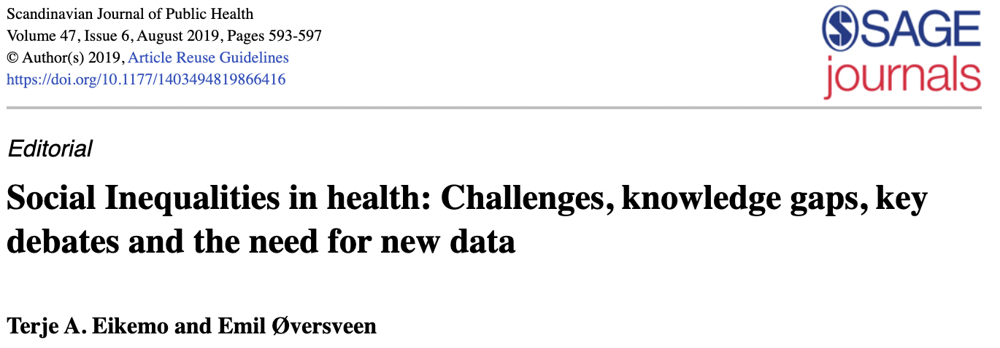
Decomposition Techniques for Social Epidemiology: Why and How
Danish Epidemiological Society Conference
Sam Harper
2026-09-22
Enough already?
Nevertheless, health inequalities are socially produced, and therefore, also potentially avoidable. However, effective political interventions require a scientific understanding of the causal mechanisms generating the strong and persistent correlations between social conditions and health outcomes.
How can we find out?
Eikemo and Øversveen (2019)
Decomposition: from description to explanation
What changed?
Explaining growing or shrinking gaps
Which ‘components’?
Bridge between descriptive and causal
What if?
Techniques often involve ‘counterfactual’ scenarios
Danish smoking has declined from 21% (2010) to 11% (2025)
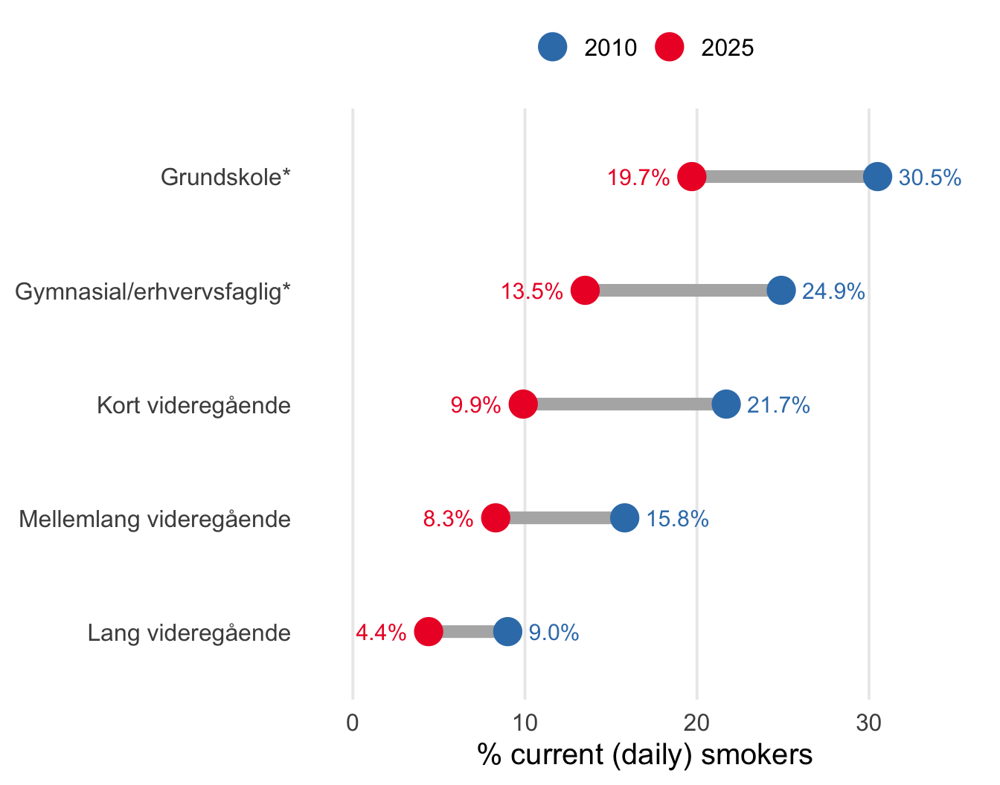
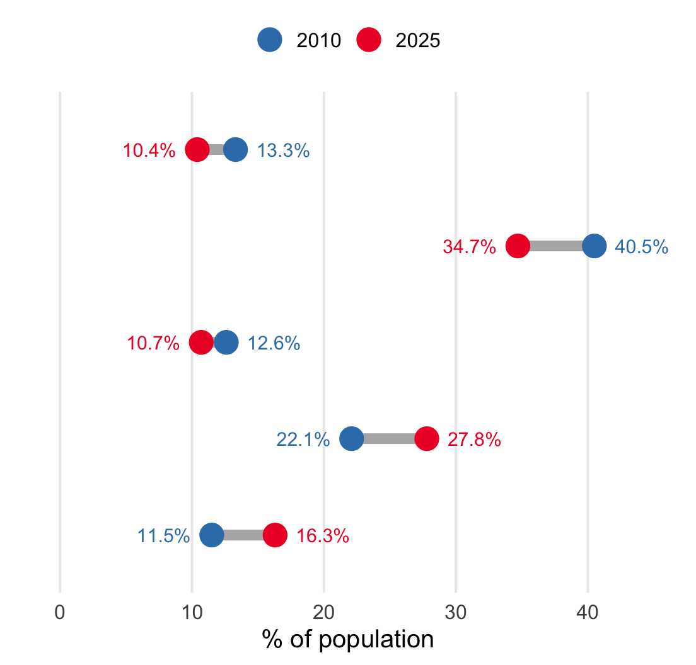
Source: Den Nationale Sundhedsprofil 2010 (Tabel 4.1.1) and 2025 (Tabel 3.1.3), Statens Institut for Folkesundhed / Sundhedsstyrelsen.
“But obviously the next stage is to break down the twelve-monthly death rates so far examined in order to discover at what ages and from which causes inequality derives its strength”
-Richard Titmuss (1943)
Covered Today
1. Kitagawa’s Decomposition
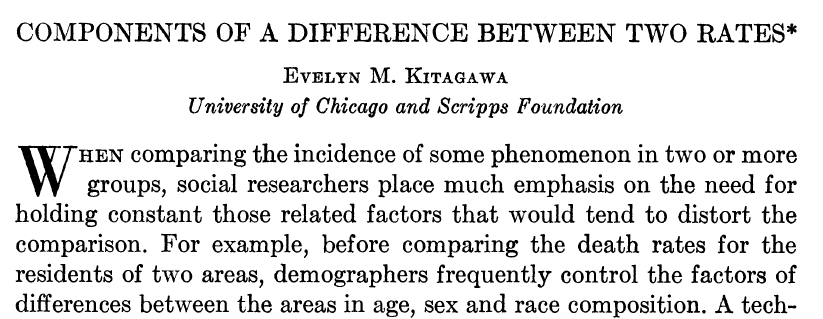
If standardization alters a difference between two rates, it should be possible … to break it up into components attributable to the various factors for which the data were standardized.
‘Unpacking’ the difference between crude rates of two groups
Seminal paper by Kitagawa (1955)
Slide on crude vs standardized trends?
Consequences of ignoring composition
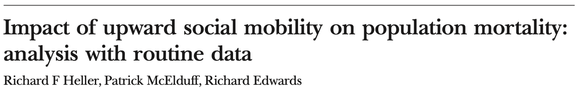
may give a distorted view of the overall level of health inequality due to social class differentials as it does not take into account the changing distribution of social class within the whole population.
changes in the distribution of social class across the population are an important contributor to recent reductions in mortality
Heller, McElduff, and Edwards (2002)
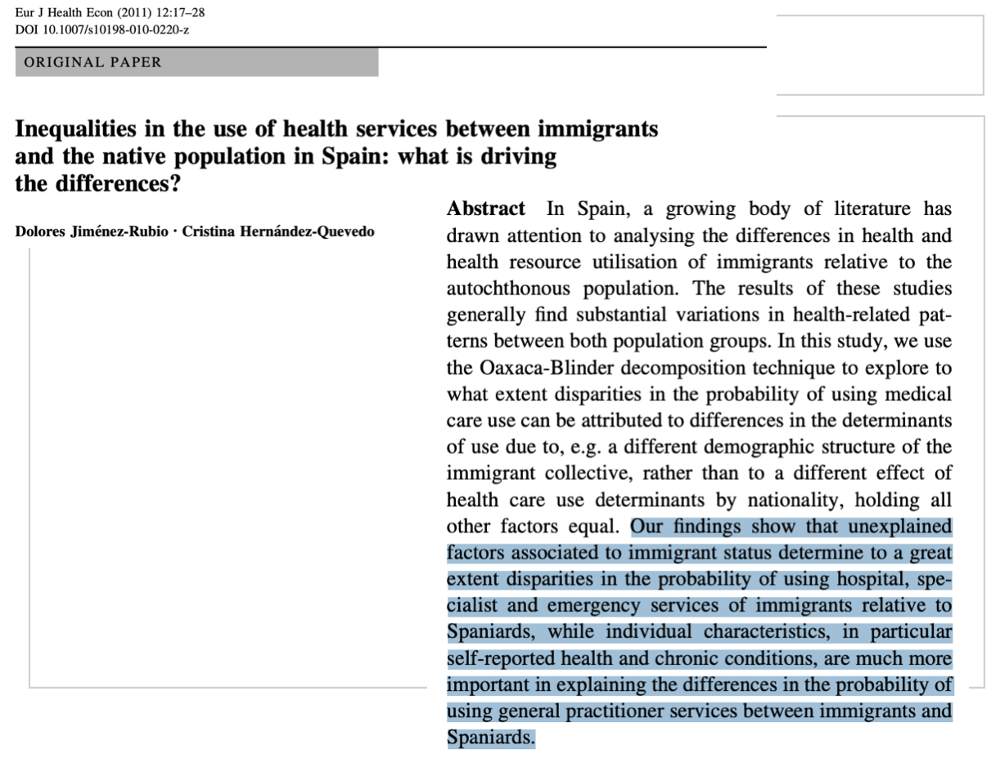
Kitagawa: Why?
Rate differences define inequalities
Rates are complex, reflect both composition and incidence
how much of it is because the groups differ in composition versus because the same factor matters differently for each group?
Group rate: \(R_{i} = y_{i}/n_{i}\)
Group share: \(P_{i} = n_{i}/\sum_{i} n_{i}\)
Crude rate: \(\frac{\sum_{i=1}^{I} y_{i}}{\sum_{i=1}^{I} n_{i}} = \sum_{i=1}^{I} P_{i}R_{i}\)
Standardized rate: \(\frac{\sum_{i=1}^{I} y_{i}}{\sum_{i=1}^{I} s_{i}} = \sum_{i=1}^{I} S_{i}R_{i}\)
where \(S_{i}\) is the share of group i in a standard population (\(\sum_{i} S_{i} = 1\))
| Stratum | Pop | Count | Rate |
|---|---|---|---|
| \(1\) | \(n_{i}\) | \(y_{i}\) | \(r_{i}\) |
| \(\vdots\) | \(\vdots\) | \(\vdots\) | \(\vdots\) |
| \(I\) | \(N\) | \(Y\) | \(R\) |
| Group A | Group B | |||
|---|---|---|---|---|
| Age | Share | Rate | Share | Rate |
| Young | 30% | 10 | 50% | 20 |
| Old | 70% | 40 | 50% | 30 |
| Crude | 31 | 25 | ||
| Standardized to A | 31 | 27 | ||
Standardization question:
What would the \(A-B\) difference be if \(B\) had \(A\)’s age distribution?
Kitagawa’s key insight
…if the difference between two standardized rates is subtracted from the corresponding difference in crude rates…the result is a weighted average of differences between the composition of the two groups.
But what are the weights?
Crude difference = \(\sum P_{Ai}R_{Ai} - \sum P_{Bi}R_{Bi}\)
→ Reflects differences in both rates and composition
Standardized difference (A as standard) = \(\sum P_{Ai}R_{Ai} - \sum P_{Ai}R_{Bi}\)
→ Reflects only differences in rates (\(P_{Ai}\) is constant)
Crude - Standardized: \(\sum R_{Bi}(P_{Ai}-P_{Bi})\)
→ Differences in composition, weighted by \(B\)s rates!
Need, task, and the main message
Crude difference = \(\sum P_{Ai}R_{Ai} - \sum P_{Bi}R_{Bi}\)
The gap between the actual and desired situation — why this talk exists.
Task
What you did (or will argue) to address that gap.
Message
The one sentence you want remembered if nothing else is.
Crude difference = \(\sum P_{Ai}R_{Ai} - \sum P_{Bi}R_{Bi}\)
Reflects differences in both rates and composition
Standardized difference (A as standard) = \(\sum P_{Ai}R_{Ai} - \sum P_{Ai}R_{Bi}\)
Reflects only differences in rates (\(P_{Ai}\) is constant)
Crude - Standardized: \(\sum R_{Bi}(P_{Ai}-P_{Bi})\)
Differences in composition, weighted by \(B\)s rates!
Applying the decomposition
\[\begin{aligned} \underbrace{\text{Rate}_A - \text{Rate}_B}_{\text{crude difference}} &= \overbrace{\sum_i \left(\frac{R_{Ai}+R_{Bi}}{2}\right)(P_{Ai}-P_{Bi})}^{\text{composition effect}} \\ &+ \underbrace{\sum_i \left(\frac{P_{Ai}+P_{Bi}}{2}\right)(R_{Ai}-R_{Bi})}_{\text{rate effect}} \end{aligned}\]
\(R_{Ai}\) is the rate for group A in stratum i.
\(P_{Ai}\) is the i-stratum-specific weight in group A.
| Group A | Group B | |||
|---|---|---|---|---|
| Age | Share | Rate | Share | Rate |
| Young | 30% | 10 | 50% | 20 |
| Old | 70% | 40 | 50% | 30 |
| Composition effect | |||
|---|---|---|---|
| Group | \(\frac{R_{Ai}+R_{Bi}}{2}\) | \(P_{Ai}-P_{Bi}\) | Contribution |
| Young | 15 | −0.20 | −3.0 |
| Old | 35 | +0.20 | +7.0 |
| Sum | +4.0 | ||
| Rate effect | |||
|---|---|---|---|
| Group | \(\frac{P_{Ai}+P_{Bi}}{2}\) | \(R_{Ai}-R_{Bi}\) | Contribution |
| Young | 0.40 | −10 | −4.0 |
| Old | 0.60 | +10 | +6.0 |
| Sum | +2.0 | ||
Total = +6.0 = crude gap (31 − 25) →67% due to composition
Rate effect (+2) = standardized gap (28 − 26)
Kitagawa: does the reference group matter?
| Reference | Composition | Rate | Total |
|---|---|---|---|
| A's rates | 6.0 | 0.0 | 6.0 |
| B's rates | 2.0 | 4.0 | 6.0 |
| Average (Kitagawa) | 4.0 | 2.0 | 6.0 |
Crude gap = 31 − 25 = 6 in every row; only the split changes
The one-sided rows differ by the interaction, \(\sum_i (P_{Ai}-P_{Bi})(R_{Ai}-R_{Bi})\) = 4.0, which the average splits evenly
Same toy example as the previous slides. The rate difference changes sign between strata (B higher when young, lower when old), so the one-sided answers diverge sharply: A’s rates as reference attribute the whole gap to composition (rate effect 0); B’s rates give rate +4.
Kitagawa’s three-component version
\[\underbrace{\text{Rate}_A - \text{Rate}_B}_{\text{crude difference}} = \overbrace{\sum_i R_{Bi}(P_{Ai}-P_{Bi})}^{\text{composition}} + \overbrace{\sum_i P_{Bi}(R_{Ai}-R_{Bi})}^{\text{rate}} + \overbrace{\sum_i (R_{Ai}-R_{Bi})(P_{Ai}-P_{Bi})}^{\text{interaction}}\]
| Composition | |||
|---|---|---|---|
| Group | \(R_{Bi}\) | \(P_{Ai}-P_{Bi}\) | Contrib. |
| Young | 20 | −0.20 | −4.0 |
| Old | 30 | +0.20 | +6.0 |
| Sum | +2.0 | ||
| Rate | |||
|---|---|---|---|
| Group | \(P_{Bi}\) | \(R_{Ai}-R_{Bi}\) | Contrib. |
| Young | 0.50 | −10 | −5.0 |
| Old | 0.50 | +10 | +5.0 |
| Sum | 0.0 | ||
| Interaction | |||
|---|---|---|---|
| Group | \(R_{Ai}-R_{Bi}\) | \(P_{Ai}-P_{Bi}\) | Contrib. |
| Young | −10 | −0.20 | +2.0 |
| Old | +10 | +0.20 | +2.0 |
| Sum | +4.0 | ||
Total = +2.0 + 0.0 + 4.0 = +6.0 = crude gap (31 − 25)
Add the interaction to composition: +6.0 and 0.0 (A’s rates). Add it to rate: +2.0 and +4.0 (B’s rates).
What contributes to a difference?
Group differences in stratum-specific rates
Group differences in composition of strata
“Group” can be social or time
Seminal paper by Kitagawa (1955)
What accounts for differences in neonatal mortality rates across European countries?
GA-specific rates or distribution?
Implications for interventions?
Sartorius et al. (2024)
Hiding in plain sight?
Both DK and AT similar and ~0.3 deaths per 1000 higher than “Top 3”
But completely different contributions to the difference
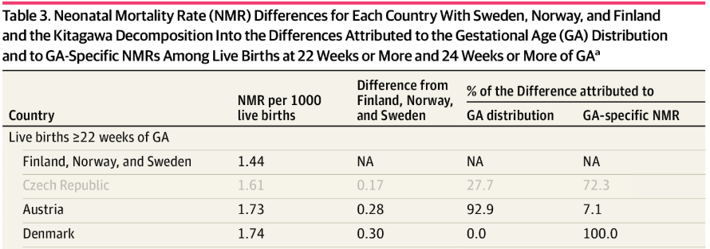
Sartorius et al. (2024)
Denmark and Austria: higher NMR at lower GA, lower at higher GA
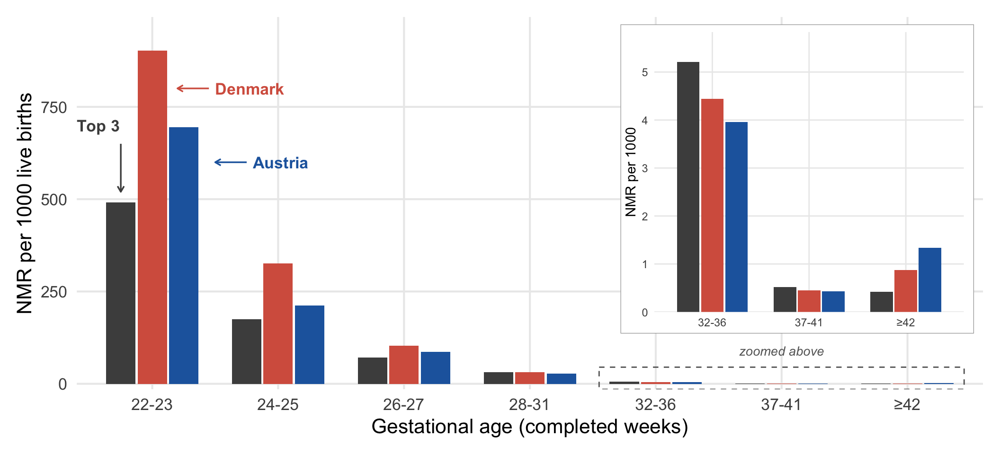
Sartorius et al. (2024)
Distribution of GA: DK shifted left, AT shifted right
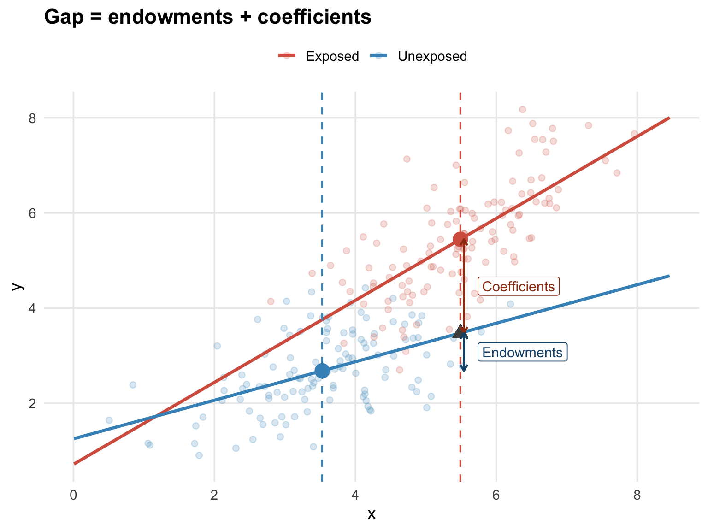
Sartorius et al. (2024)
Covered Today
2. Oaxaca–Blinder Decomposition
Idea for Decomposition of Means
The core idea is to explain the distribution of the outcome variable in question by a set of factors that vary systematically with exposure status.
Thus, we want to know, on average, why the mean level of health or disease differs between exposed and unexposed groups.
Since, for most health outcomes there are multiple determinants, we may want to know which of these determinants plays more or less important roles in explaining the difference in average outcomes.
“Unpacking” or “decomposing” difference.
Origins

Brief note on interpretation
Decomposition methods are based on regression analyses, and thus all of the usual caveats about good specification apply.
If regressions are purely descriptive, they reveal the associations that characterize the health inequality. Then inequality is explained in a statistical sense but implications for policies to reduce inequality are limited.
O’Donnell et al. (2008)
Oaxaca-Blinder: Basic Idea
What explains average differences in outcomes?
1. Means
Differences in the prevalence of determinants of outcome
2. Coefficients
Differences in the coefficient of a given determinant on the outcome (i.e., effect measure modification)
If this sounds familiar…
O-B decomp is a generalization of Kitagawa
Equivalent for binary outcome and categorical covariates
Why does this work?
OLS regression line always passes through \((\bar{x}, \bar{y})\) because residuals sum to zero.
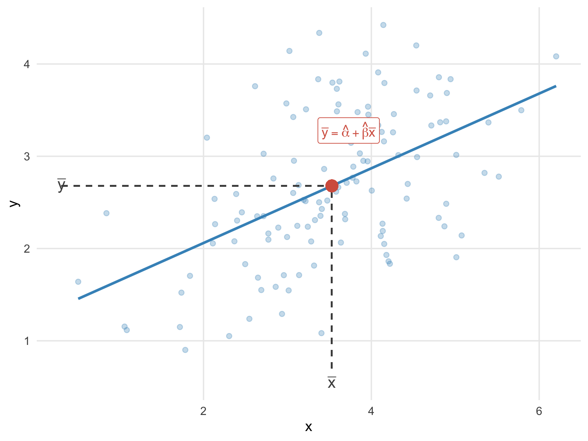
Why does this work?
The gap decomposes into endowments (different \(\bar{x}\), same coefficients) and coefficients (same \(\bar{x}\), different slopes/intercepts).

Equally valid to use the exposed group’s slope
Same total gap, but different split
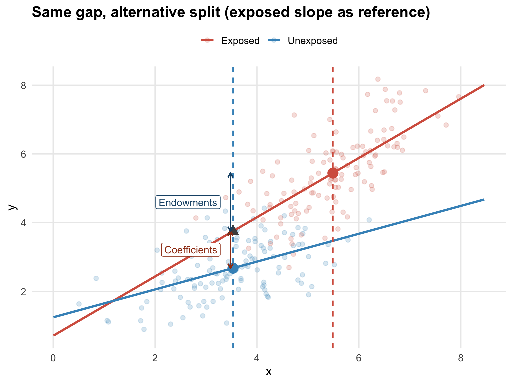
Example: Educational Differences in BMI in Italy
What is the average difference in body mass index (BMI) between those with low vs. high education?
How much of this difference is due to the fact that determinants of BMI (age, gender, smoking, drinking, income) differ between education groups?
Any residual difference is due to education differences in the associations between those risk factors and BMI — i.e., the coefficients differ.
Example data
European Social Survey Round 11, Italy (n = 1743)
Body mass index as outcome (kg/m²): weight / height²
Overall difference by education: High ed (ISCED 5–7) vs Low ed (ISCED 1–4)
Potential determinants (the Xs):
- age (years)
- gender (female = 1)
- smoking (1 = current smoker)
- binge drinking (1 = monthly or more)
- married (1 = currently married)
- income decile (1–10)
High ed BMI: 23.6, Low ed BMI: 25.2, Gap = 1.6
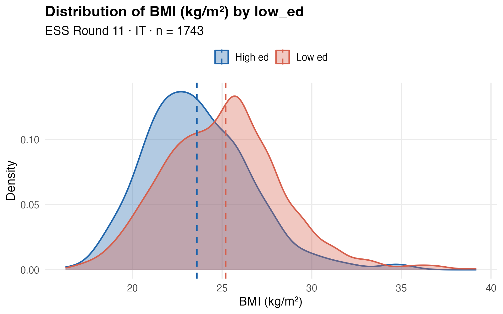
Source: Author’s calculations
Differences in determinants
Differences in age, smoking, etc. could explain part of the BMI gap
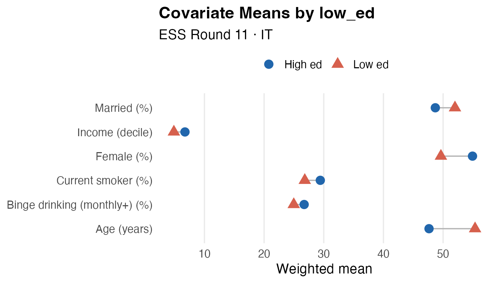
Source: Author’s calculations
Differences in coefficients
Each covariate may have a different association with BMI by education
Differences in returns form the unexplained component
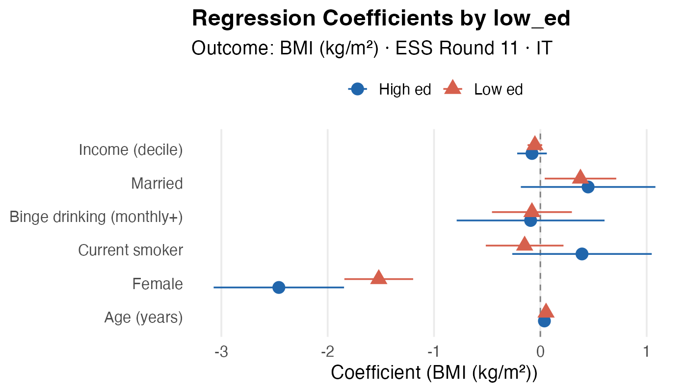
Decomposition results: variable contributions
Endowments: 38%; Coefficients: 62%
| Endowments | Coefficients | |||
|---|---|---|---|---|
| Est | SE | Est | SE | |
| Total | 0.608 | 0.108 | 1.030 | 0.259 |
| Age (years) | 0.415 | 0.074 | 0.865 | 0.691 |
| Female | 0.080 | 0.051 | 0.466 | 0.181 |
| Current smoker | 0.004 | 0.008 | -0.145 | 0.115 |
| Binge drinking (monthly+) | 0.001 | 0.007 | 0.003 | 0.104 |
| Married | 0.012 | 0.016 | -0.037 | 0.208 |
| Income (decile) | 0.095 | 0.071 | 0.133 | 0.425 |
| Intercept | — | — | -0.256 | 0.837 |
Low ed betas used as reference; rows show each variable’s contribution to the overall gap of 1.61 kg/m²
Summary: Endowments = 38%, Coefficients = 62%
| Endowments | ||
|---|---|---|
| Est | SE | |
| Total | 0.608 | 0.108 |
| Age (years) | 0.415 | 0.074 |
| Female | 0.080 | 0.051 |
| Current smoker | 0.004 | 0.008 |
| Binge drinking (monthly+) | 0.001 | 0.007 |
| Married | 0.012 | 0.016 |
| Income (decile) | 0.095 | 0.071 |
Interpretation:
If the low-educated had the same covariate means as the high-educated (keeping the low-educated group’s own coefficients), their BMI would be 0.608 \(kg/m^2\) lower — closing 38% of the gap.
Most of this is due to older age among the low-educated, which predicts higher BMI.
Summary: Endowments = 38%, Coefficients = 62%
Interpretation:
If the high-educated group’s covariates had the same relationship with BMI as they do in the low-educated group, their BMI would be 1.030 higher, accounting for 62% of the gap.
Note smoking is negative, since smoking predicts higher BMI among the high-educated and is more common among high educated.
| Coefficients | ||
|---|---|---|
| Est | SE | |
| Total | 1.030 | 0.259 |
| Age (years) | 0.865 | 0.691 |
| Female | 0.466 | 0.181 |
| Current smoker | -0.145 | 0.115 |
| Binge drinking (monthly+) | 0.003 | 0.104 |
| Married | -0.037 | 0.208 |
| Income (decile) | 0.133 | 0.425 |
| Intercept | -0.256 | 0.837 |
Which covariates drive the endowments?
Variables where groups differ and that predict BMI contribute most
Income and age are the biggest drivers
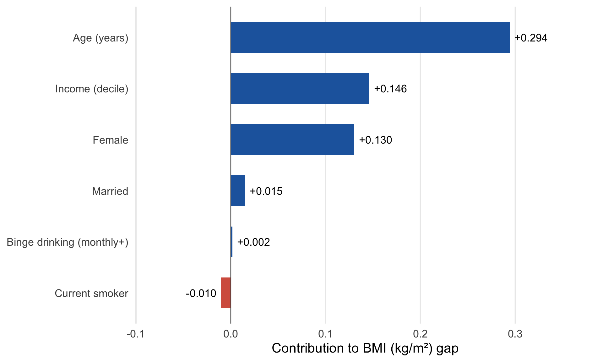
Decomposition results: does the reference group matter?

Endowments account for 36–44% of it; interaction is negligible
Break! ☕
Covered Today
3. Concentration Index Decomposition
We want to understand this:
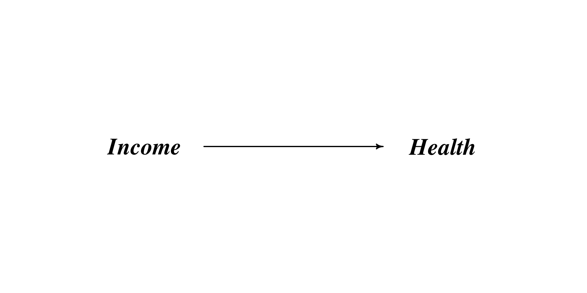
By evaluating something like this:
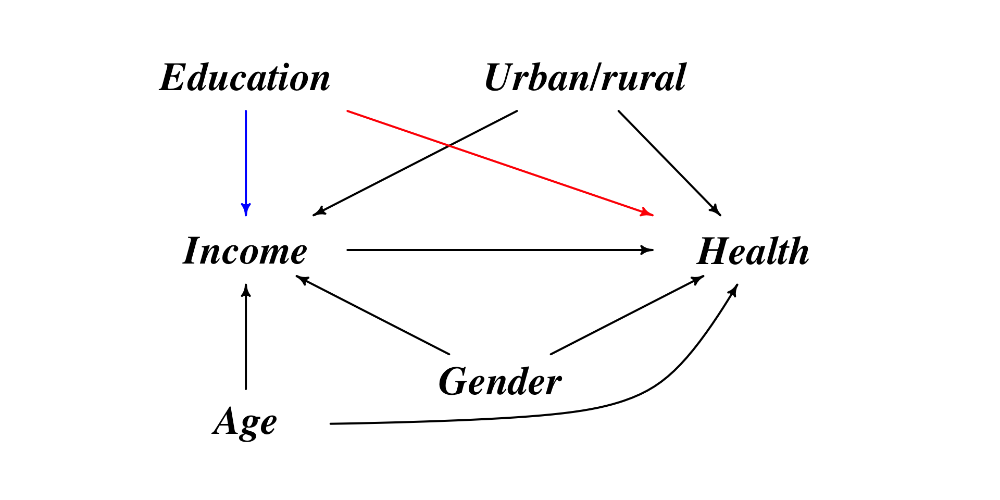
Research Question:
How much of inequality is due to other factors that are differential by \(x\) (income) and also affect \(y\) (health)?
Relative Concentration Curve
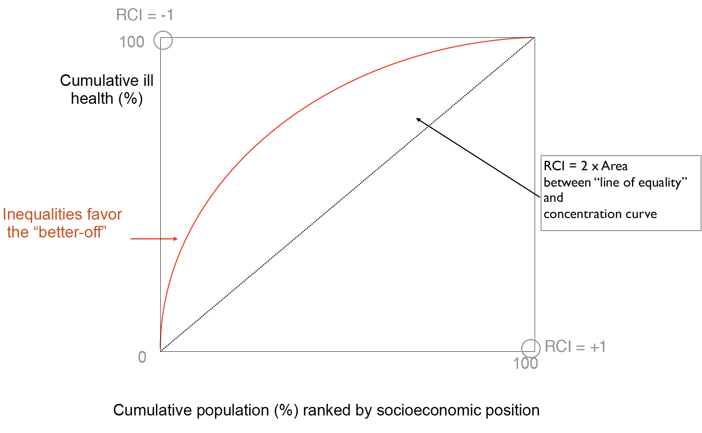
Relative Concentration Index
\[RCI= \frac{2}{n\mu} \sum_{i=1}^{n}y_{i}R_{i}-1\]
where
- \(\mu\) is the mean of \(y_{i}\) (e.g., smoking);
- \(R_{i}\) is the fractional rank of the ith person in the socioeconomic (i.e., income) distribution.
Decomposition:
Develop a model for predicting \(y\) using several determinants, then plug back into the \(RCI\) equation
Estimates how much of the overall inequality in \(y\) is due to the association between income and other factors that predict health
Kakwani, Wagstaff, and Doorslaer (1997)
RCI Decomposition
\(RCI\) is a function of health \((y_{i})\) and socioeconomic rank \((R_{i})\), i.e. \[RCI= \frac{2}{n\mu} \sum_{i=1}^{n}{\color{red}{y_{i}}}R_{i}-1\]
Then write a regression expressing health \((y_{i})\) as a function of several \(k_{i}\) determinants (e.g., age, gender, urban/rural status): \[\color{red}{y_{i}}=\alpha + \sum{\beta_{x}x_{k_{i}}}+\epsilon_{i}\]
Wagstaff, Doorslaer, and Watanabe (2003)
RCI Decomposition
Now re-express \(RCI\) as:
\[RCI=\sum{(\beta_{k}\bar{x}_{k}/\mu)RCI_{k}}+gRCI_{e}/\mu\]
Where
- \(\mu\) is the mean of \(y\),
- \(\bar{x}_{k}\) is the mean of determinant \(x_{k}\),
- \(\beta_{k}\) is the regression coefficient for \(x_{k}\), and
- \(RCI_{k}\) is the relative concentration index for \(x_{k}\).
Two types of ‘explained’ components
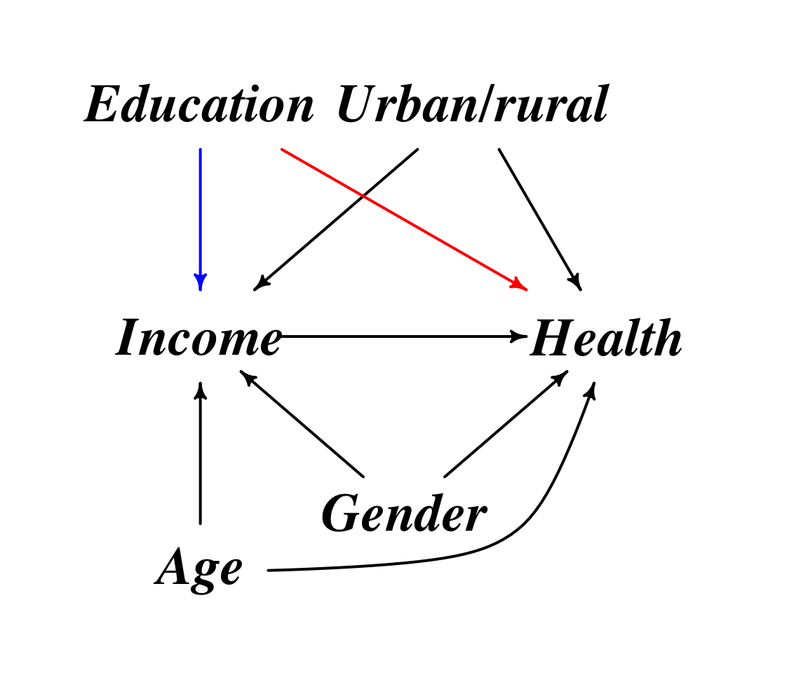
Determinant impact depends on:
the strength of the relationship between each factor and income \(\color{blue}{RCI_{k}}\)
the strength of the relationship between each factor and health, and its prevalence in the population (elasticity) \(\color{red}{\beta_{k}\bar{x}_{k}/\mu}\)
Procedure for decomposing the Concentration Index
- Regress \(y\) (‘health’) on its determinants \((\beta_{k}x_{k})\):
\[y_{i}=\alpha + \sum{\beta_{x}x_{k_{i}}}+\epsilon_{i}\]
Calculate means of \(y\) \((\mu)\) and all \(x_{k}\) determinants
Calculate (\(CI\)) for the health variable and for each determinant \((CI_{k})\). This means using each determinant \(x_{k}\) as the “outcome” and estimate a \(CI\) for age, \(CI\) for education, etc.
Procedure for decomposing the Concentration Index
- Absolute contribution: for each \(x\) multiply ‘elasticity’ by its concentration index \((CI_{k})\):
\[(\beta_{k}\bar{x}_{k}/\mu)RCI_{k}\]
- Calculate the % contribution of each determinant:
\[[(\beta_{k}\bar{x}_{k}/\mu)RCI_{k}]/RCI\]
Example: Decomposing Socioeconomic Inequality in Current Smoking
Data: European Social Survey Round 11 for Sweden
| Unique | Missing Pct. | Mean | SD | Min | Median | Max | Histogram | |
|---|---|---|---|---|---|---|---|---|
| Current smoker | 2 | 0 | 0.1 | 0.2 | 0.0 | 0.0 | 1.0 | ![](data:image/png;base64, iVBORw0KGgoAAAANSUhEUgAABLAAAAGQCAYAAAC+tZleAAAEDmlDQ1BrQ0dDb2xvclNwYWNlR2VuZXJpY1JHQgAAOI2NVV1oHFUUPpu5syskzoPUpqaSDv41lLRsUtGE2uj+ZbNt3CyTbLRBkMns3Z1pJjPj/KRpKT4UQRDBqOCT4P9bwSchaqvtiy2itFCiBIMo+ND6R6HSFwnruTOzu5O4a73L3PnmnO9+595z7t4LkLgsW5beJQIsGq4t5dPis8fmxMQ6dMF90A190C0rjpUqlSYBG+PCv9rt7yDG3tf2t/f/Z+uuUEcBiN2F2Kw4yiLiZQD+FcWyXYAEQfvICddi+AnEO2ycIOISw7UAVxieD/Cyz5mRMohfRSwoqoz+xNuIB+cj9loEB3Pw2448NaitKSLLRck2q5pOI9O9g/t/tkXda8Tbg0+PszB9FN8DuPaXKnKW4YcQn1Xk3HSIry5ps8UQ/2W5aQnxIwBdu7yFcgrxPsRjVXu8HOh0qao30cArp9SZZxDfg3h1wTzKxu5E/LUxX5wKdX5SnAzmDx4A4OIqLbB69yMesE1pKojLjVdoNsfyiPi45hZmAn3uLWdpOtfQOaVmikEs7ovj8hFWpz7EV6mel0L9Xy23FMYlPYZenAx0yDB1/PX6dledmQjikjkXCxqMJS9WtfFCyH9XtSekEF+2dH+P4tzITduTygGfv58a5VCTH5PtXD7EFZiNyUDBhHnsFTBgE0SQIA9pfFtgo6cKGuhooeilaKH41eDs38Ip+f4At1Rq/sjr6NEwQqb/I/DQqsLvaFUjvAx+eWirddAJZnAj1DFJL0mSg/gcIpPkMBkhoyCSJ8lTZIxk0TpKDjXHliJzZPO50dR5ASNSnzeLvIvod0HG/mdkmOC0z8VKnzcQ2M/Yz2vKldduXjp9bleLu0ZWn7vWc+l0JGcaai10yNrUnXLP/8Jf59ewX+c3Wgz+B34Df+vbVrc16zTMVgp9um9bxEfzPU5kPqUtVWxhs6OiWTVW+gIfywB9uXi7CGcGW/zk98k/kmvJ95IfJn/j3uQ+4c5zn3Kfcd+AyF3gLnJfcl9xH3OfR2rUee80a+6vo7EK5mmXUdyfQlrYLTwoZIU9wsPCZEtP6BWGhAlhL3p2N6sTjRdduwbHsG9kq32sgBepc+xurLPW4T9URpYGJ3ym4+8zA05u44QjST8ZIoVtu3qE7fWmdn5LPdqvgcZz8Ww8BWJ8X3w0PhQ/wnCDGd+LvlHs8dRy6bLLDuKMaZ20tZrqisPJ5ONiCq8yKhYM5cCgKOu66Lsc0aYOtZdo5QCwezI4wm9J/v0X23mlZXOfBjj8Jzv3WrY5D+CsA9D7aMs2gGfjve8ArD6mePZSeCfEYt8CONWDw8FXTxrPqx/r9Vt4biXeANh8vV7/+/16ffMD1N8AuKD/A/8leAvFY9bLAAAAOGVYSWZNTQAqAAAACAABh2kABAAAAAEAAAAaAAAAAAACoAIABAAAAAEAAASwoAMABAAAAAEAAAGQAAAAAPKgHusAACf/SURBVHgB7dw9zpQFG4bh4QNXoZBgoTZWugfXYFiBS3AFrsSwAgv3YGcjFmgglBZWVgTRfLG+xtfM+QxzvJUm93A9c8wYzOnPvTdvf05+CBAgQIAAAQIECBAgQIAAAQIECBxU4H8HfS6PRYAAAQIECBAgQIAAAQIECBAgQOBvAQHLF4EAAQIECBAgQIAAAQIECBAgQODQAgLWoT8eD0eAAAECBAgQIECAAAECBAgQICBg+Q4QIECAAAECBAgQIECAAAECBAgcWkDAOvTH4+EIECBAgAABAgQIECBAgAABAgQELN8BAgQIECBAgAABAgQIECBAgACBQwsIWIf+eDwcAQIECBAgQIAAAQIECBAgQICAgOU7QIAAAQIECBAgQIAAAQIECBAgcGgBAevQH4+HI0CAAAECBAgQIECAAAECBAgQELB8BwgQIECAAAECBAgQIECAAAECBA4tIGAd+uPxcAQIECBAgAABAgQIECBAgAABAgKW7wABAgQIECBAgAABAgQIECBAgMChBQSsQ388Ho4AAQIECBAgQIAAAQIECBAgQODBtRF88803p+fPn1/bY3vetwIffvjh6euvv2ZBgAABAgQIECBAgAABAgQIEDhL4N6btz9nvSI+fvTo0enly5fxU5j/NwIPHz48vXjx4t+81GsIECBAgAABAgQIECBAgACBGxa4uv+E8P79+zf8cV33W3/w4Or+hb/rBvf0BAgQIECAAAECBAgQIEDgHRG4uoD1jrh7GwQIECBAgAABAgQIECBAgAABAqOAgDVCOSNAgAABAgQIECBAgAABAgQIEGgEBKzG3SoBAgQIECBAgAABAgQIECBAgMAoIGCNUM4IECBAgAABAgQIECBAgAABAgQaAQGrcbdKgAABAgQIECBAgAABAgQIECAwCghYI5QzAgQIECBAgAABAgQIECBAgACBRkDAatytEiBAgAABAgQIECBAgAABAgQIjAIC1gjljAABAgQIECBAgAABAgQIECBAoBEQsBp3qwQIECBAgAABAgQIECBAgAABAqOAgDVCOSNAgAABAgQIECBAgAABAgQIEGgEBKzG3SoBAgQIECBAgAABAgQIECBAgMAoIGCNUM4IECBAgAABAgQIECBAgAABAgQaAQGrcbdKgAABAgQIECBAgAABAgQIECAwCghYI5QzAgQIECBAgAABAgQIECBAgACBRkDAatytEiBAgAABAgQIECBAgAABAgQIjAIC1gjljAABAgQIECBAgAABAgQIECBAoBEQsBp3qwQIECBAgAABAgQIECBAgAABAqOAgDVCOSNAgAABAgQIECBAgAABAgQIEGgEBKzG3SoBAgQIECBAgAABAgQIECBAgMAoIGCNUM4IECBAgAABAgQIECBAgAABAgQaAQGrcbdKgAABAgQIECBAgAABAgQIECAwCghYI5QzAgQIECBAgAABAgQIECBAgACBRkDAatytEiBAgAABAgQIECBAgAABAgQIjAIC1gjljAABAgQIECBAgAABAgQIECBAoBEQsBp3qwQIECBAgAABAgQIECBAgAABAqOAgDVCOSNAgAABAgQIECBAgAABAgQIEGgEBKzG3SoBAgQIECBAgAABAgQIECBAgMAoIGCNUM4IECBAgAABAgQIECBAgAABAgQaAQGrcbdKgAABAgQIECBAgAABAgQIECAwCghYI5QzAgQIECBAgAABAgQIECBAgACBRkDAatytEiBAgAABAgQIECBAgAABAgQIjAIC1gjljAABAgQIECBAgAABAgQIECBAoBEQsBp3qwQIECBAgAABAgQIECBAgAABAqOAgDVCOSNAgAABAgQIECBAgAABAgQIEGgEBKzG3SoBAgQIECBAgAABAgQIECBAgMAoIGCNUM4IECBAgAABAgQIECBAgAABAgQaAQGrcbdKgAABAgQIECBAgAABAgQIECAwCghYI5QzAgQIECBAgAABAgQIECBAgACBRkDAatytEiBAgAABAgQIECBAgAABAgQIjAIC1gjljAABAgQIECBAgAABAgQIECBAoBEQsBp3qwQIECBAgAABAgQIECBAgAABAqOAgDVCOSNAgAABAgQIECBAgAABAgQIEGgEBKzG3SoBAgQIECBAgAABAgQIECBAgMAoIGCNUM4IECBAgAABAgQIECBAgAABAgQaAQGrcbdKgAABAgQIECBAgAABAgQIECAwCghYI5QzAgQIECBAgAABAgQIECBAgACBRkDAatytEiBAgAABAgQIECBAgAABAgQIjAIC1gjljAABAgQIECBAgAABAgQIECBAoBEQsBp3qwQIECBAgAABAgQIECBAgAABAqOAgDVCOSNAgAABAgQIECBAgAABAgQIEGgEBKzG3SoBAgQIECBAgAABAgQIECBAgMAoIGCNUM4IECBAgAABAgQIECBAgAABAgQaAQGrcbdKgAABAgQIECBAgAABAgQIECAwCghYI5QzAgQIECBAgAABAgQIECBAgACBRkDAatytEiBAgAABAgQIECBAgAABAgQIjAIC1gjljAABAgQIECBAgAABAgQIECBAoBEQsBp3qwQIECBAgAABAgQIECBAgAABAqOAgDVCOSNAgAABAgQIECBAgAABAgQIEGgEBKzG3SoBAgQIECBAgAABAgQIECBAgMAoIGCNUM4IECBAgAABAgQIECBAgAABAgQaAQGrcbdKgAABAgQIECBAgAABAgQIECAwCghYI5QzAgQIECBAgAABAgQIECBAgACBRkDAatytEiBAgAABAgQIECBAgAABAgQIjAIC1gjljAABAgQIECBAgAABAgQIECBAoBEQsBp3qwQIECBAgAABAgQIECBAgAABAqOAgDVCOSNAgAABAgQIECBAgAABAgQIEGgEBKzG3SoBAgQIECBAgAABAgQIECBAgMAoIGCNUM4IECBAgAABAgQIECBAgAABAgQaAQGrcbdKgAABAgQIECBAgAABAgQIECAwCghYI5QzAgQIECBAgAABAgQIECBAgACBRkDAatytEiBAgAABAgQIECBAgAABAgQIjAIC1gjljAABAgQIECBAgAABAgQIECBAoBEQsBp3qwQIECBAgAABAgQIECBAgAABAqOAgDVCOSNAgAABAgQIECBAgAABAgQIEGgEBKzG3SoBAgQIECBAgAABAgQIECBAgMAoIGCNUM4IECBAgAABAgQIECBAgAABAgQaAQGrcbdKgAABAgQIECBAgAABAgQIECAwCghYI5QzAgQIECBAgAABAgQIECBAgACBRkDAatytEiBAgAABAgQIECBAgAABAgQIjAIC1gjljAABAgQIECBAgAABAgQIECBAoBEQsBp3qwQIECBAgAABAgQIECBAgAABAqOAgDVCOSNAgAABAgQIECBAgAABAgQIEGgEBKzG3SoBAgQIECBAgAABAgQIECBAgMAoIGCNUM4IECBAgAABAgQIECBAgAABAgQaAQGrcbdKgAABAgQIECBAgAABAgQIECAwCghYI5QzAgQIECBAgAABAgQIECBAgACBRkDAatytEiBAgAABAgQIECBAgAABAgQIjAIC1gjljAABAgQIECBAgAABAgQIECBAoBEQsBp3qwQIECBAgAABAgQIECBAgAABAqOAgDVCOSNAgAABAgQIECBAgAABAgQIEGgEBKzG3SoBAgQIECBAgAABAgQIECBAgMAoIGCNUM4IECBAgAABAgQIECBAgAABAgQaAQGrcbdKgAABAgQIECBAgAABAgQIECAwCghYI5QzAgQIECBAgAABAgQIECBAgACBRkDAatytEiBAgAABAgQIECBAgAABAgQIjAIC1gjljAABAgQIECBAgAABAgQIECBAoBEQsBp3qwQIECBAgAABAgQIECBAgAABAqOAgDVCOSNAgAABAgQIECBAgAABAgQIEGgEBKzG3SoBAgQIECBAgAABAgQIECBAgMAoIGCNUM4IECBAgAABAgQIECBAgAABAgQaAQGrcbdKgAABAgQIECBAgAABAgQIECAwCghYI5QzAgQIECBAgAABAgQIECBAgACBRkDAatytEiBAgAABAgQIECBAgAABAgQIjAIC1gjljAABAgQIECBAgAABAgQIECBAoBEQsBp3qwQIECBAgAABAgQIECBAgAABAqOAgDVCOSNAgAABAgQIECBAgAABAgQIEGgEBKzG3SoBAgQIECBAgAABAgQIECBAgMAoIGCNUM4IECBAgAABAgQIECBAgAABAgQaAQGrcbdKgAABAgQIECBAgAABAgQIECAwCghYI5QzAgQIECBAgAABAgQIECBAgACBRkDAatytEiBAgAABAgQIECBAgAABAgQIjAIC1gjljAABAgQIECBAgAABAgQIECBAoBEQsBp3qwQIECBAgAABAgQIECBAgAABAqOAgDVCOSNAgAABAgQIECBAgAABAgQIEGgEBKzG3SoBAgQIECBAgAABAgQIECBAgMAoIGCNUM4IECBAgAABAgQIECBAgAABAgQaAQGrcbdKgAABAgQIECBAgAABAgQIECAwCghYI5QzAgQIECBAgAABAgQIECBAgACBRkDAatytEiBAgAABAgQIECBAgAABAgQIjAIC1gjljAABAgQIECBAgAABAgQIECBAoBEQsBp3qwQIECBAgAABAgQIECBAgAABAqOAgDVCOSNAgAABAgQIECBAgAABAgQIEGgEBKzG3SoBAgQIECBAgAABAgQIECBAgMAoIGCNUM4IECBAgAABAgQIECBAgAABAgQaAQGrcbdKgAABAgQIECBAgAABAgQIECAwCghYI5QzAgQIECBAgAABAgQIECBAgACBRkDAatytEiBAgAABAgQIECBAgAABAgQIjAIC1gjljAABAgQIECBAgAABAgQIECBAoBEQsBp3qwQIECBAgAABAgQIECBAgAABAqOAgDVCOSNAgAABAgQIECBAgAABAgQIEGgEBKzG3SoBAgQIECBAgAABAgQIECBAgMAoIGCNUM4IECBAgAABAgQIECBAgAABAgQaAQGrcbdKgAABAgQIECBAgAABAgQIECAwCghYI5QzAgQIECBAgAABAgQIECBAgACBRkDAatytEiBAgAABAgQIECBAgAABAgQIjAIC1gjljAABAgQIECBAgAABAgQIECBAoBEQsBp3qwQIECBAgAABAgQIECBAgAABAqOAgDVCOSNAgAABAgQIECBAgAABAgQIEGgEBKzG3SoBAgQIECBAgAABAgQIECBAgMAoIGCNUM4IECBAgAABAgQIECBAgAABAgQaAQGrcbdKgAABAgQIECBAgAABAgQIECAwCghYI5QzAgQIECBAgAABAgQIECBAgACBRkDAatytEiBAgAABAgQIECBAgAABAgQIjAIC1gjljAABAgQIECBAgAABAgQIECBAoBEQsBp3qwQIECBAgAABAgQIECBAgAABAqOAgDVCOSNAgAABAgQIECBAgAABAgQIEGgEBKzG3SoBAgQIECBAgAABAgQIECBAgMAoIGCNUM4IECBAgAABAgQIECBAgAABAgQaAQGrcbdKgAABAgQIECBAgAABAgQIECAwCghYI5QzAgQIECBAgAABAgQIECBAgACBRkDAatytEiBAgAABAgQIECBAgAABAgQIjAIC1gjljAABAgQIECBAgAABAgQIECBAoBEQsBp3qwQIECBAgAABAgQIECBAgAABAqOAgDVCOSNAgAABAgQIECBAgAABAgQIEGgEBKzG3SoBAgQIECBAgAABAgQIECBAgMAoIGCNUM4IECBAgAABAgQIECBAgAABAgQaAQGrcbdKgAABAgQIECBAgAABAgQIECAwCghYI5QzAgQIECBAgAABAgQIECBAgACBRkDAatytEiBAgAABAgQIECBAgAABAgQIjAIC1gjljAABAgQIECBAgAABAgQIECBAoBEQsBp3qwQIECBAgAABAgQIECBAgAABAqOAgDVCOSNAgAABAgQIECBAgAABAgQIEGgEBKzG3SoBAgQIECBAgAABAgQIECBAgMAoIGCNUM4IECBAgAABAgQIECBAgAABAgQaAQGrcbdKgAABAgQIECBAgAABAgQIECAwCghYI5QzAgQIECBAgAABAgQIECBAgACBRkDAatytEiBAgAABAgQIECBAgAABAgQIjAIC1gjljAABAgQIECBAgAABAgQIECBAoBEQsBp3qwQIECBAgAABAgQIECBAgAABAqOAgDVCOSNAgAABAgQIECBAgAABAgQIEGgEBKzG3SoBAgQIECBAgAABAgQIECBAgMAoIGCNUM4IECBAgAABAgQIECBAgAABAgQaAQGrcbdKgAABAgQIECBAgAABAgQIECAwCghYI5QzAgQIECBAgAABAgQIECBAgACBRkDAatytEiBAgAABAgQIECBAgAABAgQIjAIC1gjljAABAgQIECBAgAABAgQIECBAoBEQsBp3qwQIECBAgAABAgQIECBAgAABAqOAgDVCOSNAgAABAgQIECBAgAABAgQIEGgEBKzG3SoBAgQIECBAgAABAgQIECBAgMAoIGCNUM4IECBAgAABAgQIECBAgAABAgQaAQGrcbdKgAABAgQIECBAgAABAgQIECAwCghYI5QzAgQIECBAgAABAgQIECBAgACBRkDAatytEiBAgAABAgQIECBAgAABAgQIjAIC1gjljAABAgQIECBAgAABAgQIECBAoBEQsBp3qwQIECBAgAABAgQIECBAgAABAqOAgDVCOSNAgAABAgQIECBAgAABAgQIEGgEBKzG3SoBAgQIECBAgAABAgQIECBAgMAoIGCNUM4IECBAgAABAgQIECBAgAABAgQaAQGrcbdKgAABAgQIECBAgAABAgQIECAwCghYI5QzAgQIECBAgAABAgQIECBAgACBRkDAatytEiBAgAABAgQIECBAgAABAgQIjAIC1gjljAABAgQIECBAgAABAgQIECBAoBEQsBp3qwQIECBAgAABAgQIECBAgAABAqOAgDVCOSNAgAABAgQIECBAgAABAgQIEGgEBKzG3SoBAgQIECBAgAABAgQIECBAgMAoIGCNUM4IECBAgAABAgQIECBAgAABAgQaAQGrcbdKgAABAgQIECBAgAABAgQIECAwCghYI5QzAgQIECBAgAABAgQIECBAgACBRkDAatytEiBAgAABAgQIECBAgAABAgQIjAIC1gjljAABAgQIECBAgAABAgQIECBAoBEQsBp3qwQIECBAgAABAgQIECBAgAABAqOAgDVCOSNAgAABAgQIECBAgAABAgQIEGgEBKzG3SoBAgQIECBAgAABAgQIECBAgMAoIGCNUM4IECBAgAABAgQIECBAgAABAgQaAQGrcbdKgAABAgQIECBAgAABAgQIECAwCghYI5QzAgQIECBAgAABAgQIECBAgACBRkDAatytEiBAgAABAgQIECBAgAABAgQIjAIC1gjljAABAgQIECBAgAABAgQIECBAoBEQsBp3qwQIECBAgAABAgQIECBAgAABAqOAgDVCOSNAgAABAgQIECBAgAABAgQIEGgEBKzG3SoBAgQIECBAgAABAgQIECBAgMAoIGCNUM4IECBAgAABAgQIECBAgAABAgQaAQGrcbdKgAABAgQIECBAgAABAgQIECAwCghYI5QzAgQIECBAgAABAgQIECBAgACBRkDAatytEiBAgAABAgQIECBAgAABAgQIjAIC1gjljAABAgQIECBAgAABAgQIECBAoBEQsBp3qwQIECBAgAABAgQIECBAgAABAqOAgDVCOSNAgAABAgQIECBAgAABAgQIEGgEBKzG3SoBAgQIECBAgAABAgQIECBAgMAoIGCNUM4IECBAgAABAgQIECBAgAABAgQaAQGrcbdKgAABAgQIECBAgAABAgQIECAwCghYI5QzAgQIECBAgAABAgQIECBAgACBRkDAatytEiBAgAABAgQIECBAgAABAgQIjAIC1gjljAABAgQIECBAgAABAgQIECBAoBEQsBp3qwQIECBAgAABAgQIECBAgAABAqOAgDVCOSNAgAABAgQIECBAgAABAgQIEGgEBKzG3SoBAgQIECBAgAABAgQIECBAgMAoIGCNUM4IECBAgAABAgQIECBAgAABAgQaAQGrcbdKgAABAgQIECBAgAABAgQIECAwCghYI5QzAgQIECBAgAABAgQIECBAgACBRkDAatytEiBAgAABAgQIECBAgAABAgQIjAIC1gjljAABAgQIECBAgAABAgQIECBAoBEQsBp3qwQIECBAgAABAgQIECBAgAABAqOAgDVCOSNAgAABAgQIECBAgAABAgQIEGgEBKzG3SoBAgQIECBAgAABAgQIECBAgMAoIGCNUM4IECBAgAABAgQIECBAgAABAgQaAQGrcbdKgAABAgQIECBAgAABAgQIECAwCghYI5QzAgQIECBAgAABAgQIECBAgACBRkDAatytEiBAgAABAgQIECBAgAABAgQIjAIC1gjljAABAgQIECBAgAABAgQIECBAoBEQsBp3qwQIECBAgAABAgQIECBAgAABAqOAgDVCOSNAgAABAgQIECBAgAABAgQIEGgEBKzG3SoBAgQIECBAgAABAgQIECBAgMAoIGCNUM4IECBAgAABAgQIECBAgAABAgQaAQGrcbdKgAABAgQIECBAgAABAgQIECAwCghYI5QzAgQIECBAgAABAgQIECBAgACBRkDAatytEiBAgAABAgQIECBAgAABAgQIjAIC1gjljAABAgQIECBAgAABAgQIECBAoBEQsBp3qwQIECBAgAABAgQIECBAgAABAqOAgDVCOSNAgAABAgQIECBAgAABAgQIEGgEBKzG3SoBAgQIECBAgAABAgQIECBAgMAoIGCNUM4IECBAgAABAgQIECBAgAABAgQaAQGrcbdKgAABAgQIECBAgAABAgQIECAwCghYI5QzAgQIECBAgAABAgQIECBAgACBRkDAatytEiBAgAABAgQIECBAgAABAgQIjAIC1gjljAABAgQIECBAgAABAgQIECBAoBEQsBp3qwQIECBAgAABAgQIECBAgAABAqOAgDVCOSNAgAABAgQIECBAgAABAgQIEGgEBKzG3SoBAgQIECBAgAABAgQIECBAgMAoIGCNUM4IECBAgAABAgQIECBAgAABAgQaAQGrcbdKgAABAgQIECBAgAABAgQIECAwCghYI5QzAgQIECBAgAABAgQIECBAgACBRkDAatytEiBAgAABAgQIECBAgAABAgQIjAIC1gjljAABAgQIECBAgAABAgQIECBAoBEQsBp3qwQIECBAgAABAgQIECBAgAABAqOAgDVCOSNAgAABAgQIECBAgAABAgQIEGgEBKzG3SoBAgQIECBAgAABAgQIECBAgMAoIGCNUM4IECBAgAABAgQIECBAgAABAgQaAQGrcbdKgAABAgQIECBAgAABAgQIECAwCghYI5QzAgQIECBAgAABAgQIECBAgACBRkDAatytEiBAgAABAgQIECBAgAABAgQIjAIC1gjljAABAgQIECBAgAABAgQIECBAoBEQsBp3qwQIECBAgAABAgQIECBAgAABAqOAgDVCOSNAgAABAgQIECBAgAABAgQIEGgEBKzG3SoBAgQIECBAgAABAgQIECBAgMAoIGCNUM4IECBAgAABAgQIECBAgAABAgQaAQGrcbdKgAABAgQIECBAgAABAgQIECAwCghYI5QzAgQIECBAgAABAgQIECBAgACBRkDAatytEiBAgAABAgQIECBAgAABAgQIjAIC1gjljAABAgQIECBAgAABAgQIECBAoBEQsBp3qwQIECBAgAABAgQIECBAgAABAqOAgDVCOSNAgAABAgQIECBAgAABAgQIEGgEBKzG3SoBAgQIECBAgAABAgQIECBAgMAoIGCNUM4IECBAgAABAgQIECBAgAABAgQaAQGrcbdKgAABAgQIECBAgAABAgQIECAwCghYI5QzAgQIECBAgAABAgQIECBAgACBRkDAatytEiBAgAABAgQIECBAgAABAgQIjAIC1gjljAABAgQIECBAgAABAgQIECBAoBEQsBp3qwQIECBAgAABAgQIECBAgAABAqOAgDVCOSNAgAABAgQIECBAgAABAgQIEGgEBKzG3SoBAgQIECBAgAABAgQIECBAgMAoIGCNUM4IECBAgAABAgQIECBAgAABAgQaAQGrcbdKgAABAgQIECBAgAABAgQIECAwCghYI5QzAgQIECBAgAABAgQIECBAgACBRkDAatytEiBAgAABAgQIECBAgAABAgQIjAIC1gjljAABAgQIECBAgAABAgQIECBAoBEQsBp3qwQIECBAgAABAgQIECBAgAABAqOAgDVCOSNAgAABAgQIECBAgAABAgQIEGgEBKzG3SoBAgQIECBAgAABAgQIECBAgMAoIGCNUM4IECBAgAABAgQIECBAgAABAgQaAQGrcbdKgAABAgQIECBAgAABAgQIECAwCghYI5QzAgQIECBAgAABAgQIECBAgACBRkDAatytEiBAgAABAgQIECBAgAABAgQIjAIC1gjljAABAgQIECBAgAABAgQIECBAoBEQsBp3qwQIECBAgAABAgQIECBAgAABAqOAgDVCOSNAgAABAgQIECBAgAABAgQIEGgEBKzG3SoBAgQIECBAgAABAgQIECBAgMAoIGCNUM4IECBAgAABAgQIECBAgAABAgQaAQGrcbdKgAABAgQIECBAgAABAgQIECAwCghYI5QzAgQIECBAgAABAgQIECBAgACBRkDAatytEiBAgAABAgQIECBAgAABAgQIjAIC1gjljAABAgQIECBAgAABAgQIECBAoBEQsBp3qwQIECBAgAABAgQIECBAgAABAqOAgDVCOSNAgAABAgQIECBAgAABAgQIEGgEBKzG3SoBAgQIECBAgAABAgQIECBAgMAoIGCNUM4IECBAgAABAgQIECBAgAABAgQaAQGrcbdKgAABAgQIECBAgAABAgQIECAwCghYI5QzAgQIECBAgAABAgQIECBAgACBRkDAatytEiBAgAABAgQIECBAgAABAgQIjAIC1gjljAABAgQIECBAgAABAgQIECBAoBEQsBp3qwQIECBAgAABAgQIECBAgAABAqOAgDVCOSNAgAABAgQIECBAgAABAgQIEGgEBKzG3SoBAgQIECBAgAABAgQIECBAgMAoIGCNUM4IECBAgAABAgQIECBAgAABAgQaAQGrcbdKgAABAgQIECBAgAABAgQIECAwCghYI5QzAgQIECBAgAABAgQIECBAgACBRkDAatytEiBAgAABAgQIECBAgAABAgQIjAIC1gjljAABAgQIECBAgAABAgQIECBAoBEQsBp3qwQIECBAgAABAgQIECBAgAABAqOAgDVCOSNAgAABAgQIECBAgAABAgQIEGgEBKzG3SoBAgQIECBAgAABAgQIECBAgMAoIGCNUM4IECBAgAABAgQIECBAgAABAgQaAQGrcbdKgAABAgQIECBAgAABAgQIECAwCghYI5QzAgQIECBAgAABAgQIECBAgACBRkDAatytEiBAgAABAgQIECBAgAABAgQIjAIC1gjljAABAgQIECBAgAABAgQIECBAoBEQsBp3qwQIECBAgAABAgQIECBAgAABAqOAgDVCOSNAgAABAgQIECBAgAABAgQIEGgEBKzG3SoBAgQIECBAgAABAgQIECBAgMAoIGCNUM4IECBAgAABAgQIECBAgAABAgQaAQGrcbdKgAABAgQIECBAgAABAgQIECAwCjwY75wRIECAAAECBAgQIECAAAECBP4RePr06emnn37658/9wfUIfPLJJ6cvv/zyeh747ZPee/P255qe+PHjx6dff/31mh7Zs/5f4K/P7vnz5zwIECBAgAABAgQIECBA4B0Q+OCDD06vXr16B97J7b2Fvz67ly9fXtUb958QXtXH5WEJECBAgAABAgQIECBAgMAxBN57771jPIinOFvgGj87Aevsj9kLCBAgQIAAAQIECBAgQIAAAQIELikgYF1S2xYBAgQIECBAgAABAgQIECBAgMDZAgLW2WReQIAAAQIECBAgQIAAAQIECBAgcEkBAeuS2rYIECBAgAABAgQIECBAgAABAgTOFhCwzibzAgIECBAgQIAAAQIECBAgQIAAgUsKCFiX1LZFgAABAgQIECBAgAABAgQIECBwtoCAdTaZFxAgQIAAAQIECBAgQIAAAQIECFxSQMC6pLYtAgQIECBAgAABAgQIECBAgACBswUErLPJvIAAAQIECBAgQIAAAQIECBAgQOCSAgLWJbVtESBAgAABAgQIECBAgAABAgQInC0gYJ1N5gUECBAgQIAAAQIECBAgQIAAAQKXFBCwLqltiwABAgQIECBAgAABAgQIECBA4GwBAetsMi8gQIAAAQIECBAgQIAAAQIECBC4pICAdUltWwQIECBAgAABAgQIECBAgAABAmcLCFhnk3kBAQIECBAgQIAAAQIECBAgQIDAJQUErEtq2yJAgAABAgQIECBAgAABAgQIEDhbQMA6m8wLCBAgQIAAAQIECBAgQIAAAQIELikgYF1S2xYBAgQIECBAgAABAgQIECBAgMDZAgLW2WReQIAAAQIECBAgQIAAAQIECBAgcEkBAeuS2rYIECBAgAABAgQIECBAgAABAgTOFhCwzibzAgIECBAgQIAAAQIECBAgQIAAgUsKCFiX1LZFgAABAgQIECBAgAABAgQIECBwtoCAdTaZFxAgQIAAAQIECBAgQIAAAQIECFxS4MElx/6LrdevX/8Xv4xfIxD47bffTt99912wbPKuAi9evDg9evTorr+M1wcCv/zyy+nx48fBssm7Cjx79uz08ccf3/WX8fpA4Mcff/x79dNPPw3WTd5VwF97dxXsXu/3vM7+rsv+XvOugt3r//jjj27c8p0Efv/99zu9vnjx1QWsr7766vTXb05+rk/g1atXp6dPn17fg3vi088//3z66KOPSFyhwA8//HD6/PPPr/DJPfL3339/+uKLL0BcocC3337791M/efLkCp/eI/tr73q/A37Pu97Pzt9rXu9n99lnn53ef//9630DN/zk1/gPue+9eftzw5+Zt06AAAECBAgQIECAAAECBAgQIHBwAf8PrIN/QB6PAAECBAgQIECAAAECBAgQIHDrAgLWrX8DvH8CBAgQIECAAAECBAgQIECAwMEFBKyDf0AejwABAgQIECBAgAABAgQIECBw6wIC1q1/A7x/AgQIECBAgAABAgQIECBAgMDBBQSsg39AHo8AAQIECBAgQIAAAQIECBAgcOsCAtatfwO8fwIECBAgQIAAAQIECBAgQIDAwQUErIN/QB6PAAECBAgQIECAAAECBAgQIHDrAgLWrX8DvH8CBAgQIECAAAECBAgQIECAwMEFBKyDf0AejwABAgQIECBAgAABAgQIECBw6wIC1q1/A7x/AgQIECBAgAABAgQIECBAgMDBBQSsg39AHo8AAQIECBAgQIAAAQIECBAgcOsCAtatfwO8fwIECBAgQIAAAQIECBAgQIDAwQUErIN/QB6PAAECBAgQIECAAAECBAgQIHDrAn8CoSlyph5rHpcAAAAASUVORK5CYII=) |
| Income decile | 10 | 0 | 6.6 | 2.6 | 1.0 | 7.0 | 10.0 | ![](data:image/png;base64, iVBORw0KGgoAAAANSUhEUgAABLAAAAGQCAYAAAC+tZleAAAEDmlDQ1BrQ0dDb2xvclNwYWNlR2VuZXJpY1JHQgAAOI2NVV1oHFUUPpu5syskzoPUpqaSDv41lLRsUtGE2uj+ZbNt3CyTbLRBkMns3Z1pJjPj/KRpKT4UQRDBqOCT4P9bwSchaqvtiy2itFCiBIMo+ND6R6HSFwnruTOzu5O4a73L3PnmnO9+595z7t4LkLgsW5beJQIsGq4t5dPis8fmxMQ6dMF90A190C0rjpUqlSYBG+PCv9rt7yDG3tf2t/f/Z+uuUEcBiN2F2Kw4yiLiZQD+FcWyXYAEQfvICddi+AnEO2ycIOISw7UAVxieD/Cyz5mRMohfRSwoqoz+xNuIB+cj9loEB3Pw2448NaitKSLLRck2q5pOI9O9g/t/tkXda8Tbg0+PszB9FN8DuPaXKnKW4YcQn1Xk3HSIry5ps8UQ/2W5aQnxIwBdu7yFcgrxPsRjVXu8HOh0qao30cArp9SZZxDfg3h1wTzKxu5E/LUxX5wKdX5SnAzmDx4A4OIqLbB69yMesE1pKojLjVdoNsfyiPi45hZmAn3uLWdpOtfQOaVmikEs7ovj8hFWpz7EV6mel0L9Xy23FMYlPYZenAx0yDB1/PX6dledmQjikjkXCxqMJS9WtfFCyH9XtSekEF+2dH+P4tzITduTygGfv58a5VCTH5PtXD7EFZiNyUDBhHnsFTBgE0SQIA9pfFtgo6cKGuhooeilaKH41eDs38Ip+f4At1Rq/sjr6NEwQqb/I/DQqsLvaFUjvAx+eWirddAJZnAj1DFJL0mSg/gcIpPkMBkhoyCSJ8lTZIxk0TpKDjXHliJzZPO50dR5ASNSnzeLvIvod0HG/mdkmOC0z8VKnzcQ2M/Yz2vKldduXjp9bleLu0ZWn7vWc+l0JGcaai10yNrUnXLP/8Jf59ewX+c3Wgz+B34Df+vbVrc16zTMVgp9um9bxEfzPU5kPqUtVWxhs6OiWTVW+gIfywB9uXi7CGcGW/zk98k/kmvJ95IfJn/j3uQ+4c5zn3Kfcd+AyF3gLnJfcl9xH3OfR2rUee80a+6vo7EK5mmXUdyfQlrYLTwoZIU9wsPCZEtP6BWGhAlhL3p2N6sTjRdduwbHsG9kq32sgBepc+xurLPW4T9URpYGJ3ym4+8zA05u44QjST8ZIoVtu3qE7fWmdn5LPdqvgcZz8Ww8BWJ8X3w0PhQ/wnCDGd+LvlHs8dRy6bLLDuKMaZ20tZrqisPJ5ONiCq8yKhYM5cCgKOu66Lsc0aYOtZdo5QCwezI4wm9J/v0X23mlZXOfBjj8Jzv3WrY5D+CsA9D7aMs2gGfjve8ArD6mePZSeCfEYt8CONWDw8FXTxrPqx/r9Vt4biXeANh8vV7/+/16ffMD1N8AuKD/A/8leAvFY9bLAAAAOGVYSWZNTQAqAAAACAABh2kABAAAAAEAAAAaAAAAAAACoAIABAAAAAEAAASwoAMABAAAAAEAAAGQAAAAAPKgHusAACp3SURBVHgB7d29ih7UFgbg/Tk/+YGQoLYWgiksTWFjY+0VeAMWXoKlXoF3YKGoYGGvIBYipLHQJl0EMSgkxogjSczPcayEnDUzO5nsWXvtJ3DgnD17vr3W8ybCeTVx8/CfH80PAgQIECBAgAABAgQIECBAgAABAkkFnkk6l7EIECBAgAABAgQIECBAgAABAgQI/CugwPITgQABAgQIECBAgAABAgQIECBAILWAAit1PIYjQIAAAQIECBAgQIAAAQIECBBQYPk5QIAAAQIECBAgQIAAAQIECBAgkFpAgZU6HsMRIECAAAECBAgQIECAAAECBAgosPwcIECAAAECBAgQIECAAAECBAgQSC2gwEodj+EIECBAgAABAgQIECBAgAABAgQUWH4OECBAgAABAgQIECBAgAABAgQIpBZQYKWOx3AECBAgQIAAAQIECBAgQIAAAQIKLD8HCBAgQIAAAQIECBAgQIAAAQIEUgsosFLHYzgCBAgQIECAAAECBAgQIECAAAEFlp8DBAgQIECAAAECBAgQIECAAAECqQUUWKnjMRwBAgQIECBAgAABAgQIECBAgMA2AgIECBAgQIAAAQIECBAg8P8EPv300/bFF1+0ra2t//dlZ4UE9vb22rvvvtsuXrxYaCurVBJQYFVK0y4ECBAgQIAAAQIECBA4RoH333+/Xb58+Rg/0UdlFnjppZfae++9l3lEsy0s4LcQLhy+1QkQIECAAAECBAgQIHCQgH/y6iCdel/bbDb1lrJRGQEFVpkoLUKAAAECBAgQIECAAAECBAgQqCmgwKqZq60IECBAgAABAgQIECBAgAABAmUEFFhlorQIAQIECBAgQIAAAQIECBAgQKCmgAKrZq62IkCAAAECBAgQIECAAAECBAiUEVBglYnSIgQIECBAgAABAgQIECBAgACBmgIKrJq52ooAAQIECBAgQIAAAQIECBAgUEZAgVUmSosQIECAAAECBAgQIECAAAECBGoKKLBq5morAgQIECBAgAABAgQIECBAgEAZAQVWmSgtQoAAAQIECBAgQIAAAQIECBCoKaDAqpmrrQgQIECAAAECBAgQIECAAAECZQQUWGWitAgBAgQIECBAgAABAgQIECBAoKaAAqtmrrYiQIAAAQIECBAgQIAAAQIECJQRUGCVidIiBAgQIECAAAECBAgQIECAAIGaAgqsmrnaigABAgQIECBAgAABAgQIECBQRkCBVSZKixAgQIAAAQIECBAgQIAAAQIEagoosGrmaisCBAgQIECAAAECBAgQIECAQBkBBVaZKC1CgAABAgQIECBAgAABAgQIEKgpoMCqmautCBAgQIAAAQIECBAgQIAAAQJlBBRYZaK0CAECBAgQIECAAAECBAgQIECgpoACq2autiJAgAABAgQIECBAgAABAgQIlBFQYJWJ0iIECBAgQIAAAQIECBAgQIAAgZoCCqyaudqKAAECBAgQIECAAAECBAgQIFBGQIFVJkqLECBAgAABAgQIECBAgAABAgRqCiiwauZqKwIECBAgQIAAAQIECBAgQIBAGQEFVpkoLUKAAAECBAgQIECAAAECBAgQqCmgwKqZq60IECBAgAABAgQIECBAgAABAmUEFFhlorQIAQIECBAgQIAAAQIECBAgQKCmgAKrZq62IkCAAAECBAgQIECAAAECBAiUEVBglYnSIgQIECBAgAABAgQIECBAgACBmgIKrJq52ooAAQIECBAgQIAAAQIECBAgUEZAgVUmSosQIECAAAECBAgQIECAAAECBGoKKLBq5morAgQIECBAgAABAgQIECBAgEAZAQVWmSgtQoAAAQIECBAgQIAAAQIECBCoKaDAqpmrrQgQIECAAAECBAgQIECAAAECZQQUWGWitAgBAgQIECBAgAABAgQIECBAoKaAAqtmrrYiQIAAAQIECBAgQIAAAQIECJQRUGCVidIiBAgQIECAAAECBAgQIECAAIGaAgqsmrnaigABAgQIECBAgAABAgQIECBQRkCBVSZKixAgQIAAAQIECBAgQIAAAQIEagps11zLVgQIECBAgAABAiMFfvnll/bVV1+NfNJbJyjwxhtvtAsXLpzgBJ4mQOBpCFy5cqV9/PHHT+OjfWYygZdffrm98soryaY6eJzNw39+HHzFVwkQIECAAAECBAgcLPD666+3b775pm02m4Mv+ur0Avv/9+HNN99sH3300fS7WOBwgddee619++23h190o4TA1taWv46XSPLwJU6dOtX+/PPPwy8muuGfwEoUhlEIECBAgAABArMKnD9/vt2/f3/W8c3dKXDmzJnO73CdAIEZBPYLrLt3784wqhmfUOCFF154wk8Y/+3+DKzx5l4kQIAAAQIECBAgQIAAAQIECBDoEFBgdWC5SoAAAQIECBAgQIAAAQIECBAgMF5AgTXe3IsECBAgQIAAAQIECBAgQIAAAQIdAgqsDixXCRAgQIAAAQIECBAgQIAAAQIExgsosMabe5EAAQIECBAgQIAAAQIECBAgQKBDQIHVgeUqAQIECBAgQIAAAQIECBAgQIDAeAEF1nhzLxIgQIAAAQIECBAgQIAAAQIECHQIKLA6sFwlQIAAAQIECBAgQIAAAQIECBAYL6DAGm/uRQIECBAgQIAAAQIECBAgQIAAgQ4BBVYHlqsECBAgQIAAAQIECBAgQIAAAQLjBRRY4829SIAAAQIECBAgQIAAAQIECBAg0CGgwOrAcpUAAQIECBAgQIAAAQIECBAgQGC8gAJrvLkXCRAgQIAAAQIECBAgQIAAAQIEOgQUWB1YrhIgQIAAAQIECBAgQIAAAQIECIwXUGCNN/ciAQIECBAgQIAAAQIECBAgQIBAh4ACqwPLVQIECBAgQIAAAQIECBAgQIAAgfECCqzx5l4kQIAAAQIECBAgQIAAAQIECBDoEFBgdWC5SoAAAQIECBAgQIAAAQIECBAgMF5AgTXe3IsECBAgQIAAAQIECBAgQIAAAQIdAgqsDixXCRAgQIAAAQIECBAgQIAAAQIExgsosMabe5EAAQIECBAgQIAAAQIECBAgQKBDQIHVgeUqAQIECBAgQIAAAQIECBAgQIDAeAEF1nhzLxIgQIAAAQIECBAgQIAAAQIECHQIKLA6sFwlQIAAAQIECBAgQIAAAQIECBAYL6DAGm/uRQIECBAgQIAAAQIECBAgQIAAgQ4BBVYHlqsECBAgQIAAAQIECBAgQIAAAQLjBRRY4829SIAAAQIECBAgQIAAAQIECBAg0CGgwOrAcpUAAQIECBAgQIAAAQIECBAgQGC8gAJrvLkXCRAgQIAAAQIECBAgQIAAAQIEOgQUWB1YrhIgQIAAAQIECBAgQIAAAQIECIwXUGCNN/ciAQIECBAgQIAAAQIECBAgQIBAh4ACqwPLVQIECBAgQIAAAQIECBAgQIAAgfECCqzx5l4kQIAAAQIECBAgQIAAAQIECBDoEFBgdWC5SoAAAQIECBAgQIAAAQIECBAgMF5AgTXe3IsECBAgQIAAAQIECBAgQIAAAQIdAgqsDixXCRAgQIAAAQIECBAgQIAAAQIExgsosMabe5EAAQIECBAgQIAAAQIECBAgQKBDQIHVgeUqAQIECBAgQIAAAQIECBAgQIDAeAEF1nhzLxIgQIAAAQIECBAgQIAAAQIECHQIKLA6sFwlQIAAAQIECBAgQIAAAQIECBAYL6DAGm/uRQIECBAgQIAAAQIECBAgQIAAgQ4BBVYHlqsECBAgQIAAAQIECBAgQIAAAQLjBRRY4829SIAAAQIECBAgQIAAAQIECBAg0CGgwOrAcpUAAQIECBAgQIAAAQIECBAgQGC8gAJrvLkXCRAgQIAAAQIECBAgQIAAAQIEOgQUWB1YrhIgQIAAAQIECBAgQIAAAQIECIwXUGCNN/ciAQIECBAgQIAAAQIECBAgQIBAh4ACqwPLVQIECBAgQIAAAQIECBAgQIAAgfECCqzx5l4kQIAAAQIECBAgQIAAAQIECBDoEFBgdWC5SoAAAQIECBAgQIAAAQIECBAgMF5AgTXe3IsECBAgQIAAAQIECBAgQIAAAQIdAgqsDixXCRAgQIAAAQIECBAgQIAAAQIExgsosMabe5EAAQIECBAgQIAAAQIECBAgQKBDQIHVgeUqAQIECBAgQIAAAQIECBAgQIDAeAEF1nhzLxIgQIAAAQIECBAgQIAAAQIECHQIKLA6sFwlQIAAAQIECBAgQIAAAQIECBAYL6DAGm/uRQIECBAgQIAAAQIECBAgQIAAgQ4BBVYHlqsECBAgQIAAAQIECBAgQIAAAQLjBRRY4829SIAAAQIECBAgQIAAAQIECBAg0CGgwOrAcpUAAQIECBAgQIAAAQIECBAgQGC8gAJrvLkXCRAgQIAAAQIECBAgQIAAAQIEOgQUWB1YrhIgQIAAAQIECBAgQIAAAQIECIwXUGCNN/ciAQIECBAgQIAAAQIECBAgQIBAh4ACqwPLVQIECBAgQIAAAQIECBAgQIAAgfECCqzx5l4kQIAAAQIECBAgQIAAAQIECBDoEFBgdWC5SoAAAQIECBAgQIAAAQIECBAgMF5AgTXe3IsECBAgQIAAAQIECBAgQIAAAQIdAgqsDixXCRAgQIAAAQIECBAgQIAAAQIExgsosMabe5EAAQIECBAgQIAAAQIECBAgQKBDQIHVgeUqAQIECBAgQIAAAQIECBAgQIDAeAEF1nhzLxIgQIAAAQIECBAgQIAAAQIECHQIKLA6sFwlQIAAAQIECBAgQIAAAQIECBAYL6DAGm/uRQIECBAgQIAAAQIECBAgQIAAgQ4BBVYHlqsECBAgQIAAAQIECBAgQIAAAQLjBRRY4829SIAAAQIECBAgQIAAAQIECBAg0CGgwOrAcpUAAQIECBAgQIAAAQIECBAgQGC8gAJrvLkXCRAgQIAAAQIECBAgQIAAAQIEOgQUWB1YrhIgQIAAAQIECBAgQIAAAQIECIwX2B7/pBcJECBAgAABAgQIEJhZ4PPPP28//PDDzCuY/YgCV65cOeJN1wgQIPB0BRRYT9fXpxMgQIAAAQIECBAoJ7C3t9cuX75cbi8LPSqwu7v76KETAgQInICA30J4AuieJECAAAECBAgQIECAwAwCm81mhjHNSIDAAgIKrAVCtiIBAgQIECBAgAABAgQIECBAYGYBBdbM6ZmdAAECBAgQIECAAAECBAgQILCAgAJrgZCtSIAAAQIECBAgQIAAAQIECBCYWcAf4j5zemYnQIAAAQKJBa5du9YuXbrUzp49m3hKox2XwM8//3xcH+VzCBAgQIAAAQKPCCiwHiFxQIAAAQIECByHwM2bN9vOzk67evXqcXycz0gucPr06eQTGo8AAQIECBCYWcBvIZw5PbMTIECAAAECBAgQIECAAAECBBYQUGAtELIVCRAgQIAAAQIECBAgQIAAAQIzCyiwZk7P7AQIECBAgAABAgQIECBAgACBBQQUWAuEbEUCBAgQIECAAAECBAgQIECAwMwCCqyZ0zM7AQIECBAgQIAAAQIECBAgQGABAQXWAiFbkQABAgQIECBAgAABAgQIECAws4ACa+b0zE6AAAECBAgQIECAAAECBAgQWEBAgbVAyFYkQIAAAQIECBAgQIAAAQIECMwsoMCaOT2zEyBAgAABAgQIECBAgAABAgQWEFBgLRCyFQkQIECAAAECBAgQIECAAAECMwsosGZOz+wECBAgQIAAAQIECBAgQIAAgQUEFFgLhGxFAgQIECBAgAABAgQIECBAgMDMAgqsmdMzOwECBAgQIECAAAECBAgQIEBgAQEF1gIhW5EAAQIECBAgQIAAAQIECBAgMLOAAmvm9MxOgAABAgQIECBAgAABAgQIEFhAQIG1QMhWJECAAAECBAgQIECAAAECBAjMLKDAmjk9sxMgQIAAAQIECBAgQIAAAQIEFhBQYC0QshUJECBAgAABAgQIECBAgAABAjMLKLBmTs/sBAgQIECAAAECBAgQIECAAIEFBBRYC4RsRQIECBAgQIAAAQIECBAgQIDAzAIKrJnTMzsBAgQIECBAgAABAgQIECBAYAEBBdYCIVuRAAECBAgQIECAAAECBAgQIDCzgAJr5vTMToAAAQIECBAgQIAAAQIECBBYQECBtUDIViRAgAABAgQIECBAgAABAgQIzCygwJo5PbMTIECAAAECBAgQIECAAAECBBYQUGAtELIVCRAgQIAAAQIECBAgQIAAAQIzCyiwZk7P7AQIECBAgAABAgQIECBAgACBBQQUWAuEbEUCBAgQIECAAAECBAgQIECAwMwCCqyZ0zM7AQIECBAgQIAAAQIECBAgQGABAQXWAiFbkQABAgQIECBAgAABAgQIECAws4ACa+b0zE6AAAECBAgQIECAAAECBAgQWEBAgbVAyFYkQIAAAQIECBAgQIAAAQIECMwsoMCaOT2zEyBAgAABAgQIECBAgAABAgQWEFBgLRCyFQkQIECAAAECBAgQIECAAAECMwsosGZOz+wECBAgQIAAAQIECBAgQIAAgQUEFFgLhGxFAgQIECBAgAABAgQIECBAgMDMAgqsmdMzOwECBAgQIECAAAECBAgQIEBgAQEF1gIhW5EAAQIECBAgQIAAAQIECBAgMLOAAmvm9MxOgAABAgQIECBAgAABAgQIEFhAQIG1QMhWJECAAAECBAgQIECAAAECBAjMLKDAmjk9sxMgQIAAAQIECBAgQIAAAQIEFhBQYC0QshUJECBAgAABAgQIECBAgAABAjMLKLBmTs/sBAgQIECAAAECBAgQIECAAIEFBBRYC4RsRQIECBAgQIAAAQIECBAgQIDAzAIKrJnTMzsBAgQIECBAgAABAgQIECBAYAEBBdYCIVuRAAECBAgQIECAAAECBAgQIDCzgAJr5vTMToAAAQIECBAgQIAAAQIECBBYQGB7th1//fXXduPGjdnGNu9jCOzs7LSLFy8+xnf6FgIECBAgQIAAAQIECBAgQKCSwHQF1qVLl9rW1lalDOwSCNy6dat9+eWX7dVXXw1uOCZAgAABAgQIECBAgAABAgRWEJiuwNrd3W0//vjjCtksv+O5c+fa/j9x5wcBAgQIECBAgAABAgQIECCwtoA/A2vt/G1PgAABAgQIECBAgAABAgQIEEgvoMBKH5EBCRAgQIAAAQIECBAgQIAAAQJrCyiw1s7f9gQIECBAgAABAgQIECBAgACB9AIKrPQRGZAAAQIECBAgQIAAAQIECBAgsLaAAmvt/G1PgAABAgQIECBAgAABAgQIEEgvMN2/hTC9qAEJECBA4ECB/X+76CeffNKeecbfQzkQqsAXr1271u7du1dgEysQIECAAAECBAictIAC66QT8D4BAgQWE3jnnXfaBx98sNjW66576tSpdZe3OQECBAgQIECAwLEJ+Nvfx0bpgwgQIEDgKALb2/7eyVGcqtzZbDZVVrEHAQIECBAgQIDACQoosE4Q39MECBAgQIAAAQIECBAgQIAAAQKHCyiwDjdygwABAgQIECBAgAABAgQIECBA4AQFFFgniO9pAgQIECBAgAABAgQIECBAgACBwwX8QSSHG7lBgMBTFrhz505766232m+//faUX/LxGQS+//77DGOYgQABAgQIECBAgACBiQQUWBOFZVQCVQWuX7/evv766/bTTz9VXdFe/xE4ffr0f/6X/0qAAAECBAgQIECAAIHDBfwWwsON3CBAYIDA1tbWgFc8QYAAAQIECBAgQIAAAQIzCiiwZkzNzAQIECBAgAABAgQIECBAgACBhQQUWAuFbVUCBAgQIECAAAECBAgQIECAwIwCCqwZUzMzAQIECBAgQIAAAQIECBAgQGAhAQXWQmFblQABAgQIECBAgAABAgQIECAwo4ACa8bUzEyAAAECBAgQIECAAAECBAgQWEhAgbVQ2FYlQIAAAQIECBAgQIAAAQIECMwooMCaMTUzEyBAgAABAgQIECBAgAABAgQWElBgLRS2VQkQIECAAAECBAgQIECAAAECMwoosGZMzcwECBAgQIAAAQIECBAgQIAAgYUEFFgLhW1VAgQIECBAgAABAgQIECBAgMCMAgqsGVMzMwECBAgQIECAAAECBAgQIEBgIQEF1kJhW5UAAQIECBAgQIAAAQIECBAgMKOAAmvG1MxMgAABAgQIECBAgAABAgQIEFhIQIG1UNhWJUCAAAECBAgQIECAAAECBAjMKKDAmjE1MxMgQIAAAQIECBAgQIAAAQIEFhJQYC0UtlUJECBAgAABAgQIECBAgAABAjMKbM84tJnXEHjw4EH78MMP23fffbfGwgtv+fvvv7fbt28vLGB1AgQIECBAgAABAgQIEDhIQIF1kI6vnajA3bt322efffbvf050EI8PEdjd3R3yjkcIECBAgAABAgQIECBAYD4Bv4VwvsyWmXiz2Syzq0Vbk7efBQQIECBAgAABAgQIECAQCSiwIhnnBAgQIECAAAECBAgQIECAAAECKQQUWCliMAQBAgQIECBAgAABAgQIECBAgEAkoMCKZJwTIECAAAECBAgQIECAAAECBAikEFBgpYjBEAQIECBAgAABAgQIECBAgAABApGAAiuScU6AAAECBAgQIECAAAECBAgQIJBCQIGVIgZDECBAgAABAgQIECBAgAABAgQIRAIKrEjGOQECBAgQIECAAAECBAgQIECAQAoBBVaKGAxBgAABAgQIECBAgAABAgQIECAQCSiwIhnnBAgQIECAAAECBAgQIECAAAECKQQUWCliMAQBAgQIECBAgAABAgQIECBAgEAkoMCKZJwTIECAAAECBAgQIECAAAECBAikEFBgpYjBEAQIECBAgAABAgQIECBAgAABApGAAiuScU6AAAECBAgQIECAAAECBAgQIJBCQIGVIgZDECBAgAABAgQIECBAgAABAgQIRAIKrEjGOQECBAgQIECAAAECBAgQIECAQAoBBVaKGAxBgAABAgQIECBAgAABAgQIECAQCSiwIhnnBAgQIECAAAECBAgQIECAAAECKQQUWCliMAQBAgQIECBAgAABAgQIECBAgEAkoMCKZJwTIECAAAECBAgQIECAAAECBAikEFBgpYjBEAQIECBAgAABAgQIECBAgAABApGAAiuScU6AAAECBAgQIECAAAECBAgQIJBCQIGVIgZDECBAgAABAgQIECBAgAABAgQIRAIKrEjGOQECBAgQIECAAAECBAgQIECAQAoBBVaKGAxBgAABAgQIECBAgAABAgQIECAQCSiwIhnnBAgQIECAAAECBAgQIECAAAECKQQUWCliMAQBAgQIECBAgAABAgQIECBAgEAkoMCKZJwTIECAAAECBAgQIECAAAECBAikEFBgpYjBEAQIECBAgAABAgQIECBAgAABApGAAiuScU6AAAECBAgQIECAAAECBAgQIJBCQIGVIgZDECBAgAABAgQIECBAgAABAgQIRAIKrEjGOQECBAgQIECAAAECBAgQIECAQAoBBVaKGAxBgAABAgQIECBAgAABAgQIECAQCSiwIhnnBAgQIECAAAECBAgQIECAAAECKQQUWCliMAQBAgQIECBAgAABAgQIECBAgEAkoMCKZJwTIECAAAECBAgQIECAAAECBAikEFBgpYjBEAQIECBAgAABAgQIECBAgAABApGAAiuScU6AAAECBAgQIECAAAECBAgQIJBCQIGVIgZDECBAgAABAgQIECBAgAABAgQIRAIKrEjGOQECBAgQIECAAAECBAgQIECAQAoBBVaKGAxBgAABAgQIECBAgAABAgQIECAQCSiwIhnnBAgQIECAAAECBAgQIECAAAECKQQUWCliMAQBAgQIECBAgAABAgQIECBAgEAkoMCKZJwTIECAAAECBAgQIECAAAECBAikEFBgpYjBEAQIECBAgAABAgQIECBAgAABApGAAiuScU6AAAECBAgQIECAAAECBAgQIJBCQIGVIgZDECBAgAABAgQIECBAgAABAgQIRAIKrEjGOQECBAgQIECAAAECBAgQIECAQAoBBVaKGAxBgAABAgQIECBAgAABAgQIECAQCSiwIhnnBAgQIECAAAECBAgQIECAAAECKQQUWCliMAQBAgQIECBAgAABAgQIECBAgEAkoMCKZJwTIECAAAECBAgQIECAAAECBAikEFBgpYjBEAQIECBAgAABAgQIECBAgAABApGAAiuScU6AAAECBAgQIECAAAECBAgQIJBCQIGVIgZDECBAgAABAgQIECBAgAABAgQIRAIKrEjGOQECBAgQIECAAAECBAgQIECAQAoBBVaKGAxBgAABAgQIECBAgAABAgQIECAQCSiwIhnnBAgQIECAAAECBAgQIECAAAECKQQUWCliMAQBAgQIECBAgAABAgQIECBAgEAkoMCKZJwTIECAAAECBAgQIECAAAECBAikEFBgpYjBEAQIECBAgAABAgQIECBAgAABApGAAiuScU6AAAECBAgQIECAAAECBAgQIJBCQIGVIgZDECBAgAABAgQIECBAgAABAgQIRAIKrEjGOQECBAgQIECAAAECBAgQIECAQAoBBVaKGAxBgAABAgQIECBAgAABAgQIECAQCSiwIhnnBAgQIECAAAECBAgQIECAAAECKQQUWCliMAQBAgQIECBAgAABAgQIECBAgEAkoMCKZJwTIECAAAECBAgQIECAAAECBAikEFBgpYjBEAQIECBAgAABAgQIECBAgAABApGAAiuScU6AAAECBAgQIECAAAECBAgQIJBCQIGVIgZDECBAgAABAgQIECBAgAABAgQIRAIKrEjGOQECBAgQIECAAAECBAgQIECAQAoBBVaKGAxBgAABAgQIECBAgAABAgQIECAQCSiwIhnnBAgQIECAAAECBAgQIECAAAECKQQUWCliMAQBAgQIECBAgAABAgQIECBAgEAkoMCKZJwTIECAAAECBAgQIECAAAECBAikEFBgpYjBEAQIECBAgAABAgQIECBAgAABApGAAiuScU6AAAECBAgQIECAAAECBAgQIJBCQIGVIgZDECBAgAABAgQIECBAgAABAgQIRAIKrEjGOQECBAgQIECAAAECBAgQIECAQAoBBVaKGAxBgAABAgQIECBAgAABAgQIECAQCSiwIhnnBAgQIECAAAECBAgQIECAAAECKQQUWCliMAQBAgQIECBAgAABAgQIECBAgEAkoMCKZJwTIECAAAECBAgQIECAAAECBAikEFBgpYjBEAQIECBAgAABAgQIECBAgAABApGAAiuScU6AAAECBAgQIECAAAECBAgQIJBCQIGVIgZDECBAgAABAgQIECBAgAABAgQIRAIKrEjGOQECBAgQIECAAAECBAgQIECAQAoBBVaKGAxBgAABAgQIECBAgAABAgQIECAQCSiwIhnnBAgQIECAAAECBAgQIECAAAECKQQUWCliMAQBAgQIECBAgAABAgQIECBAgEAkoMCKZJwTIECAAAECBAgQIECAAAECBAikEFBgpYjBEAQIECBAgAABAgQIECBAgAABApGAAiuScU6AAAECBAgQIECAAAECBAgQIJBCQIGVIgZDECBAgAABAgQIECBAgAABAgQIRAIKrEjGOQECBAgQIECAAAECBAgQIECAQAoBBVaKGAxBgAABAgQIECBAgAABAgQIECAQCSiwIhnnBAgQIECAAAECBAgQIECAAAECKQQUWCliMAQBAgQIECBAgAABAgQIECBAgEAkoMCKZJwTIECAAAECBAgQIECAAAECBAikEFBgpYjBEAQIECBAgAABAgQIECBAgAABApGAAiuScU6AAAECBAgQIECAAAECBAgQIJBCQIGVIgZDECBAgAABAgQIECBAgAABAgQIRAIKrEjGOQECBAgQIECAAAECBAgQIECAQAoBBVaKGAxBgAABAgQIECBAgAABAgQIECAQCSiwIhnnBAgQIECAAAECBAgQIECAAAECKQQUWCliMAQBAgQIECBAgAABAgQIECBAgEAkoMCKZJwTIECAAAECBAgQIECAAAECBAikEFBgpYjBEAQIECBAgAABAgQIECBAgAABApGAAiuScU6AAAECBAgQIECAAAECBAgQIJBCQIGVIgZDECBAgAABAgQIECBAgAABAgQIRAIKrEjGOQECBAgQIECAAAECBAgQIECAQAoBBVaKGAxBgAABAgQIECBAgAABAgQIECAQCSiwIhnnBAgQIECAAAECBAgQIECAAAECKQQUWCliMAQBAgQIECBAgAABAgQIECBAgEAkoMCKZJwTIECAAAECBAgQIECAAAECBAikEFBgpYjBEAQIECBAgAABAgQIECBAgAABApGAAiuScU6AAAECBAgQIECAAAECBAgQIJBCQIGVIgZDECBAgAABAgQIECBAgAABAgQIRAIKrEjGOQECBAgQIECAAAECBAgQIECAQAoBBVaKGAxBgAABAgQIECBAgAABAgQIECAQCSiwIhnnBAgQIECAAAECBAgQIECAAAECKQQUWCliMAQBAgQIECBAgAABAgQIECBAgEAkoMCKZJwTIECAAAECBAgQIECAAAECBAikEFBgpYjBEAQIECBAgAABAgQIECBAgAABApGAAiuScU6AAAECBAgQIECAAAECBAgQIJBCQIGVIgZDECBAgAABAgQIECBAgAABAgQIRAIKrEjGOQECBAgQIECAAAECBAgQIECAQAoBBVaKGAxBgAABAgQIECBAgAABAgQIECAQCSiwIhnnBAgQIECAAAECBAgQIECAAAECKQQUWCliMAQBAgQIECBAgAABAgQIECBAgEAkoMCKZJwTIECAAAECBAgQIECAAAECBAikEFBgpYjBEAQIECBAgAABAgQIECBAgAABApGAAiuScU6AAAECBAgQIECAAAECBAgQIJBCQIGVIgZDECBAgAABAgQIECBAgAABAgQIRAIKrEjGOQECBAgQIECAAAECBAgQIECAQAoBBVaKGAxBgAABAgQIECBAgAABAgQIECAQCSiwIhnnBAgQIECAAAECBAgQIECAAAECKQQUWCliMAQBAgQIECBAgAABAgQIECBAgEAkoMCKZJwTIECAAAECBAgQIECAAAECBAikEFBgpYjBEAQIECBAgAABAgQIECBAgAABApGAAiuScU6AAAECBAgQIECAAAECBAgQIJBCQIGVIgZDECBAgAABAgQIECBAgAABAgQIRAIKrEjGOQECBAgQIECAAAECBAgQIECAQAoBBVaKGAxBgAABAgQIECBAgAABAgQIECAQCSiwIhnnBAgQIECAAAECBAgQIECAAAECKQQUWCliMAQBAgQIECBAgAABAgQIECBAgEAkoMCKZJwTIECAAAECBAgQIECAAAECBAikEFBgpYjBEAQIECBAgAABAgQIECBAgAABApGAAiuScU6AAAECBAgQIECAAAECBAgQIJBCQIGVIgZDECBAgAABAgQIECBAgAABAgQIRAIKrEjGOQECBAgQIECAAAECBAgQIECAQAoBBVaKGAxBgAABAgQIECBAgAABAgQIECAQCSiwIhnnBAgQIECAAAECBAgQIECAAAECKQQUWCliMAQBAgQIECBAgAABAgQIECBAgEAkoMCKZJwTIECAAAECBAgQIECAAAECBAikEFBgpYjBEAQIECBAgAABAgQIECBAgAABApHAdAXW/fv3o12cFxOQdbFAD1lH3ocAFfqyrAuFeYRVHjx4cIRbrlQQuHfvXoU17HBEAb+2jwhV4Jpf2wVC7Fjh4cOHHbddnVng1q1b042/PdvEb7/9drt69epsY5v3MQRu3LjRtra22oULFx7ju33LTAL7hcbNmzfb888/P9PYZn1Mgf1f27u7u+3cuXOP+Qm+bRaBv//+u/3xxx/tueeem2Vkcz6BwP6v7bNnz7YzZ848waf41hkE7ty50/b29tqzzz47w7hmfEKB69evt/Pnz7ednZ0n/CTfnl3g9u3b7a+//vJrO3tQxzTfiy++eEyfNO5jNv80rCrWcd5eIkCAAAECBAgQIECAAAECBAgQ6BSY7rcQdu7nOgECBAgQIECAAAECBAgQIECAwOQCCqzJAzQ+AQIECBAgQIAAAQIECBAgQKC6gAKresL2I0CAAAECBAgQIECAAAECBAhMLqDAmjxA4xMgQIAAAQIECBAgQIAAAQIEqgsosKonbD8CBAgQIECAAAECBAgQIECAwOQCCqzJAzQ+AQIECBAgQIAAAQIECBAgQKC6gAKresL2I0CAAAECBAgQIECAAAECBAhMLqDAmjxA4xMgQIAAAQIECBAgQIAAAQIEqgsosKonbD8CBAgQIECAAAECBAgQIECAwOQCCqzJAzQ+AQIECBAgQIAAAQIECBAgQKC6gAKresL2I0CAAAECBAgQIECAAAECBAhMLqDAmjxA4xMgQIAAAQIECBAgQIAAAQIEqgsosKonbD8CBAgQIECAAAECBAgQIECAwOQC/wNfE+HwqZW0WQAAAABJRU5ErkJggg==) |
| Age (years) | 76 | 0 | 54.4 | 18.6 | 15.0 | 56.0 | 90.0 | ![](data:image/png;base64, iVBORw0KGgoAAAANSUhEUgAABLAAAAGQCAYAAAC+tZleAAAEDmlDQ1BrQ0dDb2xvclNwYWNlR2VuZXJpY1JHQgAAOI2NVV1oHFUUPpu5syskzoPUpqaSDv41lLRsUtGE2uj+ZbNt3CyTbLRBkMns3Z1pJjPj/KRpKT4UQRDBqOCT4P9bwSchaqvtiy2itFCiBIMo+ND6R6HSFwnruTOzu5O4a73L3PnmnO9+595z7t4LkLgsW5beJQIsGq4t5dPis8fmxMQ6dMF90A190C0rjpUqlSYBG+PCv9rt7yDG3tf2t/f/Z+uuUEcBiN2F2Kw4yiLiZQD+FcWyXYAEQfvICddi+AnEO2ycIOISw7UAVxieD/Cyz5mRMohfRSwoqoz+xNuIB+cj9loEB3Pw2448NaitKSLLRck2q5pOI9O9g/t/tkXda8Tbg0+PszB9FN8DuPaXKnKW4YcQn1Xk3HSIry5ps8UQ/2W5aQnxIwBdu7yFcgrxPsRjVXu8HOh0qao30cArp9SZZxDfg3h1wTzKxu5E/LUxX5wKdX5SnAzmDx4A4OIqLbB69yMesE1pKojLjVdoNsfyiPi45hZmAn3uLWdpOtfQOaVmikEs7ovj8hFWpz7EV6mel0L9Xy23FMYlPYZenAx0yDB1/PX6dledmQjikjkXCxqMJS9WtfFCyH9XtSekEF+2dH+P4tzITduTygGfv58a5VCTH5PtXD7EFZiNyUDBhHnsFTBgE0SQIA9pfFtgo6cKGuhooeilaKH41eDs38Ip+f4At1Rq/sjr6NEwQqb/I/DQqsLvaFUjvAx+eWirddAJZnAj1DFJL0mSg/gcIpPkMBkhoyCSJ8lTZIxk0TpKDjXHliJzZPO50dR5ASNSnzeLvIvod0HG/mdkmOC0z8VKnzcQ2M/Yz2vKldduXjp9bleLu0ZWn7vWc+l0JGcaai10yNrUnXLP/8Jf59ewX+c3Wgz+B34Df+vbVrc16zTMVgp9um9bxEfzPU5kPqUtVWxhs6OiWTVW+gIfywB9uXi7CGcGW/zk98k/kmvJ95IfJn/j3uQ+4c5zn3Kfcd+AyF3gLnJfcl9xH3OfR2rUee80a+6vo7EK5mmXUdyfQlrYLTwoZIU9wsPCZEtP6BWGhAlhL3p2N6sTjRdduwbHsG9kq32sgBepc+xurLPW4T9URpYGJ3ym4+8zA05u44QjST8ZIoVtu3qE7fWmdn5LPdqvgcZz8Ww8BWJ8X3w0PhQ/wnCDGd+LvlHs8dRy6bLLDuKMaZ20tZrqisPJ5ONiCq8yKhYM5cCgKOu66Lsc0aYOtZdo5QCwezI4wm9J/v0X23mlZXOfBjj8Jzv3WrY5D+CsA9D7aMs2gGfjve8ArD6mePZSeCfEYt8CONWDw8FXTxrPqx/r9Vt4biXeANh8vV7/+/16ffMD1N8AuKD/A/8leAvFY9bLAAAAOGVYSWZNTQAqAAAACAABh2kABAAAAAEAAAAaAAAAAAACoAIABAAAAAEAAASwoAMABAAAAAEAAAGQAAAAAPKgHusAACvwSURBVHgB7d09i1/VFgfg/Z8ZkzFBUScYC0VTRbAQrO1sbCSNgp9AFG0tY6P4FSwEGwvRSgsVBLXUQBAkaKHCgC+IQZPJm2bGvFz/kXu5gXvPOXH2yX5ZT0Cu8exZe61nnXjNz5lxcfWvH8kPAgQIECBAgAABAgQIECBAgAABApUKrFTal7YIECBAgAABAgQIECBAgAABAgQIXBMQYHkRCBAgQIAAAQIECBAgQIAAAQIEqhYQYFW9Hs0RIECAAAECBAgQIECAAAECBAgIsLwDBAgQIECAAAECBAgQIECAAAECVQsIsKpej+YIECBAgAABAgQIECBAgAABAgQEWN4BAgQIECBAgAABAgQIECBAgACBqgUEWFWvR3MECBAgQIAAAQIECBAgQIAAAQICLO8AAQIECBAgQIAAAQIECBAgQIBA1QICrKrXozkCBAgQIECAAAECBAgQIECAAAEBlneAAAECBAgQIECAAAECBAgQIECgagEBVtXr0RwBAgQIECBAgAABAgQIECBAgIAAyztAgAABAgQIECBAgAABAgQIECBQtYAAq+r1aI4AAQIECBAgQIAAAQIECBAgQGANAQECBAgQIECAQN8CZ86cSc8//3y69dZb+x50l9NduHAhvfTSS+nBBx/cZSUfToAAAQIECOQWEGDlFlWPAAECBAgQIFCZwIcffpjefvvtdOnSpco6q6+dBx54IL366qv1NaYjAgQIECAQXMCXEAZ/AYxPgAABAgQIxBBYLBYxBt3llJx2CejDCRAgQIDATAICrJlglSVAgAABAgQIECBAgAABAgQIEMgjIMDK46gKAQIECBAgQIAAAQIECBAgQIDATAICrJlglSVAgAABAgQIECBAgAABAgQIEMgjIMDK46gKAQIECBAgQIAAAQIECBAgQIDATAICrJlglSVAgAABAgQIECBAgAABAgQIEMgjIMDK46gKAQIECBAgQIAAAQIECBAgQIDATAICrJlglSVAgAABAgQIECBAgAABAgQIEMgjIMDK46gKAQIECBAgQIAAAQIECBAgQIDATAICrJlglSVAgAABAgQIECBAgAABAgQIEMgjIMDK46gKAQIECBAgQIAAAQIECBAgQIDATAICrJlglSVAgAABAgQIECBAgAABAgQIEMgjIMDK46gKAQIECBAgQIAAAQIECBAgQIDATAICrJlglSVAgAABAgQIECBAgAABAgQIEMgjIMDK46gKAQIECBAgQIAAAQIECBAgQIDATAICrJlglSVAgAABAgQIECBAgAABAgQIEMgjIMDK46gKAQIECBAgQIAAAQIECBAgQIDATAICrJlglSVAgAABAgQIECBAgAABAgQIEMgjIMDK46gKAQIECBAgQIAAAQIECBAgQIDATAICrJlglSVAgAABAgQIECBAgAABAgQIEMgjIMDK46gKAQIECBAgQIAAAQIECBAgQIDATAICrJlglSVAgAABAgQIECBAgAABAgQIEMgjIMDK46gKAQIECBAgQIAAAQIECBAgQIDATAICrJlglSVAgAABAgQIECBAgAABAgQIEMgjIMDK46gKAQIECBAgQIAAAQIECBAgQIDATAICrJlglSVAgAABAgQIECBAgAABAgQIEMgjIMDK46gKAQIECBAgQIAAAQIECBAgQIDATAICrJlglSVAgAABAgQIECBAgAABAgQIEMgjIMDK46gKAQIECBAgQIAAAQIECBAgQIDATAICrJlglSVAgAABAgQIECBAgAABAgQIEMgjIMDK46gKAQIECBAgQIAAAQIECBAgQIDATAICrJlglSVAgAABAgQIECBAgAABAgQIEMgjIMDK46gKAQIECBAgQIAAAQIECBAgQIDATAICrJlglSVAgAABAgQIECBAgAABAgQIEMgjsJanjCoECBAgQIAAAQIE2hf45JNP0osvvtj+IDNOsLOzk5555pn00EMPzXiL0gQIECBA4HoBAdb1Hn5GgAABAgQIECAQWOCLL75In3/+eWCBaaOfO3cuvfHGG9MOO0WAAAECBDII+BLCDIhKECBAgAABAgQI9CGwWCz6GGTmKVZXV2e+QXkCBAgQIHC9gM/Aut7DzwgQIECAAIGGBK5cuZKWX/Llx7DAiRMn0tWrV4cPeUqAAAECBAgQqFhAgFXxcrRGgAABAgQIDAu8+eab6dlnn0379+8fPhj86dmzZ9My7PODAAECBAgQINCqgACr1c3pmwABAgQIEEjL78Nz8eLFa3/gGBZYWfGdI4aFPCVAgAABAgRqFvBPMjVvR28ECBAgQIAAAQIECBAgQIAAAQLJZ2B5CQgQIECAAAECBAgQuCGB5Zfvfvzxxzf0MdEOL790948//kgHDx6MNvoNzbv8LNpHH300vfPOOzf0cQ4TIBBPQIAVb+cmJkCAAAECBAgQILArgeV/rXFzc3NXNSJ88Pr6OqcJiz558uSEU44QIBBdwJcQRn8DzE+AAAECBAgQIECAAAECBAgQqFxAgFX5grRHgAABAgQIECBAgAABAgQIEIguIMCK/gaYnwABAgQIECBAgAABAgQIECBQuYAAq/IFaY8AAQIECBAgQIAAAQIECBAgEF1AgBX9DTA/AQIECBAgQIAAAQIECBAgQKByAQFW5QvSHgECBAgQIECAAAECBAgQIEAguoAAK/obYH4CBAgQIECAAAECBAgQIECAQOUCAqzKF6Q9AgQIECBAgAABAgQIECBAgEB0AQFW9DfA/AQIECBAgAABAgQIECBAgACBygUEWJUvSHsECBAgQIAAAQIECBAgQIAAgegCAqzob4D5CRAgQIAAAQIECBAgQIAAAQKVCwiwKl+Q9ggQIECAAAECBAgQIECAAAEC0QUEWNHfAPMTIECAAAECBAgQIECAAAECBCoXEGBVviDtESBAgAABAgQIECBAgAABAgSiCwiwor8B5idAgAABAgQIECBAgAABAgQIVC4gwKp8QdojQIAAAQIECBAgQIAAAQIECEQXEGBFfwPMT4AAAQIECBAgQIAAAQIECBCoXECAVfmCtEeAAAECBAgQIECAAAECBAgQiC4gwIr+BpifAAECBAgQIECAAAECBAgQIFC5gACr8gVpjwABAgQIECBAgAABAgQIECAQXUCAFf0NMD8BAgQIECBAgAABAgQIECBAoHIBAVblC9IeAQIECBAgQIAAAQIECBAgQCC6gAAr+htgfgIECBAgQIAAAQIECBAgQIBA5QICrMoXpD0CBAgQIECAAAECBAgQIECAQHQBAVb0N8D8BAgQIECAAAECBAgQIECAAIHKBQRYlS9IewQIECBAgAABAgQIECBAgACB6AICrOhvgPkJECBAgAABAgQIECBAgAABApULCLAqX5D2CBAgQIAAAQIECBAgQIAAAQLRBQRY0d8A8xMgQIAAAQIECBAgQIAAAQIEKhcQYFW+IO0RIECAAAECBAgQIECAAAECBKILCLCivwHmJ0CAAAECBAgQIECAAAECBAhULiDAqnxB2iNAgAABAgQIECBAgAABAgQIRBcQYEV/A8xPgAABAgQIECBAgAABAgQIEKhcQIBV+YK0R4AAAQIECBAgQIAAAQIECBCILiDAiv4GmJ8AAQIECBAgQIAAAQIECBAgULmAAKvyBWmPAAECBAgQIECAAAECBAgQIBBdQIAV/Q0wPwECBAgQIECAAAECBAgQIECgcgEBVuUL0h4BAgQIECBAgAABAgQIECBAILqAACv6G2B+AgQIECBAgAABAgQIECBAgEDlAgKsyhekPQIECBAgQIAAAQIECBAgQIBAdIG16ADmJ0CAAIGbK7C1tZU++OCDm3tpg7ft378/HTlypMHOtUyAAAECBAgQIEAgv4AAK7+pigQIECAwIPDCCy+kt956K62s+CTgAaa0urqa3n333fT4448PHfOMAAECBAgQIECAQAgBAVaINRuSAAEC9Qjs27cvXbly5dof9XRVXyfLz8C6fPlyfY3piAABAgQIECBAgEABAQFWAXRXEiBAgAABAgQIECBAgMDfAjs7O+m7777DMSJw9913p9tvv33klMcE+hUQYPW7W5MRIECAAAECBAgQIECgeoHjx4+nxx57rPo+Sza4/Kzse+65Jy2t/CAQVUCAFXXz5iZAgAABAgQIECBAgEAFAsvvi/n9999X0EndLRw4cKDuBnVHYGYB30F3ZmDlCRAgQIAAAQIECBAgQIAAAQIEdicgwNqdn48mQIAAAQIECBAgQIAAAQIECBCYWUCANTOw8gQIECBAgAABAgQIECBAgAABArsTEGDtzs9HEyBAgAABAgQIECBAgAABAgQIzCzgm7jPDKw8AQIECBD4JwLL/9rQa6+9lj799NN/8uFhPsZ/jSnMqg1KgAABAgQIBBcQYAV/AYxPgAABAnUK7OzspPfff//aH3V2WEdXi8WijkZ0QYAAAQIECBAgMKuALyGclVdxAgQIECDwzwQEM9PcOE1zcooAAQIECBAg0LqAz8BqfYP6J3ATBE6ePJm+/PLLm3BT21dsbGykRx55pO0hdE+AAAECBAgQIECAAIEKBQRYFS5FSwRqEzhy5Ej6+uuv09qav2UM7Wb5PYuOHTuWDh8+PHTMMwIECBAgQIAAAQIECBC4QQG/G71BMMcJRBRYX19PZ8+ejTj6Dc187733pu3t7Rv6GIcJECBAgAABAgQIECBAYFzA98AaN3KCAAECBAgQIECAAAECBAgQIECgoIAAqyC+qwkQIECAAAECBAgQIECAAAECBMYFBFjjRk4QIECAAAECBAgQIECAAAECBAgUFBBgFcR3NQECBAgQIECAAAECBAgQIECAwLiAAGvcyAkCBAgQIECAAAECBAgQIECAAIGCAgKsgviuJkCAAAECBAgQIECAAAECBAgQGBcQYI0bOUGAAAECBAgQIECAAAECBAgQIFBQQIBVEN/VBAgQIECAAAECBAgQIECAAAEC4wICrHEjJwgQIECAAAECBAgQIECAAAECBAoKCLAK4ruaAAECBAgQIECAAAECBAgQIEBgXECANW7kBAECBAgQIECAAAECBAgQIECAQEEBAVZBfFcTIECAAAECBAgQIECAAAECBAiMCwiwxo2cIECAAAECBAgQIECAAAECBAgQKCggwCqI72oCBAgQIECAAAECBAgQIECAAIFxAQHWuJETBAgQIECAAAECBAgQIECAAAECBQUEWAXxXU2AAAECBAgQIECAAAECBAgQIDAuIMAaN3KCAAECBAgQIECAAAECBAgQIECgoIAAqyC+qwkQIECAAAECBAgQIECAAAECBMYFBFjjRk4QIECAAAECBAgQIECAAAECBAgUFBBgFcR3NQECBAgQIECAAAECBAgQIECAwLiAAGvcyAkCBAgQIECAAAECBAgQIECAAIGCAgKsgviuJkCAAAECBAgQIECAAAECBAgQGBcQYI0bOUGAAAECBAgQIECAAAECBAgQIFBQQIBVEN/VBAgQIECAAAECBAgQIECAAAEC4wICrHEjJwgQIECAAAECBAgQIECAAAECBAoKCLAK4ruaAAECBAgQIECAAAECBAgQIEBgXECANW7kBAECBAgQIECAAAECBAgQIECAQEGBtYJ3u5oAAQJdCZw7dy499dRTaWNjo6u5cg/z7bff5i6pHgECBAgQIECAAAECnQsIsDpfsPEIELh5Atvb2+mbb765eRc2etP6+nqjnWubAAECBAgQIECAAIFSAr6EsJS8ewkQIECAAAECBAgQIECAAAECBCYJCLAmMTlEgAABAgQIECBAgAABAgQIECBQSkCAVUrevQQIECBAgAABAgQIECBAgAABApMEBFiTmBwiQIAAAQIECBAgQIAAAQIECBAoJSDAKiXvXgIECBAgQIAAAQIECBAgQIAAgUkCAqxJTA4RIECAAAECBAgQIECAAAECBAiUEhBglZJ3LwECBAgQIECAAAECBAgQIECAwCQBAdYkJocIECBAgAABAgQIECBAgAABAgRKCQiwSsm7lwABAgQIECBAgAABAgQIECBAYJKAAGsSk0MECBAgQIAAAQIECBAgQIAAAQKlBARYpeTdS4AAAQIECBAgQIAAAQIECBAgMElAgDWJySECBAgQIECAAAECBAgQIECAAIFSAgKsUvLuJUCAAAECBAgQIECAAAECBAgQmCQgwJrE5BABAgQIECBAgAABAgQIECBAgEApAQFWKXn3EiBAgAABAgQIECBAgAABAgQITBIQYE1icogAAQIECBAgQIAAAQIECBAgQKCUgACrlLx7CRAgQIAAAQIECBAgQIAAAQIEJgkIsCYxOUSAAAECBAgQIECAAAECBAgQIFBKQIBVSt69BAgQIECAAAECBAgQIECAAAECkwQEWJOYHCJAgAABAgQIECBAgAABAgQIECglIMAqJe9eAgQIECBAgAABAgQIECBAgACBSQICrElMDhEgQIAAAQIECBAgQIAAAQIECJQSEGCVkncvAQIECBAgQIAAAQIECBAgQIDAJAEB1iQmhwgQIECAAAECBAgQIECAAAECBEoJCLBKybuXAAECBAgQIECAAAECBAgQIEBgkoAAaxKTQwQIECBAgAABAgQIECBAgAABAqUEBFil5N1LgAABAgQIECBAgAABAgQIECAwSUCANYnJIQIECBAgQIAAAQIECBAgQIAAgVICAqxS8u4lQIAAAQIECBAgQIAAAQIECBCYJCDAmsTkEAECBAgQIECAAAECBAgQIECAQCkBAVYpefcSIECAAAECBAgQIECAAAECBAhMEhBgTWJyiAABAgQIECBAgAABAgQIECBAoJSAAKuUvHsJECBAgAABAgQIECBAgAABAgQmCQiwJjE5RIAAAQIECBAgQIAAAQIECBAgUEpgrdTF7iVQg8DRo0fTZ599llZXV2top9oevvrqq2p70xgBAgQIECBAgAABAgQI9C8gwOp/xyYcEHjvvffSiRMnBk54tBTYu3cvCAIECBAgQIAAAQIECBAgUEzAlxAWo3dxDQIrK34J1LAHPRAgQIAAAQIECBAgQIAAgSEBv3sf0vGMAAECBAgQIECAAAECBAgQIECguIAAq/gKNECAAAECBAgQIECAAAECBAgQIDAkIMAa0vGMAAECBAgQIECAAAECBAgQIECguIAAq/gKNECAAAECBAgQIECAAAECBAgQIDAkIMAa0vGMAAECBAgQIECAAAECBAgQIECguIAAq/gKNECAAAECBAgQIECAAAECBAgQIDAkIMAa0vGMAAECBAgQIECAAAECBAgQIECguIAAq/gKNECAAAECBAgQIECAAAECBAgQIDAkIMAa0vGMAAECBAgQIECAAAECBAgQIECguIAAq/gKNECAAAECBAgQIECAAAECBAgQIDAkIMAa0vGMAAECBAgQIECAAAECBAgQIECguIAAq/gKNECAAAECBAgQIECAAAECBAgQIDAkIMAa0vGMAAECBAgQIECAAAECBAgQIECguIAAq/gKNECAAAECBAgQIECAAAECBAgQIDAkIMAa0vGMAAECBAgQIECAAAECBAgQIECguIAAq/gKNECAAAECBAgQIECAAAECBAgQIDAkIMAa0vGMAAECBAgQIECAAAECBAgQIECguIAAq/gKNECAAAECBAgQIECAAAECBAgQIDAkIMAa0vGMAAECBAgQIECAAAECBAgQIECguIAAq/gKNECAAAECBAgQIECAAAECBAgQIDAkIMAa0vGMAAECBAgQIECAAAECBAgQIECguIAAq/gKNECAAAECBAgQIECAAAECBAgQIDAkIMAa0vGMAAECBAgQIECAAAECBAgQIECguMBa8Q40QIAAAQIECBAgQIAAAQIECAwKnD59Or3yyiuDZzxM6eGHH05PPPEEig4FBFgdLtVIBAgQIECAAAECBAgQINCXwM8//5yOHj3a11AzTHPfffcJsGZwraGkLyGsYQt6IECAAAECBAgQIECAAAECAwKLxWLgqUf/Frjlllv+/af+tzMBAVZnCzUOAQIECBAgQIAAAQIECBAgQKA3AQFWbxs1DwECBAgQIECAAAECBAgQIECgMwEBVmcLNQ4BAgQIECBAgAABAgQIECBAoDcBAVZvGzUPAQIECBAgQIAAAQIECBAgQKAzAQFWZws1DgECBAgQIECAAAECBAgQIECgNwEBVm8bNQ8BAgQIECBAgAABAgQIECBAoDMBAVZnCzUOAQIECBAgQIAAAQIECBAgQKA3AQFWbxs1DwECBAgQIECAAAECBAgQIECgMwEBVmcLNQ4BAgQIECBAgAABAgQIECBAoDcBAVZvGzUPAQIECBAgQIAAAQIECBAgQKAzAQFWZws1DgECBAgQIECAAAECBAgQIECgNwEBVm8bNQ8BAgQIECBAgAABAgQIECBAoDMBAVZnCzUOAQIECBAgQIAAAQIECBAgQKA3AQFWbxs1DwECBAgQIECAAAECBAgQIECgMwEBVmcLNQ4BAgQIECBAgAABAgQIECBAoDcBAVZvGzUPAQIECBAgQIAAAQIECBAgQKAzAQFWZws1DgECBAgQIECAAAECBAgQIECgNwEBVm8bNQ8BAgQIECBAgAABAgQIECBAoDMBAVZnCzUOAQIECBAgQIAAAQIECBAgQKA3AQFWbxs1DwECBAgQIECAAAECBAgQIECgMwEBVmcLNQ4BAgQIECBAgAABAgQIECBAoDcBAVZvGzUPAQIECBAgQIAAAQIECBAgQKAzAQFWZws1DgECBAgQIECAAAECBAgQIECgNwEBVm8bNQ8BAgQIECBAgAABAgQIECBAoDMBAVZnCzUOAQIECBAgQIAAAQIECBAgQKA3AQFWbxs1DwECBAgQIECAAAECBAgQIECgMwEBVmcLNQ4BAgQIECBAgAABAgQIECBAoDcBAVZvGzUPAQIECBAgQIAAAQIECBAgQKAzAQFWZws1DgECBAgQIECAAAECBAgQIECgNwEBVm8bNQ8BAgQIECBAgAABAgQIECBAoDMBAVZnCzUOAQIECBAgQIAAAQIECBAgQKA3AQFWbxs1DwECBAgQIECAAAECBAgQIECgMwEBVmcLNQ4BAgQIECBAgAABAgQIECBAoDeBtd4GMs/fAseOHUvHjx/HMSJw/vz5kRMeEyBAgAABAgQIECBAgAABAqUFBFilNzDT/U8++WT68ccfZ6reT9m1Nb8E+tmmSQgQIECAAAECBAgQIECgVwFfQtjpZvfs2dPpZHnHWlnxSyCvqGoECBAgQIAAAQIECBAgQCC/gN+95zdVkQABAgQIECBAgAABAgQIECBAIKOAACsjplIECBAgQIAAAQIECBAgQIAAAQL5BQRY+U1VJECAAAECBAgQIECAAAECBAgQyCggwMqIqRQBAgQIECBAgAABAgQIECBAgEB+AQFWflMVCRAgQIAAAQIECBAgQIAAAQIEMgoIsDJiKkWAAAECBAgQIECAAAECBAgQIJBfQICV31RFAgQIECBAgAABAgQIECBAgACBjAJrGWvdlFIvv/xy2tzcvCl3tXzJ1tZWy+3rnQABAgQIECBAgAABAgQIECDwH4HmAqzXX389/fDDD/8ZwJ/8b4HV1dX//cBfJUCAAAECBAgQIECAAAECBAg0JtDclxAKZqa9YYvFYtpBpwgQIECAAAECBAgQIECAAAEClQs0F2BV7qk9AgQIECBAgAABAgQIECBAgACBzAICrMygyhEgQIAAAQIECBAgQIAAAQIECOQVEGDl9VSNAAECBAgQIECAAAECBAgQIEAgs4AAKzOocgQIECBAgAABAgQIECBAgAABAnkFBFh5PVUjQIAAAQIECBAgQIAAAQIECBDILCDAygyqHAECBAgQIECAAAECBAgQIECAQF4BAVZeT9UIECBAgAABAgQIECBAgAABAgQyCwiwMoMqR4AAAQIECBAgQIAAAQIECBAgkFdAgJXXUzUCBAgQIECAAAECBAgQIECAAIHMAgKszKDKESBAgAABAgQIECBAgAABAgQI5BUQYOX1VI0AAQIECBAgQIAAAQIECBAgQCCzgAArM6hyBAgQIECAAAECBAgQIECAAAECeQUEWHk9VSNAgAABAgQIECBAgAABAgQIEMgsIMDKDKocAQIECBAgQIAAAQIECBAgQIBAXgEBVl5P1QgQIECAAAECBAgQIECAAAECBDILCLAygypHgAABAgQIECBAgAABAgQIECCQV0CAlddTNQIECBAgQIAAAQIECBAgQIAAgcwCAqzMoMoRIECAAAECBAgQIECAAAECBAjkFRBg5fVUjQABAgQIECBAgAABAgQIECBAILOAACszqHIECBAgQIAAAQIECBAgQIAAAQJ5BQRYeT1VI0CAAAECBAgQIECAAAECBAgQyCwgwMoMqhwBAgQIECBAgAABAgQIECBAgEBeAQFWXk/VCBAgQIAAAQIECBAgQIAAAQIEMgsIsDKDKkeAAAECBAgQIECAAAECBAgQIJBXQICV11M1AgQIECBAgAABAgQIECBAgACBzAICrMygyhEgQIAAAQIECBAgQIAAAQIECOQVEGDl9VSNAAECBAgQIECAAAECBAgQIEAgs4AAKzOocgQIECBAgAABAgQIECBAgAABAnkFBFh5PVUjQIAAAQIECBAgQIAAAQIECBDILCDAygyqHAECBAgQIECAAAECBAgQIECAQF4BAVZeT9UIECBAgAABAgQIECBAgAABAgQyCwiwMoMqR4AAAQIECBAgQIAAAQIECBAgkFdAgJXXUzUCBAgQIECAAAECBAgQIECAAIHMAgKszKDKESBAgAABAgQIECBAgAABAgQI5BUQYOX1VI0AAQIECBAgQIAAAQIECBAgQCCzgAArM6hyBAgQIECAAAECBAgQIECAAAECeQXW8pZTjQABAgQIECBAgAABAgQIECBQRuDPP/9MH330UZnLG7r1/vvvT4cPH26o45QEWE2tS7MECBAgQIAAAQIECBAgQIDA/xP46aef0tNPP/3/Hvvr/yVw6tSp//pZ/X8qwKp/RzokQIAAAQIECBAgQIAAAQIEJgisrKyk06dPTzgZ+8ihQ4eaA/A9sJpbmYYJECBAgAABAgQIECBAgAABArEEBFix9m1aAgQIECBAgAABAgQIECBAgEBzAgKs5lamYQIECBAgQIAAAQIECBAgQIBALAEBVqx9m5YAAQIECBAgQIAAAQIECBAg0JyAAKu5lWmYAAECBAgQIECAAAECBAgQIBBLQIAVa9+mJUCAAAECBAgQIECAAAECBAg0JyDAam5lGiZAgAABAgQIECBAgAABAgQIxBIQYMXat2kJECBAgAABAgQIECBAgAABAs0JCLCaW5mGCRAgQIAAAQIECBAgQIAAAQKxBARYsfZtWgIECBAgQIAAAQIECBAgQIBAcwICrOZWpmECBAgQIECAAAECBAgQIECAQCwBAVasfZuWAAECBAgQIECAAAECBAgQINCcgACruZVpmAABAgQIECBAgAABAgQIECAQS0CAFWvfpiVAgAABAgQIECBAgAABAgQINCcgwGpuZRomQIAAAQIECBAgQIAAAQIECMQSEGDF2rdpCRAgQIAAAQIECBAgQIAAAQLNCQiwmluZhgkQIECAAAECBAgQIECAAAECsQQEWLH2bVoCBAgQIECAAAECBAgQIECAQHMCAqzmVqZhAgQIECBAgAABAgQIECBAgEAsAQFWrH2blgABAgQIECBAgAABAgQIECDQnIAAq7mVaZgAAQIECBAgQIAAAQIECBAgEEtAgBVr36YlQIAAAQIECBAgQIAAAQIECDQnIMBqbmUaJkCAAAECBAgQIECAAAECBAjEEhBgxdq3aQkQIECAAAECBAgQIECAAAECzQkIsJpbmYYJECBAgAABAgQIECBAgAABArEEBFix9m1aAgQIECBAgAABAgQIECBAgEBzAgKs5lamYQIECBAgQIAAAQIECBAgQIBALAEBVqx9m5YAAQIECBAgQIAAAQIECBAg0JyAAKu5lWmYAAECBAgQIECAAAECBAgQIBBLQIAVa9+mJUCAAAECBAgQIECAAAECBAg0JyDAam5lGiZAgAABAgQIECBAgAABAgQIxBIQYMXat2kJECBAgAABAgQIECBAgAABAs0JCLCaW5mGCRAgQIAAAQIECBAgQIAAAQKxBARYsfZtWgIECBAgQIAAAQIECBAgQIBAcwICrOZWpmECBAgQIECAAAECBAgQIECAQCwBAVasfZuWAAECBAgQIECAAAECBAgQINCcgACruZVpmAABAgQIECBAgAABAgQIECAQS0CAFWvfpiVAgAABAgQIECBAgAABAgQINCcgwGpuZRomQIAAAQIECBAgQIAAAQIECMQSEGDF2rdpCRAgQIAAAQIECBAgQIAAAQLNCQiwmluZhgkQIECAAAECBAgQIECAAAECsQQEWLH2bVoCBAgQIECAAAECBAgQIECAQHMCAqzmVqZhAgQIECBAgAABAgQIECBAgEAsAQFWrH2blgABAgQIECBAgAABAgQIECDQnIAAq7mVaZgAAQIECBAgQIAAAQIECBAgEEtAgBVr36YlQIAAAQIECBAgQIAAAQIECDQnIMBqbmUaJkCAAAECBAgQIECAAAECBAjEEhBgxdq3aQkQIECAAAECBAgQIECAAAECzQkIsJpbmYYJECBAgAABAgQIECBAgAABArEEBFix9m1aAgQIECBAgAABAgQIECBAgEBzAgKs5lamYQIECBAgQIAAAQIECBAgQIBALAEBVqx9m5YAAQIECBAgQIAAAQIECBAg0JyAAKu5lWmYAAECBAgQIECAAAECBAgQIBBLQIAVa9+mJUCAAAECBAgQIECAAAECBAg0JyDAam5lGiZAgAABAgQIECBAgAABAgQIxBIQYMXat2kJECBAgAABAgQIECBAgAABAs0JCLCaW5mGCRAgQIAAAQIECBAgQIAAAQKxBARYsfZtWgIECBAgQIAAAQIECBAgQIBAcwICrOZWpmECBAgQIECAAAECBAgQIECAQCwBAVasfZuWAAECBAgQIECAAAECBAgQINCcgACruZVpmAABAgQIECBAgAABAgQIECAQS0CAFWvfpiVAgAABAgQIECBAgAABAgQINCcgwGpuZRomQIAAAQIECBAgQIAAAQIECMQSEGDF2rdpCRAgQIAAAQIECBAgQIAAAQLNCQiwmluZhgkQIECAAAECBAgQIECAAAECsQQEWLH2bVoCBAgQIECAAAECBAgQIECAQHMCAqzmVqZhAgQIECBAgAABAgQIECBAgEAsAQFWrH2blgABAgQIECBAgAABAgQIECDQnIAAq7mVaZgAAQIECBAgQIAAAQIECBAgEEtAgBVr36YlQIAAAQIECBAgQIAAAQIECDQnIMBqbmUaJkCAAAECBAgQIECAAAECBAjEEhBgxdq3aQkQIECAAAECBAgQIECAAAECzQkIsJpbmYYJECBAgAABAgQIECBAgAABArEEBFix9m1aAgQIECBAgAABAgQIECBAgEBzAgKs5lamYQIECBAgQIAAAQIECBAgQIBALAEBVqx9m5YAAQIECBAgQIAAAQIECBAg0JyAAKu5lWmYAAECBAgQIECAAAECBAgQIBBLQIAVa9+mJUCAAAECBAgQIECAAAECBAg0JyDAam5lGiZAgAABAgQIECBAgAABAgQIxBIQYMXat2kJECBAgAABAgQIECBAgAABAs0JCLCaW5mGCRAgQIAAAQIECBAgQIAAAQKxBARYsfZtWgIECBAgQIAAAQIECBAgQIBAcwICrOZWpmECBAgQIECAAAECBAgQIECAQCwBAVasfZuWAAECBAgQIECAAAECBAgQINCcgACruZVpmAABAgQIECBAgAABAgQIECAQS0CAFWvfpiVAgAABAgQIECBAgAABAgQINCcgwGpuZRomQIAAAQIECBAgQIAAAQIECMQSEGDF2rdpCRAgQIAAAQIECBAgQIAAAQLNCQiwmluZhgkQIECAAAECBAgQIECAAAECsQQEWLH2bVoCBAgQIECAAAECBAgQIECAQHMCAqzmVqZhAgQIECBAgAABAgQIECBAgEAsAQFWrH2blgABAgQIECBAgAABAgQIECDQnEBzAdbly5ebQy7RMKdp6pcuXZp2MPgp79O0F8D7NM3J+8RpmsC0U1evXp120CkCEwWuXLky8WTsY5ym7Z8Tp2kC0075Z6hpTn7dTXM6c+bMtIMVnVqrqJdJrTz33HNpc3Nz0tnIh3755Zd08ODByASTZv/111/TnXfemVZXVyedj3po6XTbbbelvXv3RiWYNPepU6fS+vp62rdv36TzUQ/99ttvac+ePdfeqagGU+Zevk8rKyvpjjvumHI87Jnl+7RYLNJdd90V1mDK4L///nu6ePEipxGspdHSyvs0DLW9vZ0uXLjAaZgp7ezspPPnz3MacVqGMltbW2ljY2PkZOzHy39hs/z/vAMHDsSGmDC93wtPQPrryKFDh6YdrOjU4q9fCP7VZUUL0QoBAgQIECBAgAABAgQIECBAgMD1As19CeH17fsZAQIECBAgQIAAAQIECBAgQIBA7wICrN43bD4CBAgQIECAAAECBAgQIECAQOMCAqzGF6h9AgQIECBAgAABAgQIECBAgEDvAgKs3jdsPgIECBAgQIAAAQIECBAgQIBA4wICrMYXqH0CBAgQIECAAAECBAgQIECAQO8CAqzeN2w+AgQIECBAgAABAgQIECBAgEDjAgKsxheofQIECBAgQIAAAQIECBAgQIBA7wICrN43bD4CBAgQIECAAAECBAgQIECAQOMCAqzGF6h9AgQIECBAgAABAgQIECBAgEDvAgKs3jdsPgIECBAgQIAAAQIECBAgQIBA4wICrMYXqH0CBAgQIECAAAECBAgQIECAQO8CAqzeN2w+AgQIECBAgAABAgQIECBAgEDjAgKsxheofQIECBAgQIAAAQIECBAgQIBA7wL/AtM/ZhTxv06xAAAAAElFTkSuQmCC) |
| Low education (ISCED 1–4) | 2 | 0 | 0.4 | 0.5 | 0.0 | 0.0 | 1.0 | ![](data:image/png;base64, iVBORw0KGgoAAAANSUhEUgAABLAAAAGQCAYAAAC+tZleAAAEDmlDQ1BrQ0dDb2xvclNwYWNlR2VuZXJpY1JHQgAAOI2NVV1oHFUUPpu5syskzoPUpqaSDv41lLRsUtGE2uj+ZbNt3CyTbLRBkMns3Z1pJjPj/KRpKT4UQRDBqOCT4P9bwSchaqvtiy2itFCiBIMo+ND6R6HSFwnruTOzu5O4a73L3PnmnO9+595z7t4LkLgsW5beJQIsGq4t5dPis8fmxMQ6dMF90A190C0rjpUqlSYBG+PCv9rt7yDG3tf2t/f/Z+uuUEcBiN2F2Kw4yiLiZQD+FcWyXYAEQfvICddi+AnEO2ycIOISw7UAVxieD/Cyz5mRMohfRSwoqoz+xNuIB+cj9loEB3Pw2448NaitKSLLRck2q5pOI9O9g/t/tkXda8Tbg0+PszB9FN8DuPaXKnKW4YcQn1Xk3HSIry5ps8UQ/2W5aQnxIwBdu7yFcgrxPsRjVXu8HOh0qao30cArp9SZZxDfg3h1wTzKxu5E/LUxX5wKdX5SnAzmDx4A4OIqLbB69yMesE1pKojLjVdoNsfyiPi45hZmAn3uLWdpOtfQOaVmikEs7ovj8hFWpz7EV6mel0L9Xy23FMYlPYZenAx0yDB1/PX6dledmQjikjkXCxqMJS9WtfFCyH9XtSekEF+2dH+P4tzITduTygGfv58a5VCTH5PtXD7EFZiNyUDBhHnsFTBgE0SQIA9pfFtgo6cKGuhooeilaKH41eDs38Ip+f4At1Rq/sjr6NEwQqb/I/DQqsLvaFUjvAx+eWirddAJZnAj1DFJL0mSg/gcIpPkMBkhoyCSJ8lTZIxk0TpKDjXHliJzZPO50dR5ASNSnzeLvIvod0HG/mdkmOC0z8VKnzcQ2M/Yz2vKldduXjp9bleLu0ZWn7vWc+l0JGcaai10yNrUnXLP/8Jf59ewX+c3Wgz+B34Df+vbVrc16zTMVgp9um9bxEfzPU5kPqUtVWxhs6OiWTVW+gIfywB9uXi7CGcGW/zk98k/kmvJ95IfJn/j3uQ+4c5zn3Kfcd+AyF3gLnJfcl9xH3OfR2rUee80a+6vo7EK5mmXUdyfQlrYLTwoZIU9wsPCZEtP6BWGhAlhL3p2N6sTjRdduwbHsG9kq32sgBepc+xurLPW4T9URpYGJ3ym4+8zA05u44QjST8ZIoVtu3qE7fWmdn5LPdqvgcZz8Ww8BWJ8X3w0PhQ/wnCDGd+LvlHs8dRy6bLLDuKMaZ20tZrqisPJ5ONiCq8yKhYM5cCgKOu66Lsc0aYOtZdo5QCwezI4wm9J/v0X23mlZXOfBjj8Jzv3WrY5D+CsA9D7aMs2gGfjve8ArD6mePZSeCfEYt8CONWDw8FXTxrPqx/r9Vt4biXeANh8vV7/+/16ffMD1N8AuKD/A/8leAvFY9bLAAAAOGVYSWZNTQAqAAAACAABh2kABAAAAAEAAAAaAAAAAAACoAIABAAAAAEAAASwoAMABAAAAAEAAAGQAAAAAPKgHusAACg8SURBVHgB7dy9zVRnG4XR4YOcAiwQOMCRI5AogSKogBKogEosKiCgBEtkjkwACESCREBEhDAfgeMba2/fZzzrjWzpYT9n1hkL6/LPla/ffk5+CBAgQIAAAQIECBAgQIAAAQIECBxU4H8HfS6PRYAAAQIECBAgQIAAAQIECBAgQOC7gIDli0CAAAECBAgQIECAAAECBAgQIHBoAQHr0K/HwxEgQIAAAQIECBAgQIAAAQIECAhYvgMECBAgQIAAAQIECBAgQIAAAQKHFhCwDv16PBwBAgQIECBAgAABAgQIECBAgICA5TtAgAABAgQIECBAgAABAgQIECBwaAEB69Cvx8MRIECAAAECBAgQIECAAAECBAgIWL4DBAgQIECAAAECBAgQIECAAAEChxYQsA79ejwcAQIECBAgQIAAAQIECBAgQICAgOU7QIAAAQIECBAgQIAAAQIECBAgcGgBAevQr8fDESBAgAABAgQIECBAgAABAgQICFi+AwQIECBAgAABAgQIECBAgAABAocWELAO/Xo8HAECBAgQIECAAAECBAgQIECAwLVzI3jy5Mnp1atX5/bYnvebwM8//3x6/PgxCwIECBAgQIAAAQIECBAgQIDADwlc+frt54d+xfLhmzdvnt69e7f8FK7/JwI3btw4vX379p/8Ur+GAAECBAgQIECAAAECBAgQuGCBs/tPCK9evXrBr+u8P/q1a2f3L/ydN7inJ0CAAAECBAgQIECAAAEC/xGBswtY/xF3H4MAAQIECBAgQIAAAQIECBAgQGAoIGANoRwjQIAAAQIECBAgQIAAAQIECBDYERCwdtzdSoAAAQIECBAgQIAAAQIECBAgMBQQsIZQjhEgQIAAAQIECBAgQIAAAQIECOwICFg77m4lQIAAAQIECBAgQIAAAQIECBAYCghYQyjHCBAgQIAAAQIECBAgQIAAAQIEdgQErB13txIgQIAAAQIECBAgQIAAAQIECAwFBKwhlGMECBAgQIAAAQIECBAgQIAAAQI7AgLWjrtbCRAgQIAAAQIECBAgQIAAAQIEhgIC1hDKMQIECBAgQIAAAQIECBAgQIAAgR0BAWvH3a0ECBAgQIAAAQIECBAgQIAAAQJDAQFrCOUYAQIECBAgQIAAAQIECBAgQIDAjoCAtePuVgIECBAgQIAAAQIECBAgQIAAgaGAgDWEcowAAQIECBAgQIAAAQIECBAgQGBHQMDacXcrAQIECBAgQIAAAQIECBAgQIDAUEDAGkI5RoAAAQIECBAgQIAAAQIECBAgsCMgYO24u5UAAQIECBAgQIAAAQIECBAgQGAoIGANoRwjQIAAAQIECBAgQIAAAQIECBDYERCwdtzdSoAAAQIECBAgQIAAAQIECBAgMBQQsIZQjhEgQIAAAQIECBAgQIAAAQIECOwICFg77m4lQIAAAQIECBAgQIAAAQIECBAYCghYQyjHCBAgQIAAAQIECBAgQIAAAQIEdgQErB13txIgQIAAAQIECBAgQIAAAQIECAwFBKwhlGMECBAgQIAAAQIECBAgQIAAAQI7AgLWjrtbCRAgQIAAAQIECBAgQIAAAQIEhgIC1hDKMQIECBAgQIAAAQIECBAgQIAAgR0BAWvH3a0ECBAgQIAAAQIECBAgQIAAAQJDAQFrCOUYAQIECBAgQIAAAQIECBAgQIDAjoCAtePuVgIECBAgQIAAAQIECBAgQIAAgaGAgDWEcowAAQIECBAgQIAAAQIECBAgQGBHQMDacXcrAQIECBAgQIAAAQIECBAgQIDAUEDAGkI5RoAAAQIECBAgQIAAAQIECBAgsCMgYO24u5UAAQIECBAgQIAAAQIECBAgQGAoIGANoRwjQIAAAQIECBAgQIAAAQIECBDYERCwdtzdSoAAAQIECBAgQIAAAQIECBAgMBQQsIZQjhEgQIAAAQIECBAgQIAAAQIECOwICFg77m4lQIAAAQIECBAgQIAAAQIECBAYCghYQyjHCBAgQIAAAQIECBAgQIAAAQIEdgQErB13txIgQIAAAQIECBAgQIAAAQIECAwFBKwhlGMECBAgQIAAAQIECBAgQIAAAQI7AgLWjrtbCRAgQIAAAQIECBAgQIAAAQIEhgIC1hDKMQIECBAgQIAAAQIECBAgQIAAgR0BAWvH3a0ECBAgQIAAAQIECBAgQIAAAQJDAQFrCOUYAQIECBAgQIAAAQIECBAgQIDAjoCAtePuVgIECBAgQIAAAQIECBAgQIAAgaGAgDWEcowAAQIECBAgQIAAAQIECBAgQGBHQMDacXcrAQIECBAgQIAAAQIECBAgQIDAUEDAGkI5RoAAAQIECBAgQIAAAQIECBAgsCMgYO24u5UAAQIECBAgQIAAAQIECBAgQGAoIGANoRwjQIAAAQIECBAgQIAAAQIECBDYERCwdtzdSoAAAQIECBAgQIAAAQIECBAgMBQQsIZQjhEgQIAAAQIECBAgQIAAAQIECOwICFg77m4lQIAAAQIECBAgQIAAAQIECBAYCghYQyjHCBAgQIAAAQIECBAgQIAAAQIEdgQErB13txIgQIAAAQIECBAgQIAAAQIECAwFBKwhlGMECBAgQIAAAQIECBAgQIAAAQI7AgLWjrtbCRAgQIAAAQIECBAgQIAAAQIEhgIC1hDKMQIECBAgQIAAAQIECBAgQIAAgR0BAWvH3a0ECBAgQIAAAQIECBAgQIAAAQJDAQFrCOUYAQIECBAgQIAAAQIECBAgQIDAjoCAtePuVgIECBAgQIAAAQIECBAgQIAAgaGAgDWEcowAAQIECBAgQIAAAQIECBAgQGBHQMDacXcrAQIECBAgQIAAAQIECBAgQIDAUEDAGkI5RoAAAQIECBAgQIAAAQIECBAgsCMgYO24u5UAAQIECBAgQIAAAQIECBAgQGAoIGANoRwjQIAAAQIECBAgQIAAAQIECBDYERCwdtzdSoAAAQIECBAgQIAAAQIECBAgMBQQsIZQjhEgQIAAAQIECBAgQIAAAQIECOwICFg77m4lQIAAAQIECBAgQIAAAQIECBAYCghYQyjHCBAgQIAAAQIECBAgQIAAAQIEdgQErB13txIgQIAAAQIECBAgQIAAAQIECAwFBKwhlGMECBAgQIAAAQIECBAgQIAAAQI7AgLWjrtbCRAgQIAAAQIECBAgQIAAAQIEhgIC1hDKMQIECBAgQIAAAQIECBAgQIAAgR0BAWvH3a0ECBAgQIAAAQIECBAgQIAAAQJDAQFrCOUYAQIECBAgQIAAAQIECBAgQIDAjoCAtePuVgIECBAgQIAAAQIECBAgQIAAgaGAgDWEcowAAQIECBAgQIAAAQIECBAgQGBHQMDacXcrAQIECBAgQIAAAQIECBAgQIDAUEDAGkI5RoAAAQIECBAgQIAAAQIECBAgsCMgYO24u5UAAQIECBAgQIAAAQIECBAgQGAoIGANoRwjQIAAAQIECBAgQIAAAQIECBDYERCwdtzdSoAAAQIECBAgQIAAAQIECBAgMBQQsIZQjhEgQIAAAQIECBAgQIAAAQIECOwICFg77m4lQIAAAQIECBAgQIAAAQIECBAYCghYQyjHCBAgQIAAAQIECBAgQIAAAQIEdgQErB13txIgQIAAAQIECBAgQIAAAQIECAwFBKwhlGMECBAgQIAAAQIECBAgQIAAAQI7AgLWjrtbCRAgQIAAAQIECBAgQIAAAQIEhgIC1hDKMQIECBAgQIAAAQIECBAgQIAAgR0BAWvH3a0ECBAgQIAAAQIECBAgQIAAAQJDAQFrCOUYAQIECBAgQIAAAQIECBAgQIDAjoCAtePuVgIECBAgQIAAAQIECBAgQIAAgaGAgDWEcowAAQIECBAgQIAAAQIECBAgQGBHQMDacXcrAQIECBAgQIAAAQIECBAgQIDAUEDAGkI5RoAAAQIECBAgQIAAAQIECBAgsCMgYO24u5UAAQIECBAgQIAAAQIECBAgQGAoIGANoRwjQIAAAQIECBAgQIAAAQIECBDYERCwdtzdSoAAAQIECBAgQIAAAQIECBAgMBQQsIZQjhEgQIAAAQIECBAgQIAAAQIECOwICFg77m4lQIAAAQIECBAgQIAAAQIECBAYCghYQyjHCBAgQIAAAQIECBAgQIAAAQIEdgQErB13txIgQIAAAQIECBAgQIAAAQIECAwFBKwhlGMECBAgQIAAAQIECBAgQIAAAQI7AgLWjrtbCRAgQIAAAQIECBAgQIAAAQIEhgIC1hDKMQIECBAgQIAAAQIECBAgQIAAgR0BAWvH3a0ECBAgQIAAAQIECBAgQIAAAQJDAQFrCOUYAQIECBAgQIAAAQIECBAgQIDAjoCAtePuVgIECBAgQIAAAQIECBAgQIAAgaGAgDWEcowAAQIECBAgQIAAAQIECBAgQGBHQMDacXcrAQIECBAgQIAAAQIECBAgQIDAUEDAGkI5RoAAAQIECBAgQIAAAQIECBAgsCMgYO24u5UAAQIECBAgQIAAAQIECBAgQGAoIGANoRwjQIAAAQIECBAgQIAAAQIECBDYERCwdtzdSoAAAQIECBAgQIAAAQIECBAgMBQQsIZQjhEgQIAAAQIECBAgQIAAAQIECOwICFg77m4lQIAAAQIECBAgQIAAAQIECBAYCghYQyjHCBAgQIAAAQIECBAgQIAAAQIEdgQErB13txIgQIAAAQIECBAgQIAAAQIECAwFBKwhlGMECBAgQIAAAQIECBAgQIAAAQI7AgLWjrtbCRAgQIAAAQIECBAgQIAAAQIEhgIC1hDKMQIECBAgQIAAAQIECBAgQIAAgR0BAWvH3a0ECBAgQIAAAQIECBAgQIAAAQJDAQFrCOUYAQIECBAgQIAAAQIECBAgQIDAjoCAtePuVgIECBAgQIAAAQIECBAgQIAAgaGAgDWEcowAAQIECBAgQIAAAQIECBAgQGBHQMDacXcrAQIECBAgQIAAAQIECBAgQIDAUEDAGkI5RoAAAQIECBAgQIAAAQIECBAgsCMgYO24u5UAAQIECBAgQIAAAQIECBAgQGAoIGANoRwjQIAAAQIECBAgQIAAAQIECBDYERCwdtzdSoAAAQIECBAgQIAAAQIECBAgMBS4NjznGAECBAgQIECAAAECBAgQIEDgb4H79++fPn369Pef+4PzEbh+/frp999/P58H/vakAtZZvS4PS4AAAQIECBAgQIAAAQIEjiHw4cOH05s3b47xMJ7ihwRu3br1Q+ePcNh/QniEt+AZCBAgQIAAAQIECBAgQIAAAQL/ksCVK1f+pZty1whYOUtLBAgQIECAAAECBAgQIECAAAECBQEBq4BqkgABAgQIECBAgAABAgQIECBAICcgYOUsLREgQIAAAQIECBAgQIAAAQIECBQEBKwCqkkCBAgQIECAAAECBAgQIECAAIGcgICVs7REgAABAgQIECBAgAABAgQIECBQEBCwCqgmCRAgQIAAAQIECBAgQIAAAQIEcgICVs7SEgECBAgQIECAAAECBAgQIECAQEFAwCqgmiRAgAABAgQIECBAgAABAgQIEMgJCFg5S0sECBAgQIAAAQIECBAgQIAAAQIFAQGrgGqSAAECBAgQIECAAAECBAgQIEAgJyBg5SwtESBAgAABAgQIECBAgAABAgQIFAQErAKqSQIECBAgQIAAAQIECBAgQIAAgZyAgJWztESAAAECBAgQIECAAAECBAgQIFAQELAKqCYJECBAgAABAgQIECBAgAABAgRyAgJWztISAQIECBAgQIAAAQIECBAgQIBAQUDAKqCaJECAAAECBAgQIECAAAECBAgQyAkIWDlLSwQIECBAgAABAgQIECBAgAABAgUBAauAapIAAQIECBAgQIAAAQIECBAgQCAnIGDlLC0RIECAAAECBAgQIECAAAECBAgUBASsAqpJAgQIECBAgAABAgQIECBAgACBnICAlbO0RIAAAQIECBAgQIAAAQIECBAgUBAQsAqoJgkQIECAAAECBAgQIECAAAECBHICAlbO0hIBAgQIECBAgAABAgQIECBAgEBBQMAqoJokQIAAAQIECBAgQIAAAQIECBDICQhYOUtLBAgQIECAAAECBAgQIECAAAECBQEBq4BqkgABAgQIECBAgAABAgQIECBAICcgYOUsLREgQIAAAQIECBAgQIAAAQIECBQEBKwCqkkCBAgQIECAAAECBAgQIECAAIGcgICVs7REgAABAgQIECBAgAABAgQIECBQEBCwCqgmCRAgQIAAAQIECBAgQIAAAQIEcgICVs7SEgECBAgQIECAAAECBAgQIECAQEFAwCqgmiRAgAABAgQIECBAgAABAgQIEMgJCFg5S0sECBAgQIAAAQIECBAgQIAAAQIFAQGrgGqSAAECBAgQIECAAAECBAgQIEAgJyBg5SwtESBAgAABAgQIECBAgAABAgQIFAQErAKqSQIECBAgQIAAAQIECBAgQIAAgZyAgJWztESAAAECBAgQIECAAAECBAgQIFAQELAKqCYJECBAgAABAgQIECBAgAABAgRyAgJWztISAQIECBAgQIAAAQIECBAgQIBAQUDAKqCaJECAAAECBAgQIECAAAECBAgQyAkIWDlLSwQIECBAgAABAgQIECBAgAABAgUBAauAapIAAQIECBAgQIAAAQIECBAgQCAnIGDlLC0RIECAAAECBAgQIECAAAECBAgUBASsAqpJAgQIECBAgAABAgQIECBAgACBnICAlbO0RIAAAQIECBAgQIAAAQIECBAgUBAQsAqoJgkQIECAAAECBAgQIECAAAECBHICAlbO0hIBAgQIECBAgAABAgQIECBAgEBBQMAqoJokQIAAAQIECBAgQIAAAQIECBDICQhYOUtLBAgQIECAAAECBAgQIECAAAECBQEBq4BqkgABAgQIECBAgAABAgQIECBAICcgYOUsLREgQIAAAQIECBAgQIAAAQIECBQEBKwCqkkCBAgQIECAAAECBAgQIECAAIGcgICVs7REgAABAgQIECBAgAABAgQIECBQEBCwCqgmCRAgQIAAAQIECBAgQIAAAQIEcgICVs7SEgECBAgQIECAAAECBAgQIECAQEFAwCqgmiRAgAABAgQIECBAgAABAgQIEMgJCFg5S0sECBAgQIAAAQIECBAgQIAAAQIFAQGrgGqSAAECBAgQIECAAAECBAgQIEAgJyBg5SwtESBAgAABAgQIECBAgAABAgQIFAQErAKqSQIECBAgQIAAAQIECBAgQIAAgZyAgJWztESAAAECBAgQIECAAAECBAgQIFAQELAKqCYJECBAgAABAgQIECBAgAABAgRyAgJWztISAQIECBAgQIAAAQIECBAgQIBAQUDAKqCaJECAAAECBAgQIECAAAECBAgQyAkIWDlLSwQIECBAgAABAgQIECBAgAABAgUBAauAapIAAQIECBAgQIAAAQIECBAgQCAnIGDlLC0RIECAAAECBAgQIECAAAECBAgUBASsAqpJAgQIECBAgAABAgQIECBAgACBnICAlbO0RIAAAQIECBAgQIAAAQIECBAgUBAQsAqoJgkQIECAAAECBAgQIECAAAECBHICAlbO0hIBAgQIECBAgAABAgQIECBAgEBBQMAqoJokQIAAAQIECBAgQIAAAQIECBDICQhYOUtLBAgQIECAAAECBAgQIECAAAECBQEBq4BqkgABAgQIECBAgAABAgQIECBAICcgYOUsLREgQIAAAQIECBAgQIAAAQIECBQEBKwCqkkCBAgQIECAAAECBAgQIECAAIGcgICVs7REgAABAgQIECBAgAABAgQIECBQEBCwCqgmCRAgQIAAAQIECBAgQIAAAQIEcgICVs7SEgECBAgQIECAAAECBAgQIECAQEFAwCqgmiRAgAABAgQIECBAgAABAgQIEMgJCFg5S0sECBAgQIAAAQIECBAgQIAAAQIFAQGrgGqSAAECBAgQIECAAAECBAgQIEAgJyBg5SwtESBAgAABAgQIECBAgAABAgQIFAQErAKqSQIECBAgQIAAAQIECBAgQIAAgZyAgJWztESAAAECBAgQIECAAAECBAgQIFAQELAKqCYJECBAgAABAgQIECBAgAABAgRyAgJWztISAQIECBAgQIAAAQIECBAgQIBAQUDAKqCaJECAAAECBAgQIECAAAECBAgQyAkIWDlLSwQIECBAgAABAgQIECBAgAABAgUBAauAapIAAQIECBAgQIAAAQIECBAgQCAnIGDlLC0RIECAAAECBAgQIECAAAECBAgUBASsAqpJAgQIECBAgAABAgQIECBAgACBnICAlbO0RIAAAQIECBAgQIAAAQIECBAgUBAQsAqoJgkQIECAAAECBAgQIECAAAECBHICAlbO0hIBAgQIECBAgAABAgQIECBAgEBBQMAqoJokQIAAAQIECBAgQIAAAQIECBDICQhYOUtLBAgQIECAAAECBAgQIECAAAECBQEBq4BqkgABAgQIECBAgAABAgQIECBAICcgYOUsLREgQIAAAQIECBAgQIAAAQIECBQEBKwCqkkCBAgQIECAAAECBAgQIECAAIGcgICVs7REgAABAgQIECBAgAABAgQIECBQEBCwCqgmCRAgQIAAAQIECBAgQIAAAQIEcgICVs7SEgECBAgQIECAAAECBAgQIECAQEFAwCqgmiRAgAABAgQIECBAgAABAgQIEMgJCFg5S0sECBAgQIAAAQIECBAgQIAAAQIFAQGrgGqSAAECBAgQIECAAAECBAgQIEAgJyBg5SwtESBAgAABAgQIECBAgAABAgQIFAQErAKqSQIECBAgQIAAAQIECBAgQIAAgZyAgJWztESAAAECBAgQIECAAAECBAgQIFAQELAKqCYJECBAgAABAgQIECBAgAABAgRyAgJWztISAQIECBAgQIAAAQIECBAgQIBAQUDAKqCaJECAAAECBAgQIECAAAECBAgQyAkIWDlLSwQIECBAgAABAgQIECBAgAABAgUBAauAapIAAQIECBAgQIAAAQIECBAgQCAnIGDlLC0RIECAAAECBAgQIECAAAECBAgUBASsAqpJAgQIECBAgAABAgQIECBAgACBnICAlbO0RIAAAQIECBAgQIAAAQIECBAgUBAQsAqoJgkQIECAAAECBAgQIECAAAECBHICAlbO0hIBAgQIECBAgAABAgQIECBAgEBBQMAqoJokQIAAAQIECBAgQIAAAQIECBDICQhYOUtLBAgQIECAAAECBAgQIECAAAECBQEBq4BqkgABAgQIECBAgAABAgQIECBAICcgYOUsLREgQIAAAQIECBAgQIAAAQIECBQEBKwCqkkCBAgQIECAAAECBAgQIECAAIGcgICVs7REgAABAgQIECBAgAABAgQIECBQEBCwCqgmCRAgQIAAAQIECBAgQIAAAQIEcgICVs7SEgECBAgQIECAAAECBAgQIECAQEFAwCqgmiRAgAABAgQIECBAgAABAgQIEMgJCFg5S0sECBAgQIAAAQIECBAgQIAAAQIFAQGrgGqSAAECBAgQIECAAAECBAgQIEAgJyBg5SwtESBAgAABAgQIECBAgAABAgQIFAQErAKqSQIECBAgQIAAAQIECBAgQIAAgZyAgJWztESAAAECBAgQIECAAAECBAgQIFAQELAKqCYJECBAgAABAgQIECBAgAABAgRyAgJWztISAQIECBAgQIAAAQIECBAgQIBAQUDAKqCaJECAAAECBAgQIECAAAECBAgQyAkIWDlLSwQIECBAgAABAgQIECBAgAABAgUBAauAapIAAQIECBAgQIAAAQIECBAgQCAnIGDlLC0RIECAAAECBAgQIECAAAECBAgUBASsAqpJAgQIECBAgAABAgQIECBAgACBnICAlbO0RIAAAQIECBAgQIAAAQIECBAgUBAQsAqoJgkQIECAAAECBAgQIECAAAECBHICAlbO0hIBAgQIECBAgAABAgQIECBAgEBBQMAqoJokQIAAAQIECBAgQIAAAQIECBDICQhYOUtLBAgQIECAAAECBAgQIECAAAECBQEBq4BqkgABAgQIECBAgAABAgQIECBAICcgYOUsLREgQIAAAQIECBAgQIAAAQIECBQEBKwCqkkCBAgQIECAAAECBAgQIECAAIGcgICVs7REgAABAgQIECBAgAABAgQIECBQEBCwCqgmCRAgQIAAAQIECBAgQIAAAQIEcgICVs7SEgECBAgQIECAAAECBAgQIECAQEFAwCqgmiRAgAABAgQIECBAgAABAgQIEMgJCFg5S0sECBAgQIAAAQIECBAgQIAAAQIFAQGrgGqSAAECBAgQIECAAAECBAgQIEAgJyBg5SwtESBAgAABAgQIECBAgAABAgQIFAQErAKqSQIECBAgQIAAAQIECBAgQIAAgZyAgJWztESAAAECBAgQIECAAAECBAgQIFAQELAKqCYJECBAgAABAgQIECBAgAABAgRyAgJWztISAQIECBAgQIAAAQIECBAgQIBAQUDAKqCaJECAAAECBAgQIECAAAECBAgQyAkIWDlLSwQIECBAgAABAgQIECBAgAABAgUBAauAapIAAQIECBAgQIAAAQIECBAgQCAnIGDlLC0RIECAAAECBAgQIECAAAECBAgUBASsAqpJAgQIECBAgAABAgQIECBAgACBnICAlbO0RIAAAQIECBAgQIAAAQIECBAgUBAQsAqoJgkQIECAAAECBAgQIECAAAECBHICAlbO0hIBAgQIECBAgAABAgQIECBAgEBBQMAqoJokQIAAAQIECBAgQIAAAQIECBDICQhYOUtLBAgQIECAAAECBAgQIECAAAECBQEBq4BqkgABAgQIECBAgAABAgQIECBAICcgYOUsLREgQIAAAQIECBAgQIAAAQIECBQEBKwCqkkCBAgQIECAAAECBAgQIECAAIGcgICVs7REgAABAgQIECBAgAABAgQIECBQEBCwCqgmCRAgQIAAAQIECBAgQIAAAQIEcgICVs7SEgECBAgQIECAAAECBAgQIECAQEFAwCqgmiRAgAABAgQIECBAgAABAgQIEMgJCFg5S0sECBAgQIAAAQIECBAgQIAAAQIFAQGrgGqSAAECBAgQIECAAAECBAgQIEAgJyBg5SwtESBAgAABAgQIECBAgAABAgQIFAQErAKqSQIECBAgQIAAAQIECBAgQIAAgZyAgJWztESAAAECBAgQIECAAAECBAgQIFAQELAKqCYJECBAgAABAgQIECBAgAABAgRyAgJWztISAQIECBAgQIAAAQIECBAgQIBAQUDAKqCaJECAAAECBAgQIECAAAECBAgQyAkIWDlLSwQIECBAgAABAgQIECBAgAABAgUBAauAapIAAQIECBAgQIAAAQIECBAgQCAnIGDlLC0RIECAAAECBAgQIECAAAECBAgUBASsAqpJAgQIECBAgAABAgQIECBAgACBnICAlbO0RIAAAQIECBAgQIAAAQIECBAgUBAQsAqoJgkQIECAAAECBAgQIECAAAECBHICAlbO0hIBAgQIECBAgAABAgQIECBAgEBBQMAqoJokQIAAAQIECBAgQIAAAQIECBDICQhYOUtLBAgQIECAAAECBAgQIECAAAECBQEBq4BqkgABAgQIECBAgAABAgQIECBAICcgYOUsLREgQIAAAQIECBAgQIAAAQIECBQEBKwCqkkCBAgQIECAAAECBAgQIECAAIGcgICVs7REgAABAgQIECBAgAABAgQIECBQEBCwCqgmCRAgQIAAAQIECBAgQIAAAQIEcgICVs7SEgECBAgQIECAAAECBAgQIECAQEFAwCqgmiRAgAABAgQIECBAgAABAgQIEMgJCFg5S0sECBAgQIAAAQIECBAgQIAAAQIFAQGrgGqSAAECBAgQIECAAAECBAgQIEAgJyBg5SwtESBAgAABAgQIECBAgAABAgQIFAQErAKqSQIECBAgQIAAAQIECBAgQIAAgZyAgJWztESAAAECBAgQIECAAAECBAgQIFAQELAKqCYJECBAgAABAgQIECBAgAABAgRyAgJWztISAQIECBAgQIAAAQIECBAgQIBAQUDAKqCaJECAAAECBAgQIECAAAECBAgQyAkIWDlLSwQIECBAgAABAgQIECBAgAABAgUBAauAapIAAQIECBAgQIAAAQIECBAgQCAnIGDlLC0RIECAAAECBAgQIECAAAECBAgUBASsAqpJAgQIECBAgAABAgQIECBAgACBnICAlbO0RIAAAQIECBAgQIAAAQIECBAgUBAQsAqoJgkQIECAAAECBAgQIECAAAECBHICAlbO0hIBAgQIECBAgAABAgQIECBAgEBBQMAqoJokQIAAAQIECBAgQIAAAQIECBDICQhYOUtLBAgQIECAAAECBAgQIECAAAECBQEBq4BqkgABAgQIECBAgAABAgQIECBAICcgYOUsLREgQIAAAQIECBAgQIAAAQIECBQEBKwCqkkCBAgQIECAAAECBAgQIECAAIGcgICVs7REgAABAgQIECBAgAABAgQIECBQEBCwCqgmCRAgQIAAAQIECBAgQIAAAQIEcgICVs7SEgECBAgQIECAAAECBAgQIECAQEFAwCqgmiRAgAABAgQIECBAgAABAgQIEMgJCFg5S0sECBAgQIAAAQIECBAgQIAAAQIFAQGrgGqSAAECBAgQIECAAAECBAgQIEAgJyBg5SwtESBAgAABAgQIECBAgAABAgQIFAQErAKqSQIECBAgQIAAAQIECBAgQIAAgZyAgJWztESAAAECBAgQIECAAAECBAgQIFAQELAKqCYJECBAgAABAgQIECBAgAABAgRyAgJWztISAQIECBAgQIAAAQIECBAgQIBAQUDAKqCaJECAAAECBAgQIECAAAECBAgQyAkIWDlLSwQIECBAgAABAgQIECBAgAABAgWBa4XN6uSXL1+q+8Z7Ah8/fjw9e/asd4HlmsDbt29PN2/erO0b7gm8fv36dPv27d4FlmsCf/755+mXX36p7RvuCfzxxx/fx3/99dfeJZZrAv7aq9HWh/2eVyeuXeDvNWu09eHPnz/X73BBR+DTp0+d4eLq2QWsR48enf7/m5Of8xN4//796enTp+f34J749PLly9OdO3dInKHAixcvTvfu3TvDJ/fIz58/Pz148ADEGQr89ttv35/64cOHZ/j0Htlfe+f7HfB73vm+O3+veb7v7u7du6effvrpfD/ABT/5Of5D7itfv/1c8Dvz0QkQIECAAAECBAgQIECAAAECBA4u4P+BdfAX5PEIECBAgAABAgQIECBAgAABApcuIGBd+jfA5ydAgAABAgQIECBAgAABAgQIHFxAwDr4C/J4BAgQIECAAAECBAgQIECAAIFLFxCwLv0b4PMTIECAAAECBAgQIECAAAECBA4uIGAd/AV5PAIECBAgQIAAAQIECBAgQIDApQsIWJf+DfD5CRAgQIAAAQIECBAgQIAAAQIHFxCwDv6CPB4BAgQIECBAgAABAgQIECBA4NIFBKxL/wb4/AQIECBAgAABAgQIECBAgACBgwsIWAd/QR6PAAECBAgQIECAAAECBAgQIHDpAgLWpX8DfH4CBAgQIECAAAECBAgQIECAwMEFBKyDvyCPR4AAAQIECBAgQIAAAQIECBC4dAEB69K/AT4/AQIECBAgQIAAAQIECBAgQODgAgLWwV+QxyNAgAABAgQIECBAgAABAgQIXLrAX3KuaFC9Rc9gAAAAAElFTkSuQmCC) |
| Female | 2 | 0 | 0.5 | 0.5 | 0.0 | 0.0 | 1.0 | ![](data:image/png;base64, iVBORw0KGgoAAAANSUhEUgAABLAAAAGQCAYAAAC+tZleAAAEDmlDQ1BrQ0dDb2xvclNwYWNlR2VuZXJpY1JHQgAAOI2NVV1oHFUUPpu5syskzoPUpqaSDv41lLRsUtGE2uj+ZbNt3CyTbLRBkMns3Z1pJjPj/KRpKT4UQRDBqOCT4P9bwSchaqvtiy2itFCiBIMo+ND6R6HSFwnruTOzu5O4a73L3PnmnO9+595z7t4LkLgsW5beJQIsGq4t5dPis8fmxMQ6dMF90A190C0rjpUqlSYBG+PCv9rt7yDG3tf2t/f/Z+uuUEcBiN2F2Kw4yiLiZQD+FcWyXYAEQfvICddi+AnEO2ycIOISw7UAVxieD/Cyz5mRMohfRSwoqoz+xNuIB+cj9loEB3Pw2448NaitKSLLRck2q5pOI9O9g/t/tkXda8Tbg0+PszB9FN8DuPaXKnKW4YcQn1Xk3HSIry5ps8UQ/2W5aQnxIwBdu7yFcgrxPsRjVXu8HOh0qao30cArp9SZZxDfg3h1wTzKxu5E/LUxX5wKdX5SnAzmDx4A4OIqLbB69yMesE1pKojLjVdoNsfyiPi45hZmAn3uLWdpOtfQOaVmikEs7ovj8hFWpz7EV6mel0L9Xy23FMYlPYZenAx0yDB1/PX6dledmQjikjkXCxqMJS9WtfFCyH9XtSekEF+2dH+P4tzITduTygGfv58a5VCTH5PtXD7EFZiNyUDBhHnsFTBgE0SQIA9pfFtgo6cKGuhooeilaKH41eDs38Ip+f4At1Rq/sjr6NEwQqb/I/DQqsLvaFUjvAx+eWirddAJZnAj1DFJL0mSg/gcIpPkMBkhoyCSJ8lTZIxk0TpKDjXHliJzZPO50dR5ASNSnzeLvIvod0HG/mdkmOC0z8VKnzcQ2M/Yz2vKldduXjp9bleLu0ZWn7vWc+l0JGcaai10yNrUnXLP/8Jf59ewX+c3Wgz+B34Df+vbVrc16zTMVgp9um9bxEfzPU5kPqUtVWxhs6OiWTVW+gIfywB9uXi7CGcGW/zk98k/kmvJ95IfJn/j3uQ+4c5zn3Kfcd+AyF3gLnJfcl9xH3OfR2rUee80a+6vo7EK5mmXUdyfQlrYLTwoZIU9wsPCZEtP6BWGhAlhL3p2N6sTjRdduwbHsG9kq32sgBepc+xurLPW4T9URpYGJ3ym4+8zA05u44QjST8ZIoVtu3qE7fWmdn5LPdqvgcZz8Ww8BWJ8X3w0PhQ/wnCDGd+LvlHs8dRy6bLLDuKMaZ20tZrqisPJ5ONiCq8yKhYM5cCgKOu66Lsc0aYOtZdo5QCwezI4wm9J/v0X23mlZXOfBjj8Jzv3WrY5D+CsA9D7aMs2gGfjve8ArD6mePZSeCfEYt8CONWDw8FXTxrPqx/r9Vt4biXeANh8vV7/+/16ffMD1N8AuKD/A/8leAvFY9bLAAAAOGVYSWZNTQAqAAAACAABh2kABAAAAAEAAAAaAAAAAAACoAIABAAAAAEAAASwoAMABAAAAAEAAAGQAAAAAPKgHusAACdtSURBVHgB7dwxzhYFG4Xh1x96Ym0kgQIrQqF7cBGugCWwAlZiWIGFe7CzkkLJZyyNobIi/khcwGAzc3uurx4y57nOEMxR+eSv9z83PwQIECBAgAABAgQIECBAgAABAgQuKvC/i+YSiwABAgQIECBAgAABAgQIECBAgMAHAQOWD4EAAQIECBAgQIAAAQIECBAgQODSAgasS9cjHAECBAgQIECAAAECBAgQIECAgAHLN0CAAAECBAgQIECAAAECBAgQIHBpAQPWpesRjgABAgQIECBAgAABAgQIECBAwIDlGyBAgAABAgQIECBAgAABAgQIELi0gAHr0vUIR4AAAQIECBAgQIAAAQIECBAgYMDyDRAgQIAAAQIECBAgQIAAAQIECFxawIB16XqEI0CAAAECBAgQIECAAAECBAgQMGD5BggQIECAAAECBAgQIECAAAECBC4tYMC6dD3CESBAgAABAgQIECBAgAABAgQIGLB8AwQIECBAgAABAgQIECBAgAABApcWMGBduh7hCBAgQIAAAQIECBAgQIAAAQIE7tcIXr58efv5559rseV9L/D48ePbixcvWBAgQIAAAQIECBAgQIAAAQIEPkrgk7/e/3zUrzj54YcPH95+/fXXk1N4/b8R+Pzzz293d3f/5pf6NQQIECBAgAABAgQIECBAgMCwQO5/Ibx3795wXe3T79/P/Qd/bXDpCRAgQIAAAQIECBAgQIDAf0QgN2D9R9ydQYAAAQIECBAgQIAAAQIECBAgcFDAgHUQymMECBAgQIAAAQIECBAgQIAAAQLnCBiwznH3VgIECBAgQIAAAQIECBAgQIAAgYMCBqyDUB4jQIAAAQIECBAgQIAAAQIECBA4R8CAdY67txIgQIAAAQIECBAgQIAAAQIECBwUMGAdhPIYAQIECBAgQIAAAQIECBAgQIDAOQIGrHPcvZUAAQIECBAgQIAAAQIECBAgQOCggAHrIJTHCBAgQIAAAQIECBAgQIAAAQIEzhEwYJ3j7q0ECBAgQIAAAQIECBAgQIAAAQIHBQxYB6E8RoAAAQIECBAgQIAAAQIECBAgcI6AAescd28lQIAAAQIECBAgQIAAAQIECBA4KGDAOgjlMQIECBAgQIAAAQIECBAgQIAAgXMEDFjnuHsrAQIECBAgQIAAAQIECBAgQIDAQQED1kEojxEgQIAAAQIECBAgQIAAAQIECJwjYMA6x91bCRAgQIAAAQIECBAgQIAAAQIEDgoYsA5CeYwAAQIECBAgQIAAAQIECBAgQOAcAQPWOe7eSoAAAQIECBAgQIAAAQIECBAgcFDAgHUQymMECBAgQIAAAQIECBAgQIAAAQLnCBiwznH3VgIECBAgQIAAAQIECBAgQIAAgYMCBqyDUB4jQIAAAQIECBAgQIAAAQIECBA4R8CAdY67txIgQIAAAQIECBAgQIAAAQIECBwUMGAdhPIYAQIECBAgQIAAAQIECBAgQIDAOQIGrHPcvZUAAQIECBAgQIAAAQIECBAgQOCggAHrIJTHCBAgQIAAAQIECBAgQIAAAQIEzhEwYJ3j7q0ECBAgQIAAAQIECBAgQIAAAQIHBQxYB6E8RoAAAQIECBAgQIAAAQIECBAgcI6AAescd28lQIAAAQIECBAgQIAAAQIECBA4KGDAOgjlMQIECBAgQIAAAQIECBAgQIAAgXMEDFjnuHsrAQIECBAgQIAAAQIECBAgQIDAQQED1kEojxEgQIAAAQIECBAgQIAAAQIECJwjYMA6x91bCRAgQIAAAQIECBAgQIAAAQIEDgoYsA5CeYwAAQIECBAgQIAAAQIECBAgQOAcAQPWOe7eSoAAAQIECBAgQIAAAQIECBAgcFDAgHUQymMECBAgQIAAAQIECBAgQIAAAQLnCNw/57XeSoAAAQIECBAgQIAAAQIECJQF/vjjj9vbt2/LJ8xmf/Dgwe3TTz9N3W/AStUlLAECBAgQIECAAAECBAgQuIbAs2fPbvfu3btGGCk+SuDdu3e3u7u7j/o1Zz9swDq7Ae8nQIAAAQIECBAgQIAAAQJBgb/Hqzdv3gSTi/zo0aMcgr8DK1eZwAQIECBAgAABAgQIECBAgACBLQED1lbfriVAgAABAgQIECBAgAABAgQI5AQMWLnKBCZAgAABAgQIECBAgAABAgQIbAkYsLb6di0BAgQIECBAgAABAgQIECBAICdgwMpVJjABAgQIECBAgAABAgQIECBAYEvAgLXVt2sJECBAgAABAgQIECBAgAABAjkBA1auMoEJECBAgAABAgQIECBAgAABAlsCBqytvl1LgAABAgQIECBAgAABAgQIEMgJGLBylQlMgAABAgQIECBAgAABAgQIENgSMGBt9e1aAgQIECBAgAABAgQIECBAgEBOwICVq0xgAgQIECBAgAABAgQIECBAgMCWgAFrq2/XEiBAgAABAgQIECBAgAABAgRyAgasXGUCEyBAgAABAgQIECBAgAABAgS2BAxYW327lgABAgQIECBAgAABAgQIECCQEzBg5SoTmAABAgQIECBAgAABAgQIECCwJWDA2urbtQQIECBAgAABAgQIECBAgACBnIABK1eZwAQIECBAgAABAgQIECBAgACBLQED1lbfriVAgAABAgQIECBAgAABAgQI5AQMWLnKBCZAgAABAgQIECBAgAABAgQIbAkYsLb6di0BAgQIECBAgAABAgQIECBAICdgwMpVJjABAgQIECBAgAABAgQIECBAYEvAgLXVt2sJECBAgAABAgQIECBAgAABAjkBA1auMoEJECBAgAABAgQIECBAgAABAlsCBqytvl1LgAABAgQIECBAgAABAgQIEMgJGLBylQlMgAABAgQIECBAgAABAgQIENgSMGBt9e1aAgQIECBAgAABAgQIECBAgEBOwICVq0xgAgQIECBAgAABAgQIECBAgMCWgAFrq2/XEiBAgAABAgQIECBAgAABAgRyAgasXGUCEyBAgAABAgQIECBAgAABAgS2BAxYW327lgABAgQIECBAgAABAgQIECCQEzBg5SoTmAABAgQIECBAgAABAgQIECCwJWDA2urbtQQIECBAgAABAgQIECBAgACBnIABK1eZwAQIECBAgAABAgQIECBAgACBLQED1lbfriVAgAABAgQIECBAgAABAgQI5AQMWLnKBCZAgAABAgQIECBAgAABAgQIbAkYsLb6di0BAgQIECBAgAABAgQIECBAICdgwMpVJjABAgQIECBAgAABAgQIECBAYEvAgLXVt2sJECBAgAABAgQIECBAgAABAjkBA1auMoEJECBAgAABAgQIECBAgAABAlsCBqytvl1LgAABAgQIECBAgAABAgQIEMgJGLBylQlMgAABAgQIECBAgAABAgQIENgSMGBt9e1aAgQIECBAgAABAgQIECBAgEBOwICVq0xgAgQIECBAgAABAgQIECBAgMCWgAFrq2/XEiBAgAABAgQIECBAgAABAgRyAgasXGUCEyBAgAABAgQIECBAgAABAgS2BAxYW327lgABAgQIECBAgAABAgQIECCQEzBg5SoTmAABAgQIECBAgAABAgQIECCwJWDA2urbtQQIECBAgAABAgQIECBAgACBnIABK1eZwAQIECBAgAABAgQIECBAgACBLQED1lbfriVAgAABAgQIECBAgAABAgQI5AQMWLnKBCZAgAABAgQIECBAgAABAgQIbAkYsLb6di0BAgQIECBAgAABAgQIECBAICdgwMpVJjABAgQIECBAgAABAgQIECBAYEvAgLXVt2sJECBAgAABAgQIECBAgAABAjkBA1auMoEJECBAgAABAgQIECBAgAABAlsCBqytvl1LgAABAgQIECBAgAABAgQIEMgJGLBylQlMgAABAgQIECBAgAABAgQIENgSMGBt9e1aAgQIECBAgAABAgQIECBAgEBOwICVq0xgAgQIECBAgAABAgQIECBAgMCWgAFrq2/XEiBAgAABAgQIECBAgAABAgRyAgasXGUCEyBAgAABAgQIECBAgAABAgS2BAxYW327lgABAgQIECBAgAABAgQIECCQEzBg5SoTmAABAgQIECBAgAABAgQIECCwJWDA2urbtQQIECBAgAABAgQIECBAgACBnIABK1eZwAQIECBAgAABAgQIECBAgACBLQED1lbfriVAgAABAgQIECBAgAABAgQI5AQMWLnKBCZAgAABAgQIECBAgAABAgQIbAkYsLb6di0BAgQIECBAgAABAgQIECBAICdgwMpVJjABAgQIECBAgAABAgQIECBAYEvAgLXVt2sJECBAgAABAgQIECBAgAABAjkBA1auMoEJECBAgAABAgQIECBAgAABAlsCBqytvl1LgAABAgQIECBAgAABAgQIEMgJGLBylQlMgAABAgQIECBAgAABAgQIENgSMGBt9e1aAgQIECBAgAABAgQIECBAgEBOwICVq0xgAgQIECBAgAABAgQIECBAgMCWgAFrq2/XEiBAgAABAgQIECBAgAABAgRyAgasXGUCEyBAgAABAgQIECBAgAABAgS2BAxYW327lgABAgQIECBAgAABAgQIECCQEzBg5SoTmAABAgQIECBAgAABAgQIECCwJWDA2urbtQQIECBAgAABAgQIECBAgACBnIABK1eZwAQIECBAgAABAgQIECBAgACBLQED1lbfriVAgAABAgQIECBAgAABAgQI5AQMWLnKBCZAgAABAgQIECBAgAABAgQIbAkYsLb6di0BAgQIECBAgAABAgQIECBAICdgwMpVJjABAgQIECBAgAABAgQIECBAYEvAgLXVt2sJECBAgAABAgQIECBAgAABAjkBA1auMoEJECBAgAABAgQIECBAgAABAlsCBqytvl1LgAABAgQIECBAgAABAgQIEMgJGLBylQlMgAABAgQIECBAgAABAgQIENgSMGBt9e1aAgQIECBAgAABAgQIECBAgEBOwICVq0xgAgQIECBAgAABAgQIECBAgMCWgAFrq2/XEiBAgAABAgQIECBAgAABAgRyAgasXGUCEyBAgAABAgQIECBAgAABAgS2BAxYW327lgABAgQIECBAgAABAgQIECCQEzBg5SoTmAABAgQIECBAgAABAgQIECCwJWDA2urbtQQIECBAgAABAgQIECBAgACBnIABK1eZwAQIECBAgAABAgQIECBAgACBLQED1lbfriVAgAABAgQIECBAgAABAgQI5AQMWLnKBCZAgAABAgQIECBAgAABAgQIbAkYsLb6di0BAgQIECBAgAABAgQIECBAICdgwMpVJjABAgQIECBAgAABAgQIECBAYEvAgLXVt2sJECBAgAABAgQIECBAgAABAjkBA1auMoEJECBAgAABAgQIECBAgAABAlsCBqytvl1LgAABAgQIECBAgAABAgQIEMgJGLBylQlMgAABAgQIECBAgAABAgQIENgSMGBt9e1aAgQIECBAgAABAgQIECBAgEBOwICVq0xgAgQIECBAgAABAgQIECBAgMCWgAFrq2/XEiBAgAABAgQIECBAgAABAgRyAgasXGUCEyBAgAABAgQIECBAgAABAgS2BAxYW327lgABAgQIECBAgAABAgQIECCQEzBg5SoTmAABAgQIECBAgAABAgQIECCwJWDA2urbtQQIECBAgAABAgQIECBAgACBnIABK1eZwAQIECBAgAABAgQIECBAgACBLQED1lbfriVAgAABAgQIECBAgAABAgQI5AQMWLnKBCZAgAABAgQIECBAgAABAgQIbAkYsLb6di0BAgQIECBAgAABAgQIECBAICdgwMpVJjABAgQIECBAgAABAgQIECBAYEvAgLXVt2sJECBAgAABAgQIECBAgAABAjkBA1auMoEJECBAgAABAgQIECBAgAABAlsCBqytvl1LgAABAgQIECBAgAABAgQIEMgJGLBylQlMgAABAgQIECBAgAABAgQIENgSMGBt9e1aAgQIECBAgAABAgQIECBAgEBOwICVq0xgAgQIECBAgAABAgQIECBAgMCWgAFrq2/XEiBAgAABAgQIECBAgAABAgRyAgasXGUCEyBAgAABAgQIECBAgAABAgS2BAxYW327lgABAgQIECBAgAABAgQIECCQEzBg5SoTmAABAgQIECBAgAABAgQIECCwJWDA2urbtQQIECBAgAABAgQIECBAgACBnIABK1eZwAQIECBAgAABAgQIECBAgACBLQED1lbfriVAgAABAgQIECBAgAABAgQI5AQMWLnKBCZAgAABAgQIECBAgAABAgQIbAkYsLb6di0BAgQIECBAgAABAgQIECBAICdgwMpVJjABAgQIECBAgAABAgQIECBAYEvAgLXVt2sJECBAgAABAgQIECBAgAABAjkBA1auMoEJECBAgAABAgQIECBAgAABAlsCBqytvl1LgAABAgQIECBAgAABAgQIEMgJGLBylQlMgAABAgQIECBAgAABAgQIENgSMGBt9e1aAgQIECBAgAABAgQIECBAgEBOwICVq0xgAgQIECBAgAABAgQIECBAgMCWgAFrq2/XEiBAgAABAgQIECBAgAABAgRyAgasXGUCEyBAgAABAgQIECBAgAABAgS2BAxYW327lgABAgQIECBAgAABAgQIECCQEzBg5SoTmAABAgQIECBAgAABAgQIECCwJWDA2urbtQQIECBAgAABAgQIECBAgACBnIABK1eZwAQIECBAgAABAgQIECBAgACBLQED1lbfriVAgAABAgQIECBAgAABAgQI5AQMWLnKBCZAgAABAgQIECBAgAABAgQIbAkYsLb6di0BAgQIECBAgAABAgQIECBAICdgwMpVJjABAgQIECBAgAABAgQIECBAYEvAgLXVt2sJECBAgAABAgQIECBAgAABAjkBA1auMoEJECBAgAABAgQIECBAgAABAlsCBqytvl1LgAABAgQIECBAgAABAgQIEMgJGLBylQlMgAABAgQIECBAgAABAgQIENgSMGBt9e1aAgQIECBAgAABAgQIECBAgEBOwICVq0xgAgQIECBAgAABAgQIECBAgMCWgAFrq2/XEiBAgAABAgQIECBAgAABAgRyAgasXGUCEyBAgAABAgQIECBAgAABAgS2BAxYW327lgABAgQIECBAgAABAgQIECCQEzBg5SoTmAABAgQIECBAgAABAgQIECCwJWDA2urbtQQIECBAgAABAgQIECBAgACBnIABK1eZwAQIECBAgAABAgQIECBAgACBLQED1lbfriVAgAABAgQIECBAgAABAgQI5AQMWLnKBCZAgAABAgQIECBAgAABAgQIbAkYsLb6di0BAgQIECBAgAABAgQIECBAICdgwMpVJjABAgQIECBAgAABAgQIECBAYEvAgLXVt2sJECBAgAABAgQIECBAgAABAjkBA1auMoEJECBAgAABAgQIECBAgAABAlsCBqytvl1LgAABAgQIECBAgAABAgQIEMgJGLBylQlMgAABAgQIECBAgAABAgQIENgSMGBt9e1aAgQIECBAgAABAgQIECBAgEBOwICVq0xgAgQIECBAgAABAgQIECBAgMCWgAFrq2/XEiBAgAABAgQIECBAgAABAgRyAgasXGUCEyBAgAABAgQIECBAgAABAgS2BAxYW327lgABAgQIECBAgAABAgQIECCQEzBg5SoTmAABAgQIECBAgAABAgQIECCwJWDA2urbtQQIECBAgAABAgQIECBAgACBnIABK1eZwAQIECBAgAABAgQIECBAgACBLQED1lbfriVAgAABAgQIECBAgAABAgQI5AQMWLnKBCZAgAABAgQIECBAgAABAgQIbAkYsLb6di0BAgQIECBAgAABAgQIECBAICdgwMpVJjABAgQIECBAgAABAgQIECBAYEvAgLXVt2sJECBAgAABAgQIECBAgAABAjkBA1auMoEJECBAgAABAgQIECBAgAABAlsCBqytvl1LgAABAgQIECBAgAABAgQIEMgJGLBylQlMgAABAgQIECBAgAABAgQIENgSMGBt9e1aAgQIECBAgAABAgQIECBAgEBOwICVq0xgAgQIECBAgAABAgQIECBAgMCWgAFrq2/XEiBAgAABAgQIECBAgAABAgRyAgasXGUCEyBAgAABAgQIECBAgAABAgS2BAxYW327lgABAgQIECBAgAABAgQIECCQEzBg5SoTmAABAgQIECBAgAABAgQIECCwJWDA2urbtQQIECBAgAABAgQIECBAgACBnIABK1eZwAQIECBAgAABAgQIECBAgACBLQED1lbfriVAgAABAgQIECBAgAABAgQI5AQMWLnKBCZAgAABAgQIECBAgAABAgQIbAkYsLb6di0BAgQIECBAgAABAgQIECBAICdgwMpVJjABAgQIECBAgAABAgQIECBAYEvAgLXVt2sJECBAgAABAgQIECBAgAABAjkBA1auMoEJECBAgAABAgQIECBAgAABAlsCBqytvl1LgAABAgQIECBAgAABAgQIEMgJGLBylQlMgAABAgQIECBAgAABAgQIENgSMGBt9e1aAgQIECBAgAABAgQIECBAgEBOwICVq0xgAgQIECBAgAABAgQIECBAgMCWgAFrq2/XEiBAgAABAgQIECBAgAABAgRyAgasXGUCEyBAgAABAgQIECBAgAABAgS2BAxYW327lgABAgQIECBAgAABAgQIECCQEzBg5SoTmAABAgQIECBAgAABAgQIECCwJWDA2urbtQQIECBAgAABAgQIECBAgACBnIABK1eZwAQIECBAgAABAgQIECBAgACBLQED1lbfriVAgAABAgQIECBAgAABAgQI5AQMWLnKBCZAgAABAgQIECBAgAABAgQIbAkYsLb6di0BAgQIECBAgAABAgQIECBAICdgwMpVJjABAgQIECBAgAABAgQIECBAYEvAgLXVt2sJECBAgAABAgQIECBAgAABAjkBA1auMoEJECBAgAABAgQIECBAgAABAlsCBqytvl1LgAABAgQIECBAgAABAgQIEMgJGLBylQlMgAABAgQIECBAgAABAgQIENgSMGBt9e1aAgQIECBAgAABAgQIECBAgEBOwICVq0xgAgQIECBAgAABAgQIECBAgMCWgAFrq2/XEiBAgAABAgQIECBAgAABAgRyAgasXGUCEyBAgAABAgQIECBAgAABAgS2BAxYW327lgABAgQIECBAgAABAgQIECCQEzBg5SoTmAABAgQIECBAgAABAgQIECCwJWDA2urbtQQIECBAgAABAgQIECBAgACBnIABK1eZwAQIECBAgAABAgQIECBAgACBLQED1lbfriVAgAABAgQIECBAgAABAgQI5AQMWLnKBCZAgAABAgQIECBAgAABAgQIbAkYsLb6di0BAgQIECBAgAABAgQIECBAICdgwMpVJjABAgQIECBAgAABAgQIECBAYEvAgLXVt2sJECBAgAABAgQIECBAgAABAjkBA1auMoEJECBAgAABAgQIECBAgAABAlsCBqytvl1LgAABAgQIECBAgAABAgQIEMgJGLBylQlMgAABAgQIECBAgAABAgQIENgSMGBt9e1aAgQIECBAgAABAgQIECBAgEBOwICVq0xgAgQIECBAgAABAgQIECBAgMCWgAFrq2/XEiBAgAABAgQIECBAgAABAgRyAgasXGUCEyBAgAABAgQIECBAgAABAgS2BAxYW327lgABAgQIECBAgAABAgQIECCQEzBg5SoTmAABAgQIECBAgAABAgQIECCwJWDA2urbtQQIECBAgAABAgQIECBAgACBnIABK1eZwAQIECBAgAABAgQIECBAgACBLQED1lbfriVAgAABAgQIECBAgAABAgQI5AQMWLnKBCZAgAABAgQIECBAgAABAgQIbAkYsLb6di0BAgQIECBAgAABAgQIECBAICdgwMpVJjABAgQIECBAgAABAgQIECBAYEvAgLXVt2sJECBAgAABAgQIECBAgAABAjkBA1auMoEJECBAgAABAgQIECBAgAABAlsCBqytvl1LgAABAgQIECBAgAABAgQIEMgJGLBylQlMgAABAgQIECBAgAABAgQIENgSMGBt9e1aAgQIECBAgAABAgQIECBAgEBOwICVq0xgAgQIECBAgAABAgQIECBAgMCWgAFrq2/XEiBAgAABAgQIECBAgAABAgRyAgasXGUCEyBAgAABAgQIECBAgAABAgS2BAxYW327lgABAgQIECBAgAABAgQIECCQEzBg5SoTmAABAgQIECBAgAABAgQIECCwJWDA2urbtQQIECBAgAABAgQIECBAgACBnIABK1eZwAQIECBAgAABAgQIECBAgACBLQED1lbfriVAgAABAgQIECBAgAABAgQI5AQMWLnKBCZAgAABAgQIECBAgAABAgQIbAkYsLb6di0BAgQIECBAgAABAgQIECBAICdgwMpVJjABAgQIECBAgAABAgQIECBAYEvAgLXVt2sJECBAgAABAgQIECBAgAABAjkBA1auMoEJECBAgAABAgQIECBAgAABAlsCBqytvl1LgAABAgQIECBAgAABAgQIEMgJGLBylQlMgAABAgQIECBAgAABAgQIENgSMGBt9e1aAgQIECBAgAABAgQIECBAgEBOwICVq0xgAgQIECBAgAABAgQIECBAgMCWgAFrq2/XEiBAgAABAgQIECBAgAABAgRyAgasXGUCEyBAgAABAgQIECBAgAABAgS2BAxYW327lgABAgQIECBAgAABAgQIECCQEzBg5SoTmAABAgQIECBAgAABAgQIECCwJWDA2urbtQQIECBAgAABAgQIECBAgACBnIABK1eZwAQIECBAgAABAgQIECBAgACBLQED1lbfriVAgAABAgQIECBAgAABAgQI5AQMWLnKBCZAgAABAgQIECBAgAABAgQIbAkYsLb6di0BAgQIECBAgAABAgQIECBAICdgwMpVJjABAgQIECBAgAABAgQIECBAYEvAgLXVt2sJECBAgAABAgQIECBAgAABAjkBA1auMoEJECBAgAABAgQIECBAgAABAlsCBqytvl1LgAABAgQIECBAgAABAgQIEMgJGLBylQlMgAABAgQIECBAgAABAgQIENgSMGBt9e1aAgQIECBAgAABAgQIECBAgEBOwICVq0xgAgQIECBAgAABAgQIECBAgMCWgAFrq2/XEiBAgAABAgQIECBAgAABAgRyAgasXGUCEyBAgAABAgQIECBAgAABAgS2BAxYW327lgABAgQIECBAgAABAgQIECCQEzBg5SoTmAABAgQIECBAgAABAgQIECCwJWDA2urbtQQIECBAgAABAgQIECBAgACBnIABK1eZwAQIECBAgAABAgQIECBAgACBLQED1lbfriVAgAABAgQIECBAgAABAgQI5AQMWLnKBCZAgAABAgQIECBAgAABAgQIbAkYsLb6di0BAgQIECBAgAABAgQIECBAICdgwMpVJjABAgQIECBAgAABAgQIECBAYEvAgLXVt2sJECBAgAABAgQIECBAgAABAjkBA1auMoEJECBAgAABAgQIECBAgAABAlsCBqytvl1LgAABAgQIECBAgAABAgQIEMgJGLBylQlMgAABAgQIECBAgAABAgQIENgSMGBt9e1aAgQIECBAgAABAgQIECBAgEBOwICVq0xgAgQIECBAgAABAgQIECBAgMCWgAFrq2/XEiBAgAABAgQIECBAgAABAgRyAgasXGUCEyBAgAABAgQIECBAgAABAgS2BAxYW327lgABAgQIECBAgAABAgQIECCQEzBg5SoTmAABAgQIECBAgAABAgQIECCwJWDA2urbtQQIECBAgAABAgQIECBAgACBnIABK1eZwAQIECBAgAABAgQIECBAgACBLQED1lbfriVAgAABAgQIECBAgAABAgQI5AQMWLnKBCZAgAABAgQIECBAgAABAgQIbAkYsLb6di0BAgQIECBAgAABAgQIECBAICdgwMpVJjABAgQIECBAgAABAgQIECBAYEvAgLXVt2sJECBAgAABAgQIECBAgAABAjkBA1auMoEJECBAgAABAgQIECBAgAABAlsCBqytvl1LgAABAgQIECBAgAABAgQIEMgJGLBylQlMgAABAgQIECBAgAABAgQIENgSMGBt9e1aAgQIECBAgAABAgQIECBAgEBOwICVq0xgAgQIECBAgAABAgQIECBAgMCWgAFrq2/XEiBAgAABAgQIECBAgAABAgRyAgasXGUCEyBAgAABAgQIECBAgAABAgS2BAxYW327lgABAgQIECBAgAABAgQIECCQEzBg5SoTmAABAgQIECBAgAABAgQIECCwJWDA2urbtQQIECBAgAABAgQIECBAgACBnIABK1eZwAQIECBAgAABAgQIECBAgACBLQED1lbfriVAgAABAgQIECBAgAABAgQI5AQMWLnKBCZAgAABAgQIECBAgAABAgQIbAkYsLb6di0BAgQIECBAgAABAgQIECBAICdgwMpVJjABAgQIECBAgAABAgQIECBAYEvAgLXVt2sJECBAgAABAgQIECBAgAABAjkBA1auMoEJECBAgAABAgQIECBAgAABAlsCBqytvl1LgAABAgQIECBAgAABAgQIEMgJGLBylQlMgAABAgQIECBAgAABAgQIENgSMGBt9e1aAgQIECBAgAABAgQIECBAgEBO4H4t8bt372qR5f1H4Pfff7999913PIICd3d3t4cPHwaTi/zLL7/cHj16BCIo8NNPP92++OKLYHKRf/zxxw8IT58+hREU8HsvWNo/kf2Z1+3OP2t2u/vzzz+74ceTv337NieQG7CeP39++/sPJz89gd9+++326tWrXnCJb69fv749efKERFDghx9+uH311VfB5CJ///33t6+//hpEUODbb7/9kPqbb74JphfZ773uN+DPvG53/lmz292XX355++yzz7oHDCcv/kvuT/56/zPcmdMJECBAgAABAgQIECBAgAABAgQuLuDvwLp4QeIRIECAAAECBAgQIECAAAECBNYFDFjrX4D7CRAgQIAAAQIECBAgQIAAAQIXFzBgXbwg8QgQIECAAAECBAgQIECAAAEC6wIGrPUvwP0ECBAgQIAAAQIECBAgQIAAgYsLGLAuXpB4BAgQIECAAAECBAgQIECAAIF1AQPW+hfgfgIECBAgQIAAAQIECBAgQIDAxQUMWBcvSDwCBAgQIECAAAECBAgQIECAwLqAAWv9C3A/AQIECBAgQIAAAQIECBAgQODiAgasixckHgECBAgQIECAAAECBAgQIEBgXcCAtf4FuJ8AAQIECBAgQIAAAQIECBAgcHEBA9bFCxKPAAECBAgQIECAAAECBAgQILAuYMBa/wLcT4AAAQIECBAgQIAAAQIECBC4uIAB6+IFiUeAAAECBAgQIECAAAECBAgQWBf4Pwnla9CG6XXBAAAAAElFTkSuQmCC) |
| Binge drinking (monthly+) | 2 | 0 | 0.5 | 0.5 | 0.0 | 0.0 | 1.0 | ![](data:image/png;base64, iVBORw0KGgoAAAANSUhEUgAABLAAAAGQCAYAAAC+tZleAAAEDmlDQ1BrQ0dDb2xvclNwYWNlR2VuZXJpY1JHQgAAOI2NVV1oHFUUPpu5syskzoPUpqaSDv41lLRsUtGE2uj+ZbNt3CyTbLRBkMns3Z1pJjPj/KRpKT4UQRDBqOCT4P9bwSchaqvtiy2itFCiBIMo+ND6R6HSFwnruTOzu5O4a73L3PnmnO9+595z7t4LkLgsW5beJQIsGq4t5dPis8fmxMQ6dMF90A190C0rjpUqlSYBG+PCv9rt7yDG3tf2t/f/Z+uuUEcBiN2F2Kw4yiLiZQD+FcWyXYAEQfvICddi+AnEO2ycIOISw7UAVxieD/Cyz5mRMohfRSwoqoz+xNuIB+cj9loEB3Pw2448NaitKSLLRck2q5pOI9O9g/t/tkXda8Tbg0+PszB9FN8DuPaXKnKW4YcQn1Xk3HSIry5ps8UQ/2W5aQnxIwBdu7yFcgrxPsRjVXu8HOh0qao30cArp9SZZxDfg3h1wTzKxu5E/LUxX5wKdX5SnAzmDx4A4OIqLbB69yMesE1pKojLjVdoNsfyiPi45hZmAn3uLWdpOtfQOaVmikEs7ovj8hFWpz7EV6mel0L9Xy23FMYlPYZenAx0yDB1/PX6dledmQjikjkXCxqMJS9WtfFCyH9XtSekEF+2dH+P4tzITduTygGfv58a5VCTH5PtXD7EFZiNyUDBhHnsFTBgE0SQIA9pfFtgo6cKGuhooeilaKH41eDs38Ip+f4At1Rq/sjr6NEwQqb/I/DQqsLvaFUjvAx+eWirddAJZnAj1DFJL0mSg/gcIpPkMBkhoyCSJ8lTZIxk0TpKDjXHliJzZPO50dR5ASNSnzeLvIvod0HG/mdkmOC0z8VKnzcQ2M/Yz2vKldduXjp9bleLu0ZWn7vWc+l0JGcaai10yNrUnXLP/8Jf59ewX+c3Wgz+B34Df+vbVrc16zTMVgp9um9bxEfzPU5kPqUtVWxhs6OiWTVW+gIfywB9uXi7CGcGW/zk98k/kmvJ95IfJn/j3uQ+4c5zn3Kfcd+AyF3gLnJfcl9xH3OfR2rUee80a+6vo7EK5mmXUdyfQlrYLTwoZIU9wsPCZEtP6BWGhAlhL3p2N6sTjRdduwbHsG9kq32sgBepc+xurLPW4T9URpYGJ3ym4+8zA05u44QjST8ZIoVtu3qE7fWmdn5LPdqvgcZz8Ww8BWJ8X3w0PhQ/wnCDGd+LvlHs8dRy6bLLDuKMaZ20tZrqisPJ5ONiCq8yKhYM5cCgKOu66Lsc0aYOtZdo5QCwezI4wm9J/v0X23mlZXOfBjj8Jzv3WrY5D+CsA9D7aMs2gGfjve8ArD6mePZSeCfEYt8CONWDw8FXTxrPqx/r9Vt4biXeANh8vV7/+/16ffMD1N8AuKD/A/8leAvFY9bLAAAAOGVYSWZNTQAqAAAACAABh2kABAAAAAEAAAAaAAAAAAACoAIABAAAAAEAAASwoAMABAAAAAEAAAGQAAAAAPKgHusAACgRSURBVHgB7dwxrhwFFobR9vBYBdiSkYCICPbAIpySsARWwCZIESsgYA9kRAbJIBtCB0REyBg0IvxVj+Srdp8XgW5Zt/rcRkYf43nw6vXPxQ8BAgQIECBAgAABAgQIECBAgACBkwr876Tv5bUIECBAgAABAgQIECBAgAABAgQI/CMgYPkiECBAgAABAgQIECBAgAABAgQInFpAwDr1ebwcAQIECBAgQIAAAQIECBAgQICAgOU7QIAAAQIECBAgQIAAAQIECBAgcGoBAevU5/FyBAgQIECAAAECBAgQIECAAAECApbvAAECBAgQIECAAAECBAgQIECAwKkFBKxTn8fLESBAgAABAgQIECBAgAABAgQICFi+AwQIECBAgAABAgQIECBAgAABAqcWELBOfR4vR4AAAQIECBAgQIAAAQIECBAgIGD5DhAgQIAAAQIECBAgQIAAAQIECJxaQMA69Xm8HAECBAgQIECAAAECBAgQIECAgIDlO0CAAAECBAgQIECAAAECBAgQIHBqAQHr1OfxcgQIECBAgAABAgQIECBAgAABAnfXRvDll19enj17dm2v7X1fC7z33nuXL774ggUBAgQIECBAgAABAgQIECBA4F4CD169/rnXr4gffvTo0eXFixfxW1j/XwQePnx4ef78+X/5pX4NAQIECBAgQIAAAQIECBAgcMMCV/dHCN96660bPtd1f/S7u6v7H/xdN7i3J0CAAAECBAgQIECAAAECb4jA1QWsN8TdxyBAgAABAgQIECBAgAABAgQIEDgoIGAdhPIYAQIECBAgQIAAAQIECBAgQIBAIyBgNe62EiBAgAABAgQIECBAgAABAgQIHBQQsA5CeYwAAQIECBAgQIAAAQIECBAgQKARELAad1sJECBAgAABAgQIECBAgAABAgQOCghYB6E8RoAAAQIECBAgQIAAAQIECBAg0AgIWI27rQQIECBAgAABAgQIECBAgAABAgcFBKyDUB4jQIAAAQIECBAgQIAAAQIECBBoBASsxt1WAgQIECBAgAABAgQIECBAgACBgwIC1kEojxEgQIAAAQIECBAgQIAAAQIECDQCAlbjbisBAgQIECBAgAABAgQIECBAgMBBAQHrIJTHCBAgQIAAAQIECBAgQIAAAQIEGgEBq3G3lQABAgQIECBAgAABAgQIECBA4KCAgHUQymMECBAgQIAAAQIECBAgQIAAAQKNgIDVuNtKgAABAgQIECBAgAABAgQIECBwUEDAOgjlMQIECBAgQIAAAQIECBAgQIAAgUZAwGrcbSVAgAABAgQIECBAgAABAgQIEDgoIGAdhPIYAQIECBAgQIAAAQIECBAgQIBAIyBgNe62EiBAgAABAgQIECBAgAABAgQIHBQQsA5CeYwAAQIECBAgQIAAAQIECBAgQKARELAad1sJECBAgAABAgQIECBAgAABAgQOCghYB6E8RoAAAQIECBAgQIAAAQIECBAg0AgIWI27rQQIECBAgAABAgQIECBAgAABAgcFBKyDUB4jQIAAAQIECBAgQIAAAQIECBBoBASsxt1WAgQIECBAgAABAgQIECBAgACBgwIC1kEojxEgQIAAAQIECBAgQIAAAQIECDQCAlbjbisBAgQIECBAgAABAgQIECBAgMBBAQHrIJTHCBAgQIAAAQIECBAgQIAAAQIEGgEBq3G3lQABAgQIECBAgAABAgQIECBA4KCAgHUQymMECBAgQIAAAQIECBAgQIAAAQKNgIDVuNtKgAABAgQIECBAgAABAgQIECBwUODu4HMeI0CAAAECBAgQIECAAAECBAj8K/DVV19dfvrpp3//3l9cj8D7779/+eyzz67nhV+/6YNXr3+u6Y0fP358+eWXX67plb3r/wX+vt2zZ894ECBAgAABAgQIECBAgMAbIPDw4cPLr7/++gZ8ktv7CO++++7lxYsXV/XB/RHCqzqXlyVAgAABAgQIECBAgAABAucQuLvzh7rOcYn7v8Xbb799/18U/woBKz6A9QQIECBAgAABAgQIECBAgAABAltAwNo+pgQIECBAgAABAgQIECBAgAABArGAgBUfwHoCBAgQIECAAAECBAgQIECAAIEtIGBtH1MCBAgQIECAAAECBAgQIECAAIFYQMCKD2A9AQIECBAgQIAAAQIECBAgQIDAFhCwto8pAQIECBAgQIAAAQIECBAgQIBALCBgxQewngABAgQIECBAgAABAgQIECBAYAsIWNvHlAABAgQIECBAgAABAgQIECBAIBYQsOIDWE+AAAECBAgQIECAAAECBAgQILAFBKztY0qAAAECBAgQIECAAAECBAgQIBALCFjxAawnQIAAAQIECBAgQIAAAQIECBDYAgLW9jElQIAAAQIECBAgQIAAAQIECBCIBQSs+ADWEyBAgAABAgQIECBAgAABAgQIbAEBa/uYEiBAgAABAgQIECBAgAABAgQIxAICVnwA6wkQIECAAAECBAgQIECAAAECBLaAgLV9TAkQIECAAAECBAgQIECAAAECBGIBASs+gPUECBAgQIAAAQIECBAgQIAAAQJbQMDaPqYECBAgQIAAAQIECBAgQIAAAQKxgIAVH8B6AgQIECBAgAABAgQIECBAgACBLSBgbR9TAgQIECBAgAABAgQIECBAgACBWEDAig9gPQECBAgQIECAAAECBAgQIECAwBYQsLaPKQECBAgQIECAAAECBAgQIECAQCwgYMUHsJ4AAQIECBAgQIAAAQIECBAgQGALCFjbx5QAAQIECBAgQIAAAQIECBAgQCAWELDiA1hPgAABAgQIECBAgAABAgQIECCwBQSs7WNKgAABAgQIECBAgAABAgQIECAQCwhY8QGsJ0CAAAECBAgQIECAAAECBAgQ2AIC1vYxJUCAAAECBAgQIECAAAECBAgQiAUErPgA1hMgQIAAAQIECBAgQIAAAQIECGwBAWv7mBIgQIAAAQIECBAgQIAAAQIECMQCAlZ8AOsJECBAgAABAgQIECBAgAABAgS2gIC1fUwJECBAgAABAgQIECBAgAABAgRiAQErPoD1BAgQIECAAAECBAgQIECAAAECW0DA2j6mBAgQIECAAAECBAgQIECAAAECsYCAFR/AegIECBAgQIAAAQIECBAgQIAAgS0gYG0fUwIECBAgQIAAAQIECBAgQIAAgVhAwIoPYD0BAgQIECBAgAABAgQIECBAgMAWELC2jykBAgQIECBAgAABAgQIECBAgEAsIGDFB7CeAAECBAgQIECAAAECBAgQIEBgCwhY28eUAAECBAgQIECAAAECBAgQIEAgFhCw4gNYT4AAAQIECBAgQIAAAQIECBAgsAUErO1jSoAAAQIECBAgQIAAAQIECBAgEAsIWPEBrCdAgAABAgQIECBAgAABAgQIENgCAtb2MSVAgAABAgQIECBAgAABAgQIEIgFBKz4ANYTIECAAAECBAgQIECAAAECBAhsAQFr+5gSIECAAAECBAgQIECAAAECBAjEAgJWfADrCRAgQIAAAQIECBAgQIAAAQIEtoCAtX1MCRAgQIAAAQIECBAgQIAAAQIEYgEBKz6A9QQIECBAgAABAgQIECBAgAABAltAwNo+pgQIECBAgAABAgQIECBAgAABArGAgBUfwHoCBAgQIECAAAECBAgQIECAAIEtIGBtH1MCBAgQIECAAAECBAgQIECAAIFYQMCKD2A9AQIECBAgQIAAAQIECBAgQIDAFhCwto8pAQIECBAgQIAAAQIECBAgQIBALCBgxQewngABAgQIECBAgAABAgQIECBAYAsIWNvHlAABAgQIECBAgAABAgQIECBAIBYQsOIDWE+AAAECBAgQIECAAAECBAgQILAFBKztY0qAAAECBAgQIECAAAECBAgQIBALCFjxAawnQIAAAQIECBAgQIAAAQIECBDYAgLW9jElQIAAAQIECBAgQIAAAQIECBCIBQSs+ADWEyBAgAABAgQIECBAgAABAgQIbAEBa/uYEiBAgAABAgQIECBAgAABAgQIxAICVnwA6wkQIECAAAECBAgQIECAAAECBLaAgLV9TAkQIECAAAECBAgQIECAAAECBGIBASs+gPUECBAgQIAAAQIECBAgQIAAAQJbQMDaPqYECBAgQIAAAQIECBAgQIAAAQKxgIAVH8B6AgQIECBAgAABAgQIECBAgACBLSBgbR9TAgQIECBAgAABAgQIECBAgACBWEDAig9gPQECBAgQIECAAAECBAgQIECAwBYQsLaPKQECBAgQIECAAAECBAgQIECAQCwgYMUHsJ4AAQIECBAgQIAAAQIECBAgQGALCFjbx5QAAQIECBAgQIAAAQIECBAgQCAWELDiA1hPgAABAgQIECBAgAABAgQIECCwBQSs7WNKgAABAgQIECBAgAABAgQIECAQCwhY8QGsJ0CAAAECBAgQIECAAAECBAgQ2AIC1vYxJUCAAAECBAgQIECAAAECBAgQiAUErPgA1hMgQIAAAQIECBAgQIAAAQIECGwBAWv7mBIgQIAAAQIECBAgQIAAAQIECMQCAlZ8AOsJECBAgAABAgQIECBAgAABAgS2gIC1fUwJECBAgAABAgQIECBAgAABAgRiAQErPoD1BAgQIECAAAECBAgQIECAAAECW0DA2j6mBAgQIECAAAECBAgQIECAAAECsYCAFR/AegIECBAgQIAAAQIECBAgQIAAgS0gYG0fUwIECBAgQIAAAQIECBAgQIAAgVhAwIoPYD0BAgQIECBAgAABAgQIECBAgMAWELC2jykBAgQIECBAgAABAgQIECBAgEAsIGDFB7CeAAECBAgQIECAAAECBAgQIEBgCwhY28eUAAECBAgQIECAAAECBAgQIEAgFhCw4gNYT4AAAQIECBAgQIAAAQIECBAgsAUErO1jSoAAAQIECBAgQIAAAQIECBAgEAsIWPEBrCdAgAABAgQIECBAgAABAgQIENgCAtb2MSVAgAABAgQIECBAgAABAgQIEIgFBKz4ANYTIECAAAECBAgQIECAAAECBAhsAQFr+5gSIECAAAECBAgQIECAAAECBAjEAgJWfADrCRAgQIAAAQIECBAgQIAAAQIEtoCAtX1MCRAgQIAAAQIECBAgQIAAAQIEYgEBKz6A9QQIECBAgAABAgQIECBAgAABAltAwNo+pgQIECBAgAABAgQIECBAgAABArGAgBUfwHoCBAgQIECAAAECBAgQIECAAIEtIGBtH1MCBAgQIECAAAECBAgQIECAAIFYQMCKD2A9AQIECBAgQIAAAQIECBAgQIDAFhCwto8pAQIECBAgQIAAAQIECBAgQIBALCBgxQewngABAgQIECBAgAABAgQIECBAYAsIWNvHlAABAgQIECBAgAABAgQIECBAIBYQsOIDWE+AAAECBAgQIECAAAECBAgQILAFBKztY0qAAAECBAgQIECAAAECBAgQIBALCFjxAawnQIAAAQIECBAgQIAAAQIECBDYAgLW9jElQIAAAQIECBAgQIAAAQIECBCIBQSs+ADWEyBAgAABAgQIECBAgAABAgQIbAEBa/uYEiBAgAABAgQIECBAgAABAgQIxAICVnwA6wkQIECAAAECBAgQIECAAAECBLaAgLV9TAkQIECAAAECBAgQIECAAAECBGIBASs+gPUECBAgQIAAAQIECBAgQIAAAQJbQMDaPqYECBAgQIAAAQIECBAgQIAAAQKxgIAVH8B6AgQIECBAgAABAgQIECBAgACBLSBgbR9TAgQIECBAgAABAgQIECBAgACBWEDAig9gPQECBAgQIECAAAECBAgQIECAwBYQsLaPKQECBAgQIECAAAECBAgQIECAQCwgYMUHsJ4AAQIECBAgQIAAAQIECBAgQGALCFjbx5QAAQIECBAgQIAAAQIECBAgQCAWELDiA1hPgAABAgQIECBAgAABAgQIECCwBQSs7WNKgAABAgQIECBAgAABAgQIECAQCwhY8QGsJ0CAAAECBAgQIECAAAECBAgQ2AIC1vYxJUCAAAECBAgQIECAAAECBAgQiAUErPgA1hMgQIAAAQIECBAgQIAAAQIECGwBAWv7mBIgQIAAAQIECBAgQIAAAQIECMQCAlZ8AOsJECBAgAABAgQIECBAgAABAgS2gIC1fUwJECBAgAABAgQIECBAgAABAgRiAQErPoD1BAgQIECAAAECBAgQIECAAAECW0DA2j6mBAgQIECAAAECBAgQIECAAAECsYCAFR/AegIECBAgQIAAAQIECBAgQIAAgS0gYG0fUwIECBAgQIAAAQIECBAgQIAAgVhAwIoPYD0BAgQIECBAgAABAgQIECBAgMAWELC2jykBAgQIECBAgAABAgQIECBAgEAsIGDFB7CeAAECBAgQIECAAAECBAgQIEBgCwhY28eUAAECBAgQIECAAAECBAgQIEAgFhCw4gNYT4AAAQIECBAgQIAAAQIECBAgsAUErO1jSoAAAQIECBAgQIAAAQIECBAgEAsIWPEBrCdAgAABAgQIECBAgAABAgQIENgCAtb2MSVAgAABAgQIECBAgAABAgQIEIgFBKz4ANYTIECAAAECBAgQIECAAAECBAhsAQFr+5gSIECAAAECBAgQIECAAAECBAjEAgJWfADrCRAgQIAAAQIECBAgQIAAAQIEtoCAtX1MCRAgQIAAAQIECBAgQIAAAQIEYgEBKz6A9QQIECBAgAABAgQIECBAgAABAltAwNo+pgQIECBAgAABAgQIECBAgAABArGAgBUfwHoCBAgQIECAAAECBAgQIECAAIEtIGBtH1MCBAgQIECAAAECBAgQIECAAIFYQMCKD2A9AQIECBAgQIAAAQIECBAgQIDAFhCwto8pAQIECBAgQIAAAQIECBAgQIBALCBgxQewngABAgQIECBAgAABAgQIECBAYAsIWNvHlAABAgQIECBAgAABAgQIECBAIBYQsOIDWE+AAAECBAgQIECAAAECBAgQILAFBKztY0qAAAECBAgQIECAAAECBAgQIBALCFjxAawnQIAAAQIECBAgQIAAAQIECBDYAgLW9jElQIAAAQIECBAgQIAAAQIECBCIBQSs+ADWEyBAgAABAgQIECBAgAABAgQIbAEBa/uYEiBAgAABAgQIECBAgAABAgQIxAICVnwA6wkQIECAAAECBAgQIECAAAECBLaAgLV9TAkQIECAAAECBAgQIECAAAECBGIBASs+gPUECBAgQIAAAQIECBAgQIAAAQJbQMDaPqYECBAgQIAAAQIECBAgQIAAAQKxgIAVH8B6AgQIECBAgAABAgQIECBAgACBLSBgbR9TAgQIECBAgAABAgQIECBAgACBWEDAig9gPQECBAgQIECAAAECBAgQIECAwBYQsLaPKQECBAgQIECAAAECBAgQIECAQCwgYMUHsJ4AAQIECBAgQIAAAQIECBAgQGALCFjbx5QAAQIECBAgQIAAAQIECBAgQCAWELDiA1hPgAABAgQIECBAgAABAgQIECCwBQSs7WNKgAABAgQIECBAgAABAgQIECAQCwhY8QGsJ0CAAAECBAgQIECAAAECBAgQ2AIC1vYxJUCAAAECBAgQIECAAAECBAgQiAUErPgA1hMgQIAAAQIECBAgQIAAAQIECGwBAWv7mBIgQIAAAQIECBAgQIAAAQIECMQCAlZ8AOsJECBAgAABAgQIECBAgAABAgS2gIC1fUwJECBAgAABAgQIECBAgAABAgRiAQErPoD1BAgQIECAAAECBAgQIECAAAECW0DA2j6mBAgQIECAAAECBAgQIECAAAECsYCAFR/AegIECBAgQIAAAQIECBAgQIAAgS0gYG0fUwIECBAgQIAAAQIECBAgQIAAgVhAwIoPYD0BAgQIECBAgAABAgQIECBAgMAWELC2jykBAgQIECBAgAABAgQIECBAgEAsIGDFB7CeAAECBAgQIECAAAECBAgQIEBgCwhY28eUAAECBAgQIECAAAECBAgQIEAgFhCw4gNYT4AAAQIECBAgQIAAAQIECBAgsAUErO1jSoAAAQIECBAgQIAAAQIECBAgEAsIWPEBrCdAgAABAgQIECBAgAABAgQIENgCAtb2MSVAgAABAgQIECBAgAABAgQIEIgFBKz4ANYTIECAAAECBAgQIECAAAECBAhsAQFr+5gSIECAAAECBAgQIECAAAECBAjEAgJWfADrCRAgQIAAAQIECBAgQIAAAQIEtoCAtX1MCRAgQIAAAQIECBAgQIAAAQIEYgEBKz6A9QQIECBAgAABAgQIECBAgAABAltAwNo+pgQIECBAgAABAgQIECBAgAABArGAgBUfwHoCBAgQIECAAAECBAgQIECAAIEtIGBtH1MCBAgQIECAAAECBAgQIECAAIFYQMCKD2A9AQIECBAgQIAAAQIECBAgQIDAFhCwto8pAQIECBAgQIAAAQIECBAgQIBALCBgxQewngABAgQIECBAgAABAgQIECBAYAsIWNvHlAABAgQIECBAgAABAgQIECBAIBYQsOIDWE+AAAECBAgQIECAAAECBAgQILAFBKztY0qAAAECBAgQIECAAAECBAgQIBALCFjxAawnQIAAAQIECBAgQIAAAQIECBDYAgLW9jElQIAAAQIECBAgQIAAAQIECBCIBQSs+ADWEyBAgAABAgQIECBAgAABAgQIbAEBa/uYEiBAgAABAgQIECBAgAABAgQIxAICVnwA6wkQIECAAAECBAgQIECAAAECBLaAgLV9TAkQIECAAAECBAgQIECAAAECBGIBASs+gPUECBAgQIAAAQIECBAgQIAAAQJbQMDaPqYECBAgQIAAAQIECBAgQIAAAQKxgIAVH8B6AgQIECBAgAABAgQIECBAgACBLSBgbR9TAgQIECBAgAABAgQIECBAgACBWEDAig9gPQECBAgQIECAAAECBAgQIECAwBYQsLaPKQECBAgQIECAAAECBAgQIECAQCwgYMUHsJ4AAQIECBAgQIAAAQIECBAgQGALCFjbx5QAAQIECBAgQIAAAQIECBAgQCAWELDiA1hPgAABAgQIECBAgAABAgQIECCwBQSs7WNKgAABAgQIECBAgAABAgQIECAQCwhY8QGsJ0CAAAECBAgQIECAAAECBAgQ2AIC1vYxJUCAAAECBAgQIECAAAECBAgQiAUErPgA1hMgQIAAAQIECBAgQIAAAQIECGwBAWv7mBIgQIAAAQIECBAgQIAAAQIECMQCAlZ8AOsJECBAgAABAgQIECBAgAABAgS2gIC1fUwJECBAgAABAgQIECBAgAABAgRiAQErPoD1BAgQIECAAAECBAgQIECAAAECW0DA2j6mBAgQIECAAAECBAgQIECAAAECsYCAFR/AegIECBAgQIAAAQIECBAgQIAAgS0gYG0fUwIECBAgQIAAAQIECBAgQIAAgVhAwIoPYD0BAgQIECBAgAABAgQIECBAgMAWELC2jykBAgQIECBAgAABAgQIECBAgEAsIGDFB7CeAAECBAgQIECAAAECBAgQIEBgCwhY28eUAAECBAgQIECAAAECBAgQIEAgFhCw4gNYT4AAAQIECBAgQIAAAQIECBAgsAUErO1jSoAAAQIECBAgQIAAAQIECBAgEAsIWPEBrCdAgAABAgQIECBAgAABAgQIENgCAtb2MSVAgAABAgQIECBAgAABAgQIEIgFBKz4ANYTIECAAAECBAgQIECAAAECBAhsAQFr+5gSIECAAAECBAgQIECAAAECBAjEAgJWfADrCRAgQIAAAQIECBAgQIAAAQIEtoCAtX1MCRAgQIAAAQIECBAgQIAAAQIEYgEBKz6A9QQIECBAgAABAgQIECBAgAABAltAwNo+pgQIECBAgAABAgQIECBAgAABArGAgBUfwHoCBAgQIECAAAECBAgQIECAAIEtIGBtH1MCBAgQIECAAAECBAgQIECAAIFYQMCKD2A9AQIECBAgQIAAAQIECBAgQIDAFhCwto8pAQIECBAgQIAAAQIECBAgQIBALCBgxQewngABAgQIECBAgAABAgQIECBAYAsIWNvHlAABAgQIECBAgAABAgQIECBAIBYQsOIDWE+AAAECBAgQIECAAAECBAgQILAFBKztY0qAAAECBAgQIECAAAECBAgQIBALCFjxAawnQIAAAQIECBAgQIAAAQIECBDYAgLW9jElQIAAAQIECBAgQIAAAQIECBCIBQSs+ADWEyBAgAABAgQIECBAgAABAgQIbAEBa/uYEiBAgAABAgQIECBAgAABAgQIxAICVnwA6wkQIECAAAECBAgQIECAAAECBLaAgLV9TAkQIECAAAECBAgQIECAAAECBGIBASs+gPUECBAgQIAAAQIECBAgQIAAAQJbQMDaPqYECBAgQIAAAQIECBAgQIAAAQKxgIAVH8B6AgQIECBAgAABAgQIECBAgACBLSBgbR9TAgQIECBAgAABAgQIECBAgACBWEDAig9gPQECBAgQIECAAAECBAgQIECAwBYQsLaPKQECBAgQIECAAAECBAgQIECAQCwgYMUHsJ4AAQIECBAgQIAAAQIECBAgQGALCFjbx5QAAQIECBAgQIAAAQIECBAgQCAWELDiA1hPgAABAgQIECBAgAABAgQIECCwBQSs7WNKgAABAgQIECBAgAABAgQIECAQCwhY8QGsJ0CAAAECBAgQIECAAAECBAgQ2AIC1vYxJUCAAAECBAgQIECAAAECBAgQiAUErPgA1hMgQIAAAQIECBAgQIAAAQIECGwBAWv7mBIgQIAAAQIECBAgQIAAAQIECMQCAlZ8AOsJECBAgAABAgQIECBAgAABAgS2gIC1fUwJECBAgAABAgQIECBAgAABAgRiAQErPoD1BAgQIECAAAECBAgQIECAAAECW0DA2j6mBAgQIECAAAECBAgQIECAAAECsYCAFR/AegIECBAgQIAAAQIECBAgQIAAgS0gYG0fUwIECBAgQIAAAQIECBAgQIAAgVhAwIoPYD0BAgQIECBAgAABAgQIECBAgMAWELC2jykBAgQIECBAgAABAgQIECBAgEAsIGDFB7CeAAECBAgQIECAAAECBAgQIEBgCwhY28eUAAECBAgQIECAAAECBAgQIEAgFhCw4gNYT4AAAQIECBAgQIAAAQIECBAgsAUErO1jSoAAAQIECBAgQIAAAQIECBAgEAsIWPEBrCdAgAABAgQIECBAgAABAgQIENgCAtb2MSVAgAABAgQIECBAgAABAgQIEIgFBKz4ANYTIECAAAECBAgQIECAAAECBAhsAQFr+5gSIECAAAECBAgQIECAAAECBAjEAgJWfADrCRAgQIAAAQIECBAgQIAAAQIEtoCAtX1MCRAgQIAAAQIECBAgQIAAAQIEYgEBKz6A9QQIECBAgAABAgQIECBAgAABAltAwNo+pgQIECBAgAABAgQIECBAgAABArGAgBUfwHoCBAgQIECAAAECBAgQIECAAIEtIGBtH1MCBAgQIECAAAECBAgQIECAAIFYQMCKD2A9AQIECBAgQIAAAQIECBAgQIDAFhCwto8pAQIECBAgQIAAAQIECBAgQIBALCBgxQewngABAgQIECBAgAABAgQIECBAYAsIWNvHlAABAgQIECBAgAABAgQIECBAIBYQsOIDWE+AAAECBAgQIECAAAECBAgQILAFBKztY0qAAAECBAgQIECAAAECBAgQIBALCFjxAawnQIAAAQIECBAgQIAAAQIECBDYAgLW9jElQIAAAQIECBAgQIAAAQIECBCIBQSs+ADWEyBAgAABAgQIECBAgAABAgQIbAEBa/uYEiBAgAABAgQIECBAgAABAgQIxAICVnwA6wkQIECAAAECBAgQIECAAAECBLaAgLV9TAkQIECAAAECBAgQIECAAAECBGIBASs+gPUECBAgQIAAAQIECBAgQIAAAQJbQMDaPqYECBAgQIAAAQIECBAgQIAAAQKxgIAVH8B6AgQIECBAgAABAgQIECBAgACBLSBgbR9TAgQIECBAgAABAgQIECBAgACBWEDAig9gPQECBAgQIECAAAECBAgQIECAwBYQsLaPKQECBAgQIECAAAECBAgQIECAQCwgYMUHsJ4AAQIECBAgQIAAAQIECBAgQGALCFjbx5QAAQIECBAgQIAAAQIECBAgQCAWELDiA1hPgAABAgQIECBAgAABAgQIECCwBQSs7WNKgAABAgQIECBAgAABAgQIECAQCwhY8QGsJ0CAAAECBAgQIECAAAECBAgQ2AIC1vYxJUCAAAECBAgQIECAAAECBAgQiAUErPgA1hMgQIAAAQIECBAgQIAAAQIECGwBAWv7mBIgQIAAAQIECBAgQIAAAQIECMQCAlZ8AOsJECBAgAABAgQIECBAgAABAgS2gIC1fUwJECBAgAABAgQIECBAgAABAgRiAQErPoD1BAgQIECAAAECBAgQIECAAAECW0DA2j6mBAgQIECAAAECBAgQIECAAAECsYCAFR/AegIECBAgQIAAAQIECBAgQIAAgS0gYG0fUwIECBAgQIAAAQIECBAgQIAAgVhAwIoPYD0BAgQIECBAgAABAgQIECBAgMAWELC2jykBAgQIECBAgAABAgQIECBAgEAsIGDFB7CeAAECBAgQIECAAAECBAgQIEBgCwhY28eUAAECBAgQIECAAAECBAgQIEAgFhCw4gNYT4AAAQIECBAgQIAAAQIECBAgsAUErO1jSoAAAQIECBAgQIAAAQIECBAgEAsIWPEBrCdAgAABAgQIECBAgAABAgQIENgCAtb2MSVAgAABAgQIECBAgAABAgQIEIgFBKz4ANYTIECAAAECBAgQIECAAAECBAhsgbs9Pt/0zz//PN9LeaNDAi9fvrx8++23h5710LkEnj9/fnn06NG5XsrbHBL4+eefL48fPz70rIfOJfD06dPLhx9+eK6X8jaHBH744Yd/nvvoo48OPe+hcwn4Z+9c97jP2/g97z5a53rWv2ue6x73eZs//vjjPo979kQCv//++4ne5tirXF3A+vzzzy9//+bk5/oEfvvtt8s333xzfS/ujS8//vjj5YMPPiBxhQLff//95ZNPPrnCN/fK33333eXTTz8FcYUCX3/99T9v/eTJkyt8e6/sn73r/Q74Pe96b+ffNa/3dh9//PHlnXfeud4PcMNvfo3/kfvBq9c/N3wzH50AAQIECBAgQIAAAQIECBAgQODkAv4/sE5+IK9HgAABAgQIECBAgAABAgQIELh1AQHr1r8BPj8BAgQIECBAgAABAgQIECBA4OQCAtbJD+T1CBAgQIAAAQIECBAgQIAAAQK3LiBg3fo3wOcnQIAAAQIECBAgQIAAAQIECJxcQMA6+YG8HgECBAgQIECAAAECBAgQIEDg1gUErFv/Bvj8BAgQIECAAAECBAgQIECAAIGTCwhYJz+Q1yNAgAABAgQIECBAgAABAgQI3LqAgHXr3wCfnwABAgQIECBAgAABAgQIECBwcgEB6+QH8noECBAgQIAAAQIECBAgQIAAgVsXELBu/Rvg8xMgQIAAAQIECBAgQIAAAQIETi4gYJ38QF6PAAECBAgQIECAAAECBAgQIHDrAgLWrX8DfH4CBAgQIECAAAECBAgQIECAwMkFBKyTH8jrESBAgAABAgQIECBAgAABAgRuXeAv8dhyo8q4EycAAAAASUVORK5CYII=) |
| Obese (BMI ≥ 30) | 2 | 0 | 0.1 | 0.4 | 0.0 | 0.0 | 1.0 | ![](data:image/png;base64, iVBORw0KGgoAAAANSUhEUgAABLAAAAGQCAYAAAC+tZleAAAEDmlDQ1BrQ0dDb2xvclNwYWNlR2VuZXJpY1JHQgAAOI2NVV1oHFUUPpu5syskzoPUpqaSDv41lLRsUtGE2uj+ZbNt3CyTbLRBkMns3Z1pJjPj/KRpKT4UQRDBqOCT4P9bwSchaqvtiy2itFCiBIMo+ND6R6HSFwnruTOzu5O4a73L3PnmnO9+595z7t4LkLgsW5beJQIsGq4t5dPis8fmxMQ6dMF90A190C0rjpUqlSYBG+PCv9rt7yDG3tf2t/f/Z+uuUEcBiN2F2Kw4yiLiZQD+FcWyXYAEQfvICddi+AnEO2ycIOISw7UAVxieD/Cyz5mRMohfRSwoqoz+xNuIB+cj9loEB3Pw2448NaitKSLLRck2q5pOI9O9g/t/tkXda8Tbg0+PszB9FN8DuPaXKnKW4YcQn1Xk3HSIry5ps8UQ/2W5aQnxIwBdu7yFcgrxPsRjVXu8HOh0qao30cArp9SZZxDfg3h1wTzKxu5E/LUxX5wKdX5SnAzmDx4A4OIqLbB69yMesE1pKojLjVdoNsfyiPi45hZmAn3uLWdpOtfQOaVmikEs7ovj8hFWpz7EV6mel0L9Xy23FMYlPYZenAx0yDB1/PX6dledmQjikjkXCxqMJS9WtfFCyH9XtSekEF+2dH+P4tzITduTygGfv58a5VCTH5PtXD7EFZiNyUDBhHnsFTBgE0SQIA9pfFtgo6cKGuhooeilaKH41eDs38Ip+f4At1Rq/sjr6NEwQqb/I/DQqsLvaFUjvAx+eWirddAJZnAj1DFJL0mSg/gcIpPkMBkhoyCSJ8lTZIxk0TpKDjXHliJzZPO50dR5ASNSnzeLvIvod0HG/mdkmOC0z8VKnzcQ2M/Yz2vKldduXjp9bleLu0ZWn7vWc+l0JGcaai10yNrUnXLP/8Jf59ewX+c3Wgz+B34Df+vbVrc16zTMVgp9um9bxEfzPU5kPqUtVWxhs6OiWTVW+gIfywB9uXi7CGcGW/zk98k/kmvJ95IfJn/j3uQ+4c5zn3Kfcd+AyF3gLnJfcl9xH3OfR2rUee80a+6vo7EK5mmXUdyfQlrYLTwoZIU9wsPCZEtP6BWGhAlhL3p2N6sTjRdduwbHsG9kq32sgBepc+xurLPW4T9URpYGJ3ym4+8zA05u44QjST8ZIoVtu3qE7fWmdn5LPdqvgcZz8Ww8BWJ8X3w0PhQ/wnCDGd+LvlHs8dRy6bLLDuKMaZ20tZrqisPJ5ONiCq8yKhYM5cCgKOu66Lsc0aYOtZdo5QCwezI4wm9J/v0X23mlZXOfBjj8Jzv3WrY5D+CsA9D7aMs2gGfjve8ArD6mePZSeCfEYt8CONWDw8FXTxrPqx/r9Vt4biXeANh8vV7/+/16ffMD1N8AuKD/A/8leAvFY9bLAAAAOGVYSWZNTQAqAAAACAABh2kABAAAAAEAAAAaAAAAAAACoAIABAAAAAEAAASwoAMABAAAAAEAAAGQAAAAAPKgHusAACgFSURBVHgB7dy9bVVZFIbh48FdICwZJIiIoAeKoAJKoAIqQVRAQA9kRCDxIyNCAiIiMB4Csi19JvnW4TyOZrQXWvs++44YvfNzcnn1s/khQIAAAQIECBAgQIAAAQIECBAgMFTgv6H3ci0CBAgQIECAAAECBAgQIECAAAECvwUELF8EAgQIECBAgAABAgQIECBAgACB0QIC1ujncTkCBAgQIECAAAECBAgQIECAAAEBy3eAAAECBAgQIECAAAECBAgQIEBgtICANfp5XI4AAQIECBAgQIAAAQIECBAgQEDA8h0gQIAAAQIECBAgQIAAAQIECBAYLSBgjX4elyNAgAABAgQIECBAgAABAgQIEBCwfAcIECBAgAABAgQIECBAgAABAgRGCwhYo5/H5QgQIECAAAECBAgQIECAAAECBAQs3wECBAgQIECAAAECBAgQIECAAIHRAgLW6OdxOQIECBAgQIAAAQIECBAgQIAAAQHLd4AAAQIECBAgQIAAAQIECBAgQGC0gIA1+nlcjgABAgQIECBAgAABAgQIECBA4HRvBM+ePds+fPiwt2u775XA7du3t6dPn7IgQIAAAQIECBAgQIAAAQIECFxL4OTy6udav6I8fHZ2tn3+/Ll8C+v/RuDWrVvbxcXF3/xSv4YAAQIECBAgQIAAAQIECBA4sMDu/hPCGzduHPi59v3RT0939y/87Rvc7QkQIECAAAECBAgQIECAwD8isLuA9Y+4+xgECBAgQIAAAQIECBAgQIAAAQKhgIAVQhkjQIAAAQIECBAgQIAAAQIECBDoCAhYHXdbCRAgQIAAAQIECBAgQIAAAQIEQgEBK4QyRoAAAQIECBAgQIAAAQIECBAg0BEQsDruthIgQIAAAQIECBAgQIAAAQIECIQCAlYIZYwAAQIECBAgQIAAAQIECBAgQKAjIGB13G0lQIAAAQIECBAgQIAAAQIECBAIBQSsEMoYAQIECBAgQIAAAQIECBAgQIBAR0DA6rjbSoAAAQIECBAgQIAAAQIECBAgEAoIWCGUMQIECBAgQIAAAQIECBAgQIAAgY6AgNVxt5UAAQIECBAgQIAAAQIECBAgQCAUELBCKGMECBAgQIAAAQIECBAgQIAAAQIdAQGr424rAQIECBAgQIAAAQIECBAgQIBAKCBghVDGCBAgQIAAAQIECBAgQIAAAQIEOgICVsfdVgIECBAgQIAAAQIECBAgQIAAgVBAwAqhjBEgQIAAAQIECBAgQIAAAQIECHQEBKyOu60ECBAgQIAAAQIECBAgQIAAAQKhgIAVQhkjQIAAAQIECBAgQIAAAQIECBDoCAhYHXdbCRAgQIAAAQIECBAgQIAAAQIEQgEBK4QyRoAAAQIECBAgQIAAAQIECBAg0BEQsDruthIgQIAAAQIECBAgQIAAAQIECIQCAlYIZYwAAQIECBAgQIAAAQIECBAgQKAjIGB13G0lQIAAAQIECBAgQIAAAQIECBAIBQSsEMoYAQIECBAgQIAAAQIECBAgQIBAR0DA6rjbSoAAAQIECBAgQIAAAQIECBAgEAoIWCGUMQIECBAgQIAAAQIECBAgQIAAgY6AgNVxt5UAAQIECBAgQIAAAQIECBAgQCAUELBCKGMECBAgQIAAAQIECBAgQIAAAQIdAQGr424rAQIECBAgQIAAAQIECBAgQIBAKCBghVDGCBAgQIAAAQIECBAgQIAAAQIEOgICVsfdVgIECBAgQIAAAQIECBAgQIAAgVBAwAqhjBEgQIAAAQIECBAgQIAAAQIECHQEBKyOu60ECBAgQIAAAQIECBAgQIAAAQKhgIAVQhkjQIAAAQIECBAgQIAAAQIECBDoCAhYHXdbCRAgQIAAAQIECBAgQIAAAQIEQgEBK4QyRoAAAQIECBAgQIAAAQIECBAg0BEQsDruthIgQIAAAQIECBAgQIAAAQIECIQCAlYIZYwAAQIECBAgQIAAAQIECBAgQKAjIGB13G0lQIAAAQIECBAgQIAAAQIECBAIBQSsEMoYAQIECBAgQIAAAQIECBAgQIBAR0DA6rjbSoAAAQIECBAgQIAAAQIECBAgEAoIWCGUMQIECBAgQIAAAQIECBAgQIAAgY6AgNVxt5UAAQIECBAgQIAAAQIECBAgQCAUELBCKGMECBAgQIAAAQIECBAgQIAAAQIdAQGr424rAQIECBAgQIAAAQIECBAgQIBAKCBghVDGCBAgQIAAAQIECBAgQIAAAQIEOgICVsfdVgIECBAgQIAAAQIECBAgQIAAgVBAwAqhjBEgQIAAAQIECBAgQIAAAQIECHQEBKyOu60ECBAgQIAAAQIECBAgQIAAAQKhgIAVQhkjQIAAAQIECBAgQIAAAQIECBDoCAhYHXdbCRAgQIAAAQIECBAgQIAAAQIEQgEBK4QyRoAAAQIECBAgQIAAAQIECBAg0BEQsDruthIgQIAAAQIECBAgQIAAAQIECIQCAlYIZYwAAQIECBAgQIAAAQIECBAgQKAjIGB13G0lQIAAAQIECBAgQIAAAQIECBAIBQSsEMoYAQIECBAgQIAAAQIECBAgQIBAR0DA6rjbSoAAAQIECBAgQIAAAQIECBAgEAoIWCGUMQIECBAgQIAAAQIECBAgQIAAgY6AgNVxt5UAAQIECBAgQIAAAQIECBAgQCAUELBCKGMECBAgQIAAAQIECBAgQIAAAQIdAQGr424rAQIECBAgQIAAAQIECBAgQIBAKCBghVDGCBAgQIAAAQIECBAgQIAAAQIEOgICVsfdVgIECBAgQIAAAQIECBAgQIAAgVBAwAqhjBEgQIAAAQIECBAgQIAAAQIECHQEBKyOu60ECBAgQIAAAQIECBAgQIAAAQKhgIAVQhkjQIAAAQIECBAgQIAAAQIECBDoCAhYHXdbCRAgQIAAAQIECBAgQIAAAQIEQgEBK4QyRoAAAQIECBAgQIAAAQIECBAg0BEQsDruthIgQIAAAQIECBAgQIAAAQIECIQCAlYIZYwAAQIECBAgQIAAAQIECBAgQKAjIGB13G0lQIAAAQIECBAgQIAAAQIECBAIBQSsEMoYAQIECBAgQIAAAQIECBAgQIBAR0DA6rjbSoAAAQIECBAgQIAAAQIECBAgEAoIWCGUMQIECBAgQIAAAQIECBAgQIAAgY6AgNVxt5UAAQIECBAgQIAAAQIECBAgQCAUELBCKGMECBAgQIAAAQIECBAgQIAAAQIdAQGr424rAQIECBAgQIAAAQIECBAgQIBAKCBghVDGCBAgQIAAAQIECBAgQIAAAQIEOgICVsfdVgIECBAgQIAAAQIECBAgQIAAgVBAwAqhjBEgQIAAAQIECBAgQIAAAQIECHQEBKyOu60ECBAgQIAAAQIECBAgQIAAAQKhgIAVQhkjQIAAAQIECBAgQIAAAQIECBDoCAhYHXdbCRAgQIAAAQIECBAgQIAAAQIEQgEBK4QyRoAAAQIECBAgQIAAAQIECBAg0BEQsDruthIgQIAAAQIECBAgQIAAAQIECIQCAlYIZYwAAQIECBAgQIAAAQIECBAgQKAjIGB13G0lQIAAAQIECBAgQIAAAQIECBAIBQSsEMoYAQIECBAgQIAAAQIECBAgQIBAR0DA6rjbSoAAAQIECBAgQIAAAQIECBAgEAoIWCGUMQIECBAgQIAAAQIECBAgQIAAgY6AgNVxt5UAAQIECBAgQIAAAQIECBAgQCAUELBCKGMECBAgQIAAAQIECBAgQIAAAQIdAQGr424rAQIECBAgQIAAAQIECBAgQIBAKCBghVDGCBAgQIAAAQIECBAgQIAAAQIEOgICVsfdVgIECBAgQIAAAQIECBAgQIAAgVBAwAqhjBEgQIAAAQIECBAgQIAAAQIECHQEBKyOu60ECBAgQIAAAQIECBAgQIAAAQKhgIAVQhkjQIAAAQIECBAgQIAAAQIECBDoCAhYHXdbCRAgQIAAAQIECBAgQIAAAQIEQgEBK4QyRoAAAQIECBAgQIAAAQIECBAg0BEQsDruthIgQIAAAQIECBAgQIAAAQIECIQCAlYIZYwAAQIECBAgQIAAAQIECBAgQKAjIGB13G0lQIAAAQIECBAgQIAAAQIECBAIBQSsEMoYAQIECBAgQIAAAQIECBAgQIBAR0DA6rjbSoAAAQIECBAgQIAAAQIECBAgEAoIWCGUMQIECBAgQIAAAQIECBAgQIAAgY6AgNVxt5UAAQIECBAgQIAAAQIECBAgQCAUELBCKGMECBAgQIAAAQIECBAgQIAAAQIdAQGr424rAQIECBAgQIAAAQIECBAgQIBAKCBghVDGCBAgQIAAAQIECBAgQIAAAQIEOgICVsfdVgIECBAgQIAAAQIECBAgQIAAgVBAwAqhjBEgQIAAAQIECBAgQIAAAQIECHQEBKyOu60ECBAgQIAAAQIECBAgQIAAAQKhgIAVQhkjQIAAAQIECBAgQIAAAQIECBDoCAhYHXdbCRAgQIAAAQIECBAgQIAAAQIEQgEBK4QyRoAAAQIECBAgQIAAAQIECBAg0BEQsDruthIgQIAAAQIECBAgQIAAAQIECIQCAlYIZYwAAQIECBAgQIAAAQIECBAgQKAjIGB13G0lQIAAAQIECBAgQIAAAQIECBAIBQSsEMoYAQIECBAgQIAAAQIECBAgQIBAR0DA6rjbSoAAAQIECBAgQIAAAQIECBAgEAoIWCGUMQIECBAgQIAAAQIECBAgQIAAgY6AgNVxt5UAAQIECBAgQIAAAQIECBAgQCAUELBCKGMECBAgQIAAAQIECBAgQIAAAQIdAQGr424rAQIECBAgQIAAAQIECBAgQIBAKCBghVDGCBAgQIAAAQIECBAgQIAAAQIEOgICVsfdVgIECBAgQIAAAQIECBAgQIAAgVBAwAqhjBEgQIAAAQIECBAgQIAAAQIECHQEBKyOu60ECBAgQIAAAQIECBAgQIAAAQKhgIAVQhkjQIAAAQIECBAgQIAAAQIECBDoCAhYHXdbCRAgQIAAAQIECBAgQIAAAQIEQgEBK4QyRoAAAQIECBAgQIAAAQIECBAg0BEQsDruthIgQIAAAQIECBAgQIAAAQIECIQCAlYIZYwAAQIECBAgQIAAAQIECBAgQKAjIGB13G0lQIAAAQIECBAgQIAAAQIECBAIBQSsEMoYAQIECBAgQIAAAQIECBAgQIBAR0DA6rjbSoAAAQIECBAgQIAAAQIECBAgEAoIWCGUMQIECBAgQIAAAQIECBAgQIAAgY6AgNVxt5UAAQIECBAgQIAAAQIECBAgQCAUELBCKGMECBAgQIAAAQIECBAgQIAAAQIdAQGr424rAQIECBAgQIAAAQIECBAgQIBAKCBghVDGCBAgQIAAAQIECBAgQIAAAQIEOgICVsfdVgIECBAgQIAAAQIECBAgQIAAgVBAwAqhjBEgQIAAAQIECBAgQIAAAQIECHQEBKyOu60ECBAgQIAAAQIECBAgQIAAAQKhgIAVQhkjQIAAAQIECBAgQIAAAQIECBDoCAhYHXdbCRAgQIAAAQIECBAgQIAAAQIEQgEBK4QyRoAAAQIECBAgQIAAAQIECBAg0BEQsDruthIgQIAAAQIECBAgQIAAAQIECIQCAlYIZYwAAQIECBAgQIAAAQIECBAgQKAjIGB13G0lQIAAAQIECBAgQIAAAQIECBAIBQSsEMoYAQIECBAgQIAAAQIECBAgQIBAR0DA6rjbSoAAAQIECBAgQIAAAQIECBAgEAoIWCGUMQIECBAgQIAAAQIECBAgQIAAgY6AgNVxt5UAAQIECBAgQIAAAQIECBAgQCAUELBCKGMECBAgQIAAAQIECBAgQIAAAQIdAQGr424rAQIECBAgQIAAAQIECBAgQIBAKCBghVDGCBAgQIAAAQIECBAgQIAAAQIEOgICVsfdVgIECBAgQIAAAQIECBAgQIAAgVBAwAqhjBEgQIAAAQIECBAgQIAAAQIECHQEBKyOu60ECBAgQIAAAQIECBAgQIAAAQKhgIAVQhkjQIAAAQIECBAgQIAAAQIECBDoCAhYHXdbCRAgQIAAAQIECBAgQIAAAQIEQgEBK4QyRoAAAQIECBAgQIAAAQIECBAg0BEQsDruthIgQIAAAQIECBAgQIAAAQIECIQCAlYIZYwAAQIECBAgQIAAAQIECBAgQKAjIGB13G0lQIAAAQIECBAgQIAAAQIECBAIBQSsEMoYAQIECBAgQIAAAQIECBAgQIBAR0DA6rjbSoAAAQIECBAgQIAAAQIECBAgEAoIWCGUMQIECBAgQIAAAQIECBAgQIAAgY6AgNVxt5UAAQIECBAgQIAAAQIECBAgQCAUELBCKGMECBAgQIAAAQIECBAgQIAAAQIdAQGr424rAQIECBAgQIAAAQIECBAgQIBAKCBghVDGCBAgQIAAAQIECBAgQIAAAQIEOgICVsfdVgIECBAgQIAAAQIECBAgQIAAgVBAwAqhjBEgQIAAAQIECBAgQIAAAQIECHQEBKyOu60ECBAgQIAAAQIECBAgQIAAAQKhgIAVQhkjQIAAAQIECBAgQIAAAQIECBDoCAhYHXdbCRAgQIAAAQIECBAgQIAAAQIEQgEBK4QyRoAAAQIECBAgQIAAAQIECBAg0BEQsDruthIgQIAAAQIECBAgQIAAAQIECIQCAlYIZYwAAQIECBAgQIAAAQIECBAgQKAjIGB13G0lQIAAAQIECBAgQIAAAQIECBAIBQSsEMoYAQIECBAgQIAAAQIECBAgQIBAR0DA6rjbSoAAAQIECBAgQIAAAQIECBAgEAoIWCGUMQIECBAgQIAAAQIECBAgQIAAgY6AgNVxt5UAAQIECBAgQIAAAQIECBAgQCAUELBCKGMECBAgQIAAAQIECBAgQIAAAQIdAQGr424rAQIECBAgQIAAAQIECBAgQIBAKCBghVDGCBAgQIAAAQIECBAgQIAAAQIEOgICVsfdVgIECBAgQIAAAQIECBAgQIAAgVBAwAqhjBEgQIAAAQIECBAgQIAAAQIECHQEBKyOu60ECBAgQIAAAQIECBAgQIAAAQKhgIAVQhkjQIAAAQIECBAgQIAAAQIECBDoCAhYHXdbCRAgQIAAAQIECBAgQIAAAQIEQgEBK4QyRoAAAQIECBAgQIAAAQIECBAg0BEQsDruthIgQIAAAQIECBAgQIAAAQIECIQCAlYIZYwAAQIECBAgQIAAAQIECBAgQKAjIGB13G0lQIAAAQIECBAgQIAAAQIECBAIBQSsEMoYAQIECBAgQIAAAQIECBAgQIBAR0DA6rjbSoAAAQIECBAgQIAAAQIECBAgEAoIWCGUMQIECBAgQIAAAQIECBAgQIAAgY6AgNVxt5UAAQIECBAgQIAAAQIECBAgQCAUELBCKGMECBAgQIAAAQIECBAgQIAAAQIdAQGr424rAQIECBAgQIAAAQIECBAgQIBAKCBghVDGCBAgQIAAAQIECBAgQIAAAQIEOgICVsfdVgIECBAgQIAAAQIECBAgQIAAgVBAwAqhjBEgQIAAAQIECBAgQIAAAQIECHQEBKyOu60ECBAgQIAAAQIECBAgQIAAAQKhgIAVQhkjQIAAAQIECBAgQIAAAQIECBDoCAhYHXdbCRAgQIAAAQIECBAgQIAAAQIEQgEBK4QyRoAAAQIECBAgQIAAAQIECBAg0BEQsDruthIgQIAAAQIECBAgQIAAAQIECIQCAlYIZYwAAQIECBAgQIAAAQIECBAgQKAjIGB13G0lQIAAAQIECBAgQIAAAQIECBAIBQSsEMoYAQIECBAgQIAAAQIECBAgQIBAR0DA6rjbSoAAAQIECBAgQIAAAQIECBAgEAoIWCGUMQIECBAgQIAAAQIECBAgQIAAgY6AgNVxt5UAAQIECBAgQIAAAQIECBAgQCAUELBCKGMECBAgQIAAAQIECBAgQIAAAQIdAQGr424rAQIECBAgQIAAAQIECBAgQIBAKCBghVDGCBAgQIAAAQIECBAgQIAAAQIEOgICVsfdVgIECBAgQIAAAQIECBAgQIAAgVBAwAqhjBEgQIAAAQIECBAgQIAAAQIECHQEBKyOu60ECBAgQIAAAQIECBAgQIAAAQKhgIAVQhkjQIAAAQIECBAgQIAAAQIECBDoCAhYHXdbCRAgQIAAAQIECBAgQIAAAQIEQgEBK4QyRoAAAQIECBAgQIAAAQIECBAg0BEQsDruthIgQIAAAQIECBAgQIAAAQIECIQCAlYIZYwAAQIECBAgQIAAAQIECBAgQKAjIGB13G0lQIAAAQIECBAgQIAAAQIECBAIBQSsEMoYAQIECBAgQIAAAQIECBAgQIBAR0DA6rjbSoAAAQIECBAgQIAAAQIECBAgEAoIWCGUMQIECBAgQIAAAQIECBAgQIAAgY6AgNVxt5UAAQIECBAgQIAAAQIECBAgQCAUELBCKGMECBAgQIAAAQIECBAgQIAAAQIdAQGr424rAQIECBAgQIAAAQIECBAgQIBAKCBghVDGCBAgQIAAAQIECBAgQIAAAQIEOgICVsfdVgIECBAgQIAAAQIECBAgQIAAgVBAwAqhjBEgQIAAAQIECBAgQIAAAQIECHQEBKyOu60ECBAgQIAAAQIECBAgQIAAAQKhgIAVQhkjQIAAAQIECBAgQIAAAQIECBDoCAhYHXdbCRAgQIAAAQIECBAgQIAAAQIEQgEBK4QyRoAAAQIECBAgQIAAAQIECBAg0BEQsDruthIgQIAAAQIECBAgQIAAAQIECIQCAlYIZYwAAQIECBAgQIAAAQIECBAgQKAjIGB13G0lQIAAAQIECBAgQIAAAQIECBAIBQSsEMoYAQIECBAgQIAAAQIECBAgQIBAR0DA6rjbSoAAAQIECBAgQIAAAQIECBAgEAoIWCGUMQIECBAgQIAAAQIECBAgQIAAgY6AgNVxt5UAAQIECBAgQIAAAQIECBAgQCAUELBCKGMECBAgQIAAAQIECBAgQIAAAQIdAQGr424rAQIECBAgQIAAAQIECBAgQIBAKCBghVDGCBAgQIAAAQIECBAgQIAAAQIEOgICVsfdVgIECBAgQIAAAQIECBAgQIAAgVBAwAqhjBEgQIAAAQIECBAgQIAAAQIECHQEBKyOu60ECBAgQIAAAQIECBAgQIAAAQKhgIAVQhkjQIAAAQIECBAgQIAAAQIECBDoCAhYHXdbCRAgQIAAAQIECBAgQIAAAQIEQgEBK4QyRoAAAQIECBAgQIAAAQIECBAg0BEQsDruthIgQIAAAQIECBAgQIAAAQIECIQCAlYIZYwAAQIECBAgQIAAAQIECBAgQKAjIGB13G0lQIAAAQIECBAgQIAAAQIECBAIBQSsEMoYAQIECBAgQIAAAQIECBAgQIBAR0DA6rjbSoAAAQIECBAgQIAAAQIECBAgEAoIWCGUMQIECBAgQIAAAQIECBAgQIAAgY6AgNVxt5UAAQIECBAgQIAAAQIECBAgQCAUELBCKGMECBAgQIAAAQIECBAgQIAAAQIdAQGr424rAQIECBAgQIAAAQIECBAgQIBAKCBghVDGCBAgQIAAAQIECBAgQIAAAQIEOgICVsfdVgIECBAgQIAAAQIECBAgQIAAgVBAwAqhjBEgQIAAAQIECBAgQIAAAQIECHQEBKyOu60ECBAgQIAAAQIECBAgQIAAAQKhgIAVQhkjQIAAAQIECBAgQIAAAQIECBDoCAhYHXdbCRAgQIAAAQIECBAgQIAAAQIEQgEBK4QyRoAAAQIECBAgQIAAAQIECBAg0BEQsDruthIgQIAAAQIECBAgQIAAAQIECIQCAlYIZYwAAQIECBAgQIAAAQIECBAgQKAjIGB13G0lQIAAAQIECBAgQIAAAQIECBAIBQSsEMoYAQIECBAgQIAAAQIECBAgQIBAR0DA6rjbSoAAAQIECBAgQIAAAQIECBAgEAoIWCGUMQIECBAgQIAAAQIECBAgQIAAgY6AgNVxt5UAAQIECBAgQIAAAQIECBAgQCAUELBCKGMECBAgQIAAAQIECBAgQIAAAQIdAQGr424rAQIECBAgQIAAAQIECBAgQIBAKCBghVDGCBAgQIAAAQIECBAgQIAAAQIEOgICVsfdVgIECBAgQIAAAQIECBAgQIAAgVBAwAqhjBEgQIAAAQIECBAgQIAAAQIECHQEBKyOu60ECBAgQIAAAQIECBAgQIAAAQKhgIAVQhkjQIAAAQIECBAgQIAAAQIECBDoCAhYHXdbCRAgQIAAAQIECBAgQIAAAQIEQgEBK4QyRoAAAQIECBAgQIAAAQIECBAg0BEQsDruthIgQIAAAQIECBAgQIAAAQIECIQCAlYIZYwAAQIECBAgQIAAAQIECBAgQKAjIGB13G0lQIAAAQIECBAgQIAAAQIECBAIBQSsEMoYAQIECBAgQIAAAQIECBAgQIBAR0DA6rjbSoAAAQIECBAgQIAAAQIECBAgEAoIWCGUMQIECBAgQIAAAQIECBAgQIAAgY6AgNVxt5UAAQIECBAgQIAAAQIECBAgQCAUELBCKGMECBAgQIAAAQIECBAgQIAAAQIdAQGr424rAQIECBAgQIAAAQIECBAgQIBAKCBghVDGCBAgQIAAAQIECBAgQIAAAQIEOgICVsfdVgIECBAgQIAAAQIECBAgQIAAgVDgNJwzRoAAAQIECBAgQIAAAQIECBD4I3Dnzp3t8vLyz5/7g/0InJycbO/fv9/Pha9uKmDt6rlclgABAgQIECBAgAABAgQIzBD4+fPn9unTpxmXcYtrCZyfn19rfsKw/4Rwwiu4AwECBAgQIECAAAECBAgQIECAwFJAwFrSOCBAgAABAgQIECBAgAABAgQIEJggIGBNeAV3IECAAAECBAgQIECAAAECBAgQWAoIWEsaBwQIECBAgAABAgQIECBAgAABAhMEBKwJr+AOBAgQIECAAAECBAgQIECAAAECSwEBa0njgAABAgQIECBAgAABAgQIECBAYIKAgDXhFdyBAAECBAgQIECAAAECBAgQIEBgKSBgLWkcECBAgAABAgQIECBAgAABAgQITBAQsCa8gjsQIECAAAECBAgQIECAAAECBAgsBQSsJY0DAgQIECBAgAABAgQIECBAgACBCQIC1oRXcAcCBAgQIECAAAECBAgQIECAAIGlgIC1pHFAgAABAgQIECBAgAABAgQIECAwQUDAmvAK7kCAAAECBAgQIECAAAECBAgQILAUELCWNA4IECBAgAABAgQIECBAgAABAgQmCAhYE17BHQgQIECAAAECBAgQIECAAAECBJYCAtaSxgEBAgQIECBAgAABAgQIECBAgMAEAQFrwiu4AwECBAgQIECAAAECBAgQIECAwFJAwFrSOCBAgAABAgQIECBAgAABAgQIEJggIGBNeAV3IECAAAECBAgQIECAAAECBAgQWAoIWEsaBwQIECBAgAABAgQIECBAgAABAhMEBKwJr+AOBAgQIECAAAECBAgQIECAAAECSwEBa0njgAABAgQIECBAgAABAgQIECBAYIKAgDXhFdyBAAECBAgQIECAAAECBAgQIEBgKSBgLWkcECBAgAABAgQIECBAgAABAgQITBAQsCa8gjsQIECAAAECBAgQIECAAAECBAgsBQSsJY0DAgQIECBAgAABAgQIECBAgACBCQIC1oRXcAcCBAgQIECAAAECBAgQIECAAIGlgIC1pHFAgAABAgQIECBAgAABAgQIECAwQUDAmvAK7kCAAAECBAgQIECAAAECBAgQILAUELCWNA4IECBAgAABAgQIECBAgAABAgQmCAhYE17BHQgQIECAAAECBAgQIECAAAECBJYCAtaSxgEBAgQIECBAgAABAgQIECBAgMAEAQFrwiu4AwECBAgQIECAAAECBAgQIECAwFJAwFrSOCBAgAABAgQIECBAgAABAgQIEJggIGBNeAV3IECAAAECBAgQIECAAAECBAgQWAoIWEsaBwQIECBAgAABAgQIECBAgAABAhMEBKwJr+AOBAgQIECAAAECBAgQIECAAAECSwEBa0njgAABAgQIECBAgAABAgQIECBAYIKAgDXhFdyBAAECBAgQIECAAAECBAgQIEBgKSBgLWkcECBAgAABAgQIECBAgAABAgQITBAQsCa8gjsQIECAAAECBAgQIECAAAECBAgsBQSsJY0DAgQIECBAgAABAgQIECBAgACBCQIC1oRXcAcCBAgQIECAAAECBAgQIECAAIGlgIC1pHFAgAABAgQIECBAgAABAgQIECAwQUDAmvAK7kCAAAECBAgQIECAAAECBAgQILAUELCWNA4IECBAgAABAgQIECBAgAABAgQmCAhYE17BHQgQIECAAAECBAgQIECAAAECBJYCAtaSxgEBAgQIECBAgAABAgQIECBAgMAEAQFrwiu4AwECBAgQIECAAAECBAgQIECAwFJAwFrSOCBAgAABAgQIECBAgAABAgQIEJggIGBNeAV3IECAAAECBAgQIECAAAECBAgQWAoIWEsaBwQIECBAgAABAgQIECBAgAABAhMEBKwJr+AOBAgQIECAAAECBAgQIECAAAECSwEBa0njgAABAgQIECBAgAABAgQIECBAYIKAgDXhFdyBAAECBAgQIECAAAECBAgQIEBgKSBgLWkcECBAgAABAgQIECBAgAABAgQITBAQsCa8gjsQIECAAAECBAgQIECAAAECBAgsBQSsJY0DAgQIECBAgAABAgQIECBAgACBCQIC1oRXcAcCBAgQIECAAAECBAgQIECAAIGlgIC1pHFAgAABAgQIECBAgAABAgQIECAwQUDAmvAK7kCAAAECBAgQIECAAAECBAgQILAUELCWNA4IECBAgAABAgQIECBAgAABAgQmCJxOuMR17vDjx4/rjJsdJPD169ft5cuXg27kKqnAxcXFdnZ2lo6bGyTw8ePH7fz8fNCNXCUVePv27Xbv3r103NwggTdv3vy+zf379wfdylVSAX/tpVLz5vyeN+9N0hv5e81Uat7c9+/f513KjSKBb9++RXOThnYXsJ48ebL9/5uTn/0JfPnyZXvx4sX+Lu7G27t377a7d++S2KHA69evt4cPH+7w5q786tWr7dGjRyB2KPD8+fPft378+PEOb+/K/trb73fA73n7fTt/r7nft3vw4MF28+bN/X6AA998j/+Q++Ty6ufAb+ajEyBAgAABAgQIECBAgAABAgQIDBfw/8Aa/kCuR4AAAQIECBAgQIAAAQIECBA4uoCAdfRvgM9PgAABAgQIECBAgAABAgQIEBguIGANfyDXI0CAAAECBAgQIECAAAECBAgcXUDAOvo3wOcnQIAAAQIECBAgQIAAAQIECAwXELCGP5DrESBAgAABAgQIECBAgAABAgSOLiBgHf0b4PMTIECAAAECBAgQIECAAAECBIYLCFjDH8j1CBAgQIAAAQIECBAgQIAAAQJHFxCwjv4N8PkJECBAgAABAgQIECBAgAABAsMFBKzhD+R6BAgQIECAAAECBAgQIECAAIGjCwhYR/8G+PwECBAgQIAAAQIECBAgQIAAgeECAtbwB3I9AgQIECBAgAABAgQIECBAgMDRBQSso38DfH4CBAgQIECAAAECBAgQIECAwHABAWv4A7keAQIECBAgQIAAAQIECBAgQODoAr8Asi9ojNAGJjUAAAAASUVORK5CYII=) |
| Married | 2 | 0 | 0.5 | 0.5 | 0.0 | 0.0 | 1.0 | ![](data:image/png;base64, iVBORw0KGgoAAAANSUhEUgAABLAAAAGQCAYAAAC+tZleAAAEDmlDQ1BrQ0dDb2xvclNwYWNlR2VuZXJpY1JHQgAAOI2NVV1oHFUUPpu5syskzoPUpqaSDv41lLRsUtGE2uj+ZbNt3CyTbLRBkMns3Z1pJjPj/KRpKT4UQRDBqOCT4P9bwSchaqvtiy2itFCiBIMo+ND6R6HSFwnruTOzu5O4a73L3PnmnO9+595z7t4LkLgsW5beJQIsGq4t5dPis8fmxMQ6dMF90A190C0rjpUqlSYBG+PCv9rt7yDG3tf2t/f/Z+uuUEcBiN2F2Kw4yiLiZQD+FcWyXYAEQfvICddi+AnEO2ycIOISw7UAVxieD/Cyz5mRMohfRSwoqoz+xNuIB+cj9loEB3Pw2448NaitKSLLRck2q5pOI9O9g/t/tkXda8Tbg0+PszB9FN8DuPaXKnKW4YcQn1Xk3HSIry5ps8UQ/2W5aQnxIwBdu7yFcgrxPsRjVXu8HOh0qao30cArp9SZZxDfg3h1wTzKxu5E/LUxX5wKdX5SnAzmDx4A4OIqLbB69yMesE1pKojLjVdoNsfyiPi45hZmAn3uLWdpOtfQOaVmikEs7ovj8hFWpz7EV6mel0L9Xy23FMYlPYZenAx0yDB1/PX6dledmQjikjkXCxqMJS9WtfFCyH9XtSekEF+2dH+P4tzITduTygGfv58a5VCTH5PtXD7EFZiNyUDBhHnsFTBgE0SQIA9pfFtgo6cKGuhooeilaKH41eDs38Ip+f4At1Rq/sjr6NEwQqb/I/DQqsLvaFUjvAx+eWirddAJZnAj1DFJL0mSg/gcIpPkMBkhoyCSJ8lTZIxk0TpKDjXHliJzZPO50dR5ASNSnzeLvIvod0HG/mdkmOC0z8VKnzcQ2M/Yz2vKldduXjp9bleLu0ZWn7vWc+l0JGcaai10yNrUnXLP/8Jf59ewX+c3Wgz+B34Df+vbVrc16zTMVgp9um9bxEfzPU5kPqUtVWxhs6OiWTVW+gIfywB9uXi7CGcGW/zk98k/kmvJ95IfJn/j3uQ+4c5zn3Kfcd+AyF3gLnJfcl9xH3OfR2rUee80a+6vo7EK5mmXUdyfQlrYLTwoZIU9wsPCZEtP6BWGhAlhL3p2N6sTjRdduwbHsG9kq32sgBepc+xurLPW4T9URpYGJ3ym4+8zA05u44QjST8ZIoVtu3qE7fWmdn5LPdqvgcZz8Ww8BWJ8X3w0PhQ/wnCDGd+LvlHs8dRy6bLLDuKMaZ20tZrqisPJ5ONiCq8yKhYM5cCgKOu66Lsc0aYOtZdo5QCwezI4wm9J/v0X23mlZXOfBjj8Jzv3WrY5D+CsA9D7aMs2gGfjve8ArD6mePZSeCfEYt8CONWDw8FXTxrPqx/r9Vt4biXeANh8vV7/+/16ffMD1N8AuKD/A/8leAvFY9bLAAAAOGVYSWZNTQAqAAAACAABh2kABAAAAAEAAAAaAAAAAAACoAIABAAAAAEAAASwoAMABAAAAAEAAAGQAAAAAPKgHusAACc7SURBVHgB7dw/rs0LH8Xh7WUCaiGhQKOiMAODMAJDMAIjESNQmMPtNCgOIUoJlUpcr9wBnKs5v89dz673zl7fZ/3kyPLn0s9fr5MXAQIECBAgQIAAAQIECBAgQIAAgYMK/O+gucQiQIAAAQIECBAgQIAAAQIECBAg8FvAgOVBIECAAAECBAgQIECAAAECBAgQOLSAAevQ9QhHgAABAgQIECBAgAABAgQIECBgwPIMECBAgAABAgQIECBAgAABAgQIHFrAgHXoeoQjQIAAAQIECBAgQIAAAQIECBAwYHkGCBAgQIAAAQIECBAgQIAAAQIEDi1gwDp0PcIRIECAAAECBAgQIECAAAECBAgYsDwDBAgQIECAAAECBAgQIECAAAEChxYwYB26HuEIECBAgAABAgQIECBAgAABAgQMWJ4BAgQIECBAgAABAgQIECBAgACBQwsYsA5dj3AECBAgQIAAAQIECBAgQIAAAQIGLM8AAQIECBAgQIAAAQIECBAgQIDAoQUMWIeuRzgCBAgQIECAAAECBAgQIECAAIErNYJnz56dzs7OarHl/SVw69at09OnT1kQIECAAAECBAgQIECAAAECBP6VwKWfv17/6hMX/OYbN26cPn36dMEpfP2fCFy/fv308ePHP/mozxAgQIAAAQIECBAgQIAAAQLDArl/Qnj58uXhutqnX7mS+wt/bXDpCRAgQIAAAQIECBAgQIDAf0QgN2D9R9ydQYAAAQIECBAgQIAAAQIECBAgcE4BA9Y5obyNAAECBAgQIECAAAECBAgQIEDgYgQMWBfj7lsJECBAgAABAgQIECBAgAABAgTOKWDAOieUtxEgQIAAAQIECBAgQIAAAQIECFyMgAHrYtx9KwECBAgQIECAAAECBAgQIECAwDkFDFjnhPI2AgQIECBAgAABAgQIECBAgACBixEwYF2Mu28lQIAAAQIECBAgQIAAAQIECBA4p4AB65xQ3kaAAAECBAgQIECAAAECBAgQIHAxAlcu5mt9KwECBAgQIECAAAECBAgQIFAWePPmzens7Kx8wmz2W7dune7evZu634CVqktYAgQIECBAgAABAgQIECBwDIGHDx8eI4gUfyTw9evXP/rcRX3IgHVR8r6XAAECBAgQIECAAAECBAiEBa5evXr68OFD+ILd6Ddv3swd7//AylUmMAECBAgQIECAAAECBAgQIEBgS8CAtdW3awkQIECAAAECBAgQIECAAAECOQEDVq4ygQkQIECAAAECBAgQIECAAAECWwIGrK2+XUuAAAECBAgQIECAAAECBAgQyAkYsHKVCUyAAAECBAgQIECAAAECBAgQ2BIwYG317VoCBAgQIECAAAECBAgQIECAQE7AgJWrTGACBAgQIECAAAECBAgQIECAwJaAAWurb9cSIECAAAECBAgQIECAAAECBHICBqxcZQITIECAAAECBAgQIECAAAECBLYEDFhbfbuWAAECBAgQIECAAAECBAgQIJATMGDlKhOYAAECBAgQIECAAAECBAgQILAlYMDa6tu1BAgQIECAAAECBAgQIECAAIGcgAErV5nABAgQIECAAAECBAgQIECAAIEtAQPWVt+uJUCAAAECBAgQIECAAAECBAjkBAxYucoEJkCAAAECBAgQIECAAAECBAhsCRiwtvp2LQECBAgQIECAAAECBAgQIEAgJ2DAylUmMAECBAgQIECAAAECBAgQIEBgS8CAtdW3awkQIECAAAECBAgQIECAAAECOQEDVq4ygQkQIECAAAECBAgQIECAAAECWwIGrK2+XUuAAAECBAgQIECAAAECBAgQyAkYsHKVCUyAAAECBAgQIECAAAECBAgQ2BIwYG317VoCBAgQIECAAAECBAgQIECAQE7AgJWrTGACBAgQIECAAAECBAgQIECAwJaAAWurb9cSIECAAAECBAgQIECAAAECBHICBqxcZQITIECAAAECBAgQIECAAAECBLYEDFhbfbuWAAECBAgQIECAAAECBAgQIJATMGDlKhOYAAECBAgQIECAAAECBAgQILAlYMDa6tu1BAgQIECAAAECBAgQIECAAIGcgAErV5nABAgQIECAAAECBAgQIECAAIEtAQPWVt+uJUCAAAECBAgQIECAAAECBAjkBAxYucoEJkCAAAECBAgQIECAAAECBAhsCRiwtvp2LQECBAgQIECAAAECBAgQIEAgJ2DAylUmMAECBAgQIECAAAECBAgQIEBgS8CAtdW3awkQIECAAAECBAgQIECAAAECOQEDVq4ygQkQIECAAAECBAgQIECAAAECWwIGrK2+XUuAAAECBAgQIECAAAECBAgQyAkYsHKVCUyAAAECBAgQIECAAAECBAgQ2BIwYG317VoCBAgQIECAAAECBAgQIECAQE7AgJWrTGACBAgQIECAAAECBAgQIECAwJaAAWurb9cSIECAAAECBAgQIECAAAECBHICBqxcZQITIECAAAECBAgQIECAAAECBLYEDFhbfbuWAAECBAgQIECAAAECBAgQIJATMGDlKhOYAAECBAgQIECAAAECBAgQILAlYMDa6tu1BAgQIECAAAECBAgQIECAAIGcgAErV5nABAgQIECAAAECBAgQIECAAIEtAQPWVt+uJUCAAAECBAgQIECAAAECBAjkBAxYucoEJkCAAAECBAgQIECAAAECBAhsCRiwtvp2LQECBAgQIECAAAECBAgQIEAgJ2DAylUmMAECBAgQIECAAAECBAgQIEBgS8CAtdW3awkQIECAAAECBAgQIECAAAECOQEDVq4ygQkQIECAAAECBAgQIECAAAECWwIGrK2+XUuAAAECBAgQIECAAAECBAgQyAkYsHKVCUyAAAECBAgQIECAAAECBAgQ2BIwYG317VoCBAgQIECAAAECBAgQIECAQE7AgJWrTGACBAgQIECAAAECBAgQIECAwJaAAWurb9cSIECAAAECBAgQIECAAAECBHICBqxcZQITIECAAAECBAgQIECAAAECBLYEDFhbfbuWAAECBAgQIECAAAECBAgQIJATMGDlKhOYAAECBAgQIECAAAECBAgQILAlYMDa6tu1BAgQIECAAAECBAgQIECAAIGcgAErV5nABAgQIECAAAECBAgQIECAAIEtAQPWVt+uJUCAAAECBAgQIECAAAECBAjkBAxYucoEJkCAAAECBAgQIECAAAECBAhsCRiwtvp2LQECBAgQIECAAAECBAgQIEAgJ2DAylUmMAECBAgQIECAAAECBAgQIEBgS8CAtdW3awkQIECAAAECBAgQIECAAAECOQEDVq4ygQkQIECAAAECBAgQIECAAAECWwIGrK2+XUuAAAECBAgQIECAAAECBAgQyAkYsHKVCUyAAAECBAgQIECAAAECBAgQ2BIwYG317VoCBAgQIECAAAECBAgQIECAQE7AgJWrTGACBAgQIECAAAECBAgQIECAwJaAAWurb9cSIECAAAECBAgQIECAAAECBHICBqxcZQITIECAAAECBAgQIECAAAECBLYEDFhbfbuWAAECBAgQIECAAAECBAgQIJATMGDlKhOYAAECBAgQIECAAAECBAgQILAlYMDa6tu1BAgQIECAAAECBAgQIECAAIGcgAErV5nABAgQIECAAAECBAgQIECAAIEtAQPWVt+uJUCAAAECBAgQIECAAAECBAjkBAxYucoEJkCAAAECBAgQIECAAAECBAhsCRiwtvp2LQECBAgQIECAAAECBAgQIEAgJ2DAylUmMAECBAgQIECAAAECBAgQIEBgS8CAtdW3awkQIECAAAECBAgQIECAAAECOQEDVq4ygQkQIECAAAECBAgQIECAAAECWwIGrK2+XUuAAAECBAgQIECAAAECBAgQyAkYsHKVCUyAAAECBAgQIECAAAECBAgQ2BIwYG317VoCBAgQIECAAAECBAgQIECAQE7AgJWrTGACBAgQIECAAAECBAgQIECAwJaAAWurb9cSIECAAAECBAgQIECAAAECBHICBqxcZQITIECAAAECBAgQIECAAAECBLYEDFhbfbuWAAECBAgQIECAAAECBAgQIJATMGDlKhOYAAECBAgQIECAAAECBAgQILAlYMDa6tu1BAgQIECAAAECBAgQIECAAIGcgAErV5nABAgQIECAAAECBAgQIECAAIEtAQPWVt+uJUCAAAECBAgQIECAAAECBAjkBAxYucoEJkCAAAECBAgQIECAAAECBAhsCRiwtvp2LQECBAgQIECAAAECBAgQIEAgJ2DAylUmMAECBAgQIECAAAECBAgQIEBgS8CAtdW3awkQIECAAAECBAgQIECAAAECOQEDVq4ygQkQIECAAAECBAgQIECAAAECWwIGrK2+XUuAAAECBAgQIECAAAECBAgQyAkYsHKVCUyAAAECBAgQIECAAAECBAgQ2BIwYG317VoCBAgQIECAAAECBAgQIECAQE7AgJWrTGACBAgQIECAAAECBAgQIECAwJaAAWurb9cSIECAAAECBAgQIECAAAECBHICBqxcZQITIECAAAECBAgQIECAAAECBLYEDFhbfbuWAAECBAgQIECAAAECBAgQIJATMGDlKhOYAAECBAgQIECAAAECBAgQILAlYMDa6tu1BAgQIECAAAECBAgQIECAAIGcgAErV5nABAgQIECAAAECBAgQIECAAIEtAQPWVt+uJUCAAAECBAgQIECAAAECBAjkBAxYucoEJkCAAAECBAgQIECAAAECBAhsCRiwtvp2LQECBAgQIECAAAECBAgQIEAgJ2DAylUmMAECBAgQIECAAAECBAgQIEBgS8CAtdW3awkQIECAAAECBAgQIECAAAECOQEDVq4ygQkQIECAAAECBAgQIECAAAECWwIGrK2+XUuAAAECBAgQIECAAAECBAgQyAkYsHKVCUyAAAECBAgQIECAAAECBAgQ2BIwYG317VoCBAgQIECAAAECBAgQIECAQE7AgJWrTGACBAgQIECAAAECBAgQIECAwJaAAWurb9cSIECAAAECBAgQIECAAAECBHICBqxcZQITIECAAAECBAgQIECAAAECBLYEDFhbfbuWAAECBAgQIECAAAECBAgQIJATMGDlKhOYAAECBAgQIECAAAECBAgQILAlYMDa6tu1BAgQIECAAAECBAgQIECAAIGcgAErV5nABAgQIECAAAECBAgQIECAAIEtAQPWVt+uJUCAAAECBAgQIECAAAECBAjkBAxYucoEJkCAAAECBAgQIECAAAECBAhsCRiwtvp2LQECBAgQIECAAAECBAgQIEAgJ2DAylUmMAECBAgQIECAAAECBAgQIEBgS8CAtdW3awkQIECAAAECBAgQIECAAAECOQEDVq4ygQkQIECAAAECBAgQIECAAAECWwIGrK2+XUuAAAECBAgQIECAAAECBAgQyAkYsHKVCUyAAAECBAgQIECAAAECBAgQ2BIwYG317VoCBAgQIECAAAECBAgQIECAQE7AgJWrTGACBAgQIECAAAECBAgQIECAwJaAAWurb9cSIECAAAECBAgQIECAAAECBHICBqxcZQITIECAAAECBAgQIECAAAECBLYEDFhbfbuWAAECBAgQIECAAAECBAgQIJATMGDlKhOYAAECBAgQIECAAAECBAgQILAlYMDa6tu1BAgQIECAAAECBAgQIECAAIGcgAErV5nABAgQIECAAAECBAgQIECAAIEtAQPWVt+uJUCAAAECBAgQIECAAAECBAjkBAxYucoEJkCAAAECBAgQIECAAAECBAhsCRiwtvp2LQECBAgQIECAAAECBAgQIEAgJ2DAylUmMAECBAgQIECAAAECBAgQIEBgS8CAtdW3awkQIECAAAECBAgQIECAAAECOQEDVq4ygQkQIECAAAECBAgQIECAAAECWwIGrK2+XUuAAAECBAgQIECAAAECBAgQyAkYsHKVCUyAAAECBAgQIECAAAECBAgQ2BIwYG317VoCBAgQIECAAAECBAgQIECAQE7AgJWrTGACBAgQIECAAAECBAgQIECAwJaAAWurb9cSIECAAAECBAgQIECAAAECBHICBqxcZQITIECAAAECBAgQIECAAAECBLYEDFhbfbuWAAECBAgQIECAAAECBAgQIJATMGDlKhOYAAECBAgQIECAAAECBAgQILAlYMDa6tu1BAgQIECAAAECBAgQIECAAIGcgAErV5nABAgQIECAAAECBAgQIECAAIEtAQPWVt+uJUCAAAECBAgQIECAAAECBAjkBAxYucoEJkCAAAECBAgQIECAAAECBAhsCRiwtvp2LQECBAgQIECAAAECBAgQIEAgJ2DAylUmMAECBAgQIECAAAECBAgQIEBgS8CAtdW3awkQIECAAAECBAgQIECAAAECOQEDVq4ygQkQIECAAAECBAgQIECAAAECWwIGrK2+XUuAAAECBAgQIECAAAECBAgQyAkYsHKVCUyAAAECBAgQIECAAAECBAgQ2BIwYG317VoCBAgQIECAAAECBAgQIECAQE7AgJWrTGACBAgQIECAAAECBAgQIECAwJaAAWurb9cSIECAAAECBAgQIECAAAECBHICBqxcZQITIECAAAECBAgQIECAAAECBLYEDFhbfbuWAAECBAgQIECAAAECBAgQIJATMGDlKhOYAAECBAgQIECAAAECBAgQILAlYMDa6tu1BAgQIECAAAECBAgQIECAAIGcgAErV5nABAgQIECAAAECBAgQIECAAIEtAQPWVt+uJUCAAAECBAgQIECAAAECBAjkBAxYucoEJkCAAAECBAgQIECAAAECBAhsCRiwtvp2LQECBAgQIECAAAECBAgQIEAgJ2DAylUmMAECBAgQIECAAAECBAgQIEBgS8CAtdW3awkQIECAAAECBAgQIECAAAECOQEDVq4ygQkQIECAAAECBAgQIECAAAECWwIGrK2+XUuAAAECBAgQIECAAAECBAgQyAkYsHKVCUyAAAECBAgQIECAAAECBAgQ2BIwYG317VoCBAgQIECAAAECBAgQIECAQE7AgJWrTGACBAgQIECAAAECBAgQIECAwJaAAWurb9cSIECAAAECBAgQIECAAAECBHICBqxcZQITIECAAAECBAgQIECAAAECBLYEDFhbfbuWAAECBAgQIECAAAECBAgQIJATMGDlKhOYAAECBAgQIECAAAECBAgQILAlYMDa6tu1BAgQIECAAAECBAgQIECAAIGcgAErV5nABAgQIECAAAECBAgQIECAAIEtAQPWVt+uJUCAAAECBAgQIECAAAECBAjkBAxYucoEJkCAAAECBAgQIECAAAECBAhsCRiwtvp2LQECBAgQIECAAAECBAgQIEAgJ2DAylUmMAECBAgQIECAAAECBAgQIEBgS8CAtdW3awkQIECAAAECBAgQIECAAAECOQEDVq4ygQkQIECAAAECBAgQIECAAAECWwIGrK2+XUuAAAECBAgQIECAAAECBAgQyAkYsHKVCUyAAAECBAgQIECAAAECBAgQ2BIwYG317VoCBAgQIECAAAECBAgQIECAQE7AgJWrTGACBAgQIECAAAECBAgQIECAwJaAAWurb9cSIECAAAECBAgQIECAAAECBHICBqxcZQITIECAAAECBAgQIECAAAECBLYEDFhbfbuWAAECBAgQIECAAAECBAgQIJATMGDlKhOYAAECBAgQIECAAAECBAgQILAlYMDa6tu1BAgQIECAAAECBAgQIECAAIGcgAErV5nABAgQIECAAAECBAgQIECAAIEtAQPWVt+uJUCAAAECBAgQIECAAAECBAjkBAxYucoEJkCAAAECBAgQIECAAAECBAhsCRiwtvp2LQECBAgQIECAAAECBAgQIEAgJ2DAylUmMAECBAgQIECAAAECBAgQIEBgS8CAtdW3awkQIECAAAECBAgQIECAAAECOQEDVq4ygQkQIECAAAECBAgQIECAAAECWwIGrK2+XUuAAAECBAgQIECAAAECBAgQyAkYsHKVCUyAAAECBAgQIECAAAECBAgQ2BIwYG317VoCBAgQIECAAAECBAgQIECAQE7AgJWrTGACBAgQIECAAAECBAgQIECAwJaAAWurb9cSIECAAAECBAgQIECAAAECBHICBqxcZQITIECAAAECBAgQIECAAAECBLYEDFhbfbuWAAECBAgQIECAAAECBAgQIJATMGDlKhOYAAECBAgQIECAAAECBAgQILAlYMDa6tu1BAgQIECAAAECBAgQIECAAIGcgAErV5nABAgQIECAAAECBAgQIECAAIEtAQPWVt+uJUCAAAECBAgQIECAAAECBAjkBAxYucoEJkCAAAECBAgQIECAAAECBAhsCRiwtvp2LQECBAgQIECAAAECBAgQIEAgJ2DAylUmMAECBAgQIECAAAECBAgQIEBgS8CAtdW3awkQIECAAAECBAgQIECAAAECOQEDVq4ygQkQIECAAAECBAgQIECAAAECWwIGrK2+XUuAAAECBAgQIECAAAECBAgQyAkYsHKVCUyAAAECBAgQIECAAAECBAgQ2BIwYG317VoCBAgQIECAAAECBAgQIECAQE7AgJWrTGACBAgQIECAAAECBAgQIECAwJaAAWurb9cSIECAAAECBAgQIECAAAECBHICBqxcZQITIECAAAECBAgQIECAAAECBLYEDFhbfbuWAAECBAgQIECAAAECBAgQIJATMGDlKhOYAAECBAgQIECAAAECBAgQILAlYMDa6tu1BAgQIECAAAECBAgQIECAAIGcgAErV5nABAgQIECAAAECBAgQIECAAIEtAQPWVt+uJUCAAAECBAgQIECAAAECBAjkBAxYucoEJkCAAAECBAgQIECAAAECBAhsCRiwtvp2LQECBAgQIECAAAECBAgQIEAgJ2DAylUmMAECBAgQIECAAAECBAgQIEBgS8CAtdW3awkQIECAAAECBAgQIECAAAECOQEDVq4ygQkQIECAAAECBAgQIECAAAECWwIGrK2+XUuAAAECBAgQIECAAAECBAgQyAkYsHKVCUyAAAECBAgQIECAAAECBAgQ2BIwYG317VoCBAgQIECAAAECBAgQIECAQE7AgJWrTGACBAgQIECAAAECBAgQIECAwJaAAWurb9cSIECAAAECBAgQIECAAAECBHICBqxcZQITIECAAAECBAgQIECAAAECBLYEDFhbfbuWAAECBAgQIECAAAECBAgQIJATMGDlKhOYAAECBAgQIECAAAECBAgQILAlYMDa6tu1BAgQIECAAAECBAgQIECAAIGcgAErV5nABAgQIECAAAECBAgQIECAAIEtAQPWVt+uJUCAAAECBAgQIECAAAECBAjkBAxYucoEJkCAAAECBAgQIECAAAECBAhsCRiwtvp2LQECBAgQIECAAAECBAgQIEAgJ2DAylUmMAECBAgQIECAAAECBAgQIEBgS8CAtdW3awkQIECAAAECBAgQIECAAAECOQEDVq4ygQkQIECAAAECBAgQIECAAAECWwIGrK2+XUuAAAECBAgQIECAAAECBAgQyAkYsHKVCUyAAAECBAgQIECAAAECBAgQ2BIwYG317VoCBAgQIECAAAECBAgQIECAQE7AgJWrTGACBAgQIECAAAECBAgQIECAwJaAAWurb9cSIECAAAECBAgQIECAAAECBHICBqxcZQITIECAAAECBAgQIECAAAECBLYEDFhbfbuWAAECBAgQIECAAAECBAgQIJATMGDlKhOYAAECBAgQIECAAAECBAgQILAlYMDa6tu1BAgQIECAAAECBAgQIECAAIGcgAErV5nABAgQIECAAAECBAgQIECAAIEtAQPWVt+uJUCAAAECBAgQIECAAAECBAjkBAxYucoEJkCAAAECBAgQIECAAAECBAhsCRiwtvp2LQECBAgQIECAAAECBAgQIEAgJ2DAylUmMAECBAgQIECAAAECBAgQIEBgS8CAtdW3awkQIECAAAECBAgQIECAAAECOQEDVq4ygQkQIECAAAECBAgQIECAAAECWwIGrK2+XUuAAAECBAgQIECAAAECBAgQyAkYsHKVCUyAAAECBAgQIECAAAECBAgQ2BIwYG317VoCBAgQIECAAAECBAgQIECAQE7AgJWrTGACBAgQIECAAAECBAgQIECAwJaAAWurb9cSIECAAAECBAgQIECAAAECBHICBqxcZQITIECAAAECBAgQIECAAAECBLYEDFhbfbuWAAECBAgQIECAAAECBAgQIJATMGDlKhOYAAECBAgQIECAAAECBAgQILAlYMDa6tu1BAgQIECAAAECBAgQIECAAIGcgAErV5nABAgQIECAAAECBAgQIECAAIEtAQPWVt+uJUCAAAECBAgQIECAAAECBAjkBAxYucoEJkCAAAECBAgQIECAAAECBAhsCRiwtvp2LQECBAgQIECAAAECBAgQIEAgJ2DAylUmMAECBAgQIECAAAECBAgQIEBgS8CAtdW3awkQIECAAAECBAgQIECAAAECOQEDVq4ygQkQIECAAAECBAgQIECAAAECWwIGrK2+XUuAAAECBAgQIECAAAECBAgQyAkYsHKVCUyAAAECBAgQIECAAAECBAgQ2BIwYG317VoCBAgQIECAAAECBAgQIECAQE7AgJWrTGACBAgQIECAAAECBAgQIECAwJaAAWurb9cSIECAAAECBAgQIECAAAECBHICBqxcZQITIECAAAECBAgQIECAAAECBLYEDFhbfbuWAAECBAgQIECAAAECBAgQIJATMGDlKhOYAAECBAgQIECAAAECBAgQILAlYMDa6tu1BAgQIECAAAECBAgQIECAAIGcgAErV5nABAgQIECAAAECBAgQIECAAIEtAQPWVt+uJUCAAAECBAgQIECAAAECBAjkBAxYucoEJkCAAAECBAgQIECAAAECBAhsCRiwtvp2LQECBAgQIECAAAECBAgQIEAgJ2DAylUmMAECBAgQIECAAAECBAgQIEBgS8CAtdW3awkQIECAAAECBAgQIECAAAECOQEDVq4ygQkQIECAAAECBAgQIECAAAECWwIGrK2+XUuAAAECBAgQIECAAAECBAgQyAkYsHKVCUyAAAECBAgQIECAAAECBAgQ2BIwYG317VoCBAgQIECAAAECBAgQIECAQE7AgJWrTGACBAgQIECAAAECBAgQIECAwJaAAWurb9cSIECAAAECBAgQIECAAAECBHICBqxcZQITIECAAAECBAgQIECAAAECBLYEDFhbfbuWAAECBAgQIECAAAECBAgQIJATMGDlKhOYAAECBAgQIECAAAECBAgQILAlYMDa6tu1BAgQIECAAAECBAgQIECAAIGcgAErV5nABAgQIECAAAECBAgQIECAAIEtAQPWVt+uJUCAAAECBAgQIECAAAECBAjkBAxYucoEJkCAAAECBAgQIECAAAECBAhsCRiwtvp2LQECBAgQIECAAAECBAgQIEAgJ2DAylUmMAECBAgQIECAAAECBAgQIEBgS8CAtdW3awkQIECAAAECBAgQIECAAAECOQEDVq4ygQkQIECAAAECBAgQIECAAAECWwIGrK2+XUuAAAECBAgQIECAAAECBAgQyAkYsHKVCUyAAAECBAgQIECAAAECBAgQ2BIwYG317VoCBAgQIECAAAECBAgQIECAQE7AgJWrTGACBAgQIECAAAECBAgQIECAwJaAAWurb9cSIECAAAECBAgQIECAAAECBHICBqxcZQITIECAAAECBAgQIECAAAECBLYEDFhbfbuWAAECBAgQIECAAAECBAgQIJATMGDlKhOYAAECBAgQIECAAAECBAgQILAlYMDa6tu1BAgQIECAAAECBAgQIECAAIGcgAErV5nABAgQIECAAAECBAgQIECAAIEtAQPWVt+uJUCAAAECBAgQIECAAAECBAjkBAxYucoEJkCAAAECBAgQIECAAAECBAhsCRiwtvp2LQECBAgQIECAAAECBAgQIEAgJ2DAylUmMAECBAgQIECAAAECBAgQIEBgS8CAtdW3awkQIECAAAECBAgQIECAAAECOQEDVq4ygQkQIECAAAECBAgQIECAAAECWwIGrK2+XUuAAAECBAgQIECAAAECBAgQyAkYsHKVCUyAAAECBAgQIECAAAECBAgQ2BIwYG317VoCBAgQIECAAAECBAgQIECAQE7AgJWrTGACBAgQIECAAAECBAgQIECAwJaAAWurb9cSIECAAAECBAgQIECAAAECBHICBqxcZQITIECAAAECBAgQIECAAAECBLYEDFhbfbuWAAECBAgQIECAAAECBAgQIJATMGDlKhOYAAECBAgQIECAAAECBAgQILAlYMDa6tu1BAgQIECAAAECBAgQIECAAIGcgAErV5nABAgQIECAAAECBAgQIECAAIEtAQPWVt+uJUCAAAECBAgQIECAAAECBAjkBAxYucoEJkCAAAECBAgQIECAAAECBAhsCRiwtvp2LQECBAgQIECAAAECBAgQIEAgJ2DAylUmMAECBAgQIECAAAECBAgQIEBgS8CAtdW3awkQIECAAAECBAgQIECAAAECOQEDVq4ygQkQIECAAAECBAgQIECAAAECWwIGrK2+XUuAAAECBAgQIECAAAECBAgQyAlcqSX+8eNHLbK8/wh8+fLl9PLlSx5BgY8fP55u3LgRTC7y+/fvTzdv3gQRFHj79u3pzp07weQiv379+jfCvXv3YAQF/NoLlvZPZD/zut35vWa3u+/fv3fDjyf/9u1bTiA3YD158uT0/x9OXj2Bz58/n168eNELLvHp3bt3p9u3b5MICvz111+nBw8eBJOL/OrVq9OjR49ABAWeP3/+O/Xjx4+D6UX2a6/7DPiZ1+3O7zW73d2/f/907dq17gHDyYt/yH3p56/XcGdOJ0CAAAECBAgQIECAAAECBAgQOLiA/wPr4AWJR4AAAQIECBAgQIAAAQIECBBYFzBgrT8B7idAgAABAgQIECBAgAABAgQIHFzAgHXwgsQjQIAAAQIECBAgQIAAAQIECKwLGLDWnwD3EyBAgAABAgQIECBAgAABAgQOLmDAOnhB4hEgQIAAAQIECBAgQIAAAQIE1gUMWOtPgPsJECBAgAABAgQIECBAgAABAgcXMGAdvCDxCBAgQIAAAQIECBAgQIAAAQLrAgas9SfA/QQIECBAgAABAgQIECBAgACBgwsYsA5ekHgECBAgQIAAAQIECBAgQIAAgXUBA9b6E+B+AgQIECBAgAABAgQIECBAgMDBBQxYBy9IPAIECBAgQIAAAQIECBAgQIDAuoABa/0JcD8BAgQIECBAgAABAgQIECBA4OACBqyDFyQeAQIECBAgQIAAAQIECBAgQGBd4G83DGk/t9gUhgAAAABJRU5ErkJggg==) |
| Survey weight | 132 | 0 | 1.0 | 0.5 | 0.3 | 0.8 | 4.0 | ![](data:image/png;base64, iVBORw0KGgoAAAANSUhEUgAABLAAAAGQCAYAAAC+tZleAAAEDmlDQ1BrQ0dDb2xvclNwYWNlR2VuZXJpY1JHQgAAOI2NVV1oHFUUPpu5syskzoPUpqaSDv41lLRsUtGE2uj+ZbNt3CyTbLRBkMns3Z1pJjPj/KRpKT4UQRDBqOCT4P9bwSchaqvtiy2itFCiBIMo+ND6R6HSFwnruTOzu5O4a73L3PnmnO9+595z7t4LkLgsW5beJQIsGq4t5dPis8fmxMQ6dMF90A190C0rjpUqlSYBG+PCv9rt7yDG3tf2t/f/Z+uuUEcBiN2F2Kw4yiLiZQD+FcWyXYAEQfvICddi+AnEO2ycIOISw7UAVxieD/Cyz5mRMohfRSwoqoz+xNuIB+cj9loEB3Pw2448NaitKSLLRck2q5pOI9O9g/t/tkXda8Tbg0+PszB9FN8DuPaXKnKW4YcQn1Xk3HSIry5ps8UQ/2W5aQnxIwBdu7yFcgrxPsRjVXu8HOh0qao30cArp9SZZxDfg3h1wTzKxu5E/LUxX5wKdX5SnAzmDx4A4OIqLbB69yMesE1pKojLjVdoNsfyiPi45hZmAn3uLWdpOtfQOaVmikEs7ovj8hFWpz7EV6mel0L9Xy23FMYlPYZenAx0yDB1/PX6dledmQjikjkXCxqMJS9WtfFCyH9XtSekEF+2dH+P4tzITduTygGfv58a5VCTH5PtXD7EFZiNyUDBhHnsFTBgE0SQIA9pfFtgo6cKGuhooeilaKH41eDs38Ip+f4At1Rq/sjr6NEwQqb/I/DQqsLvaFUjvAx+eWirddAJZnAj1DFJL0mSg/gcIpPkMBkhoyCSJ8lTZIxk0TpKDjXHliJzZPO50dR5ASNSnzeLvIvod0HG/mdkmOC0z8VKnzcQ2M/Yz2vKldduXjp9bleLu0ZWn7vWc+l0JGcaai10yNrUnXLP/8Jf59ewX+c3Wgz+B34Df+vbVrc16zTMVgp9um9bxEfzPU5kPqUtVWxhs6OiWTVW+gIfywB9uXi7CGcGW/zk98k/kmvJ95IfJn/j3uQ+4c5zn3Kfcd+AyF3gLnJfcl9xH3OfR2rUee80a+6vo7EK5mmXUdyfQlrYLTwoZIU9wsPCZEtP6BWGhAlhL3p2N6sTjRdduwbHsG9kq32sgBepc+xurLPW4T9URpYGJ3ym4+8zA05u44QjST8ZIoVtu3qE7fWmdn5LPdqvgcZz8Ww8BWJ8X3w0PhQ/wnCDGd+LvlHs8dRy6bLLDuKMaZ20tZrqisPJ5ONiCq8yKhYM5cCgKOu66Lsc0aYOtZdo5QCwezI4wm9J/v0X23mlZXOfBjj8Jzv3WrY5D+CsA9D7aMs2gGfjve8ArD6mePZSeCfEYt8CONWDw8FXTxrPqx/r9Vt4biXeANh8vV7/+/16ffMD1N8AuKD/A/8leAvFY9bLAAAAOGVYSWZNTQAqAAAACAABh2kABAAAAAEAAAAaAAAAAAACoAIABAAAAAEAAASwoAMABAAAAAEAAAGQAAAAAPKgHusAACkSSURBVHgB7d2/ip91Gsbhd0wMmiCKBgQLxVOwE6wlIHYW6awtbGy0ED0Ej8Au4IEonoCIhaiIRCH+AyGJGoO7I7uYVYNu9jfu+3y+14DsZJJ589zXPaPm3ow5+vmfL5sXAgQIECBAgAABAgQIECBAgAABAjsVuGundzmLAAECBAgQIECAAAECBAgQIECAwC8CBiwfCAQIECBAgAABAgQIECBAgAABArsWMGDtuh7HESBAgAABAgQIECBAgAABAgQIGLB8DBAgQIAAAQIECBAgQIAAAQIECOxawIC163ocR4AAAQIECBAgQIAAAQIECBAgYMDyMUCAAAECBAgQIECAAAECBAgQILBrAQPWrutxHAECBAgQIECAAAECBAgQIECAgAHLxwABAgQIECBAgAABAgQIECBAgMCuBQxYu67HcQQIECBAgAABAgQIECBAgAABAgYsHwMECBAgQIAAAQIECBAgQIAAAQK7FjBg7boexxEgQIAAAQIECBAgQIAAAQIECBiwfAwQIECAAAECBAgQIECAAAECBAjsWsCAtet6HEeAAAECBAgQIECAAAECBAgQIHAaAYG9Cnz44Yfb66+/vp07d26vJ7rrQAI3b97cnn766e3ixYsHeqLHECBAgAABAgQIECBAgEBJwIBVajOW5dKlS9tbb70VSyXO7QTef/99A9btcLydAAECBAgQIECAAAECiwv4EsLFPwD2HP/o6GjP57ntwAKnTp068BM9jgABAgQIECBAgAABAgQqAgasSpNyECBAgAABAgQIECBAgAABAgSiAgasaLFiESBAgAABAgQIECBAgAABAgQqAgasSpNyECBAgAABAgQIECBAgAABAgSiAgasaLFiESBAgAABAgQIECBAgAABAgQqAgasSpNyECBAgAABAgQIECBAgAABAgSiAgasaLFiESBAgAABAgQIECBAgAABAgQqAgasSpNyECBAgAABAgQIECBAgAABAgSiAgasaLFiESBAgAABAgQIECBAgAABAgQqAgasSpNyECBAgAABAgQIECBAgAABAgSiAgasaLFiESBAgAABAgQIECBAgAABAgQqAgasSpNyECBAgAABAgQIECBAgAABAgSiAgasaLFiESBAgAABAgQIECBAgAABAgQqAgasSpNyECBAgAABAgQIECBAgAABAgSiAgasaLFiESBAgAABAgQIECBAgAABAgQqAgasSpNyECBAgAABAgQIECBAgAABAgSiAgasaLFiESBAgAABAgQIECBAgAABAgQqAgasSpNyECBAgAABAgQIECBAgAABAgSiAgasaLFiESBAgAABAgQIECBAgAABAgQqAgasSpNyECBAgAABAgQIECBAgAABAgSiAgasaLFiESBAgAABAgQIECBAgAABAgQqAgasSpNyECBAgAABAgQIECBAgAABAgSiAgasaLFiESBAgAABAgQIECBAgAABAgQqAgasSpNyECBAgAABAgQIECBAgAABAgSiAgasaLFiESBAgAABAgQIECBAgAABAgQqAgasSpNyECBAgAABAgQIECBAgAABAgSiAgasaLFiESBAgAABAgQIECBAgAABAgQqAgasSpNyECBAgAABAgQIECBAgAABAgSiAgasaLFiESBAgAABAgQIECBAgAABAgQqAgasSpNyECBAgAABAgQIECBAgAABAgSiAgasaLFiESBAgAABAgQIECBAgAABAgQqAgasSpNyECBAgAABAgQIECBAgAABAgSiAgasaLFiESBAgAABAgQIECBAgAABAgQqAgasSpNyECBAgAABAgQIECBAgAABAgSiAgasaLFiESBAgAABAgQIECBAgAABAgQqAgasSpNyECBAgAABAgQIECBAgAABAgSiAgasaLFiESBAgAABAgQIECBAgAABAgQqAgasSpNyECBAgAABAgQIECBAgAABAgSiAgasaLFiESBAgAABAgQIECBAgAABAgQqAgasSpNyECBAgAABAgQIECBAgAABAgSiAgasaLFiESBAgAABAgQIECBAgAABAgQqAgasSpNyECBAgAABAgQIECBAgAABAgSiAgasaLFiESBAgAABAgQIECBAgAABAgQqAgasSpNyECBAgAABAgQIECBAgAABAgSiAgasaLFiESBAgAABAgQIECBAgAABAgQqAgasSpNyECBAgAABAgQIECBAgAABAgSiAgasaLFiESBAgAABAgQIECBAgAABAgQqAgasSpNyECBAgAABAgQIECBAgAABAgSiAgasaLFiESBAgAABAgQIECBAgAABAgQqAgasSpNyECBAgAABAgQIECBAgAABAgSiAgasaLFiESBAgAABAgQIECBAgAABAgQqAgasSpNyECBAgAABAgQIECBAgAABAgSiAgasaLFiESBAgAABAgQIECBAgAABAgQqAgasSpNyECBAgAABAgQIECBAgAABAgSiAgasaLFiESBAgAABAgQIECBAgAABAgQqAgasSpNyECBAgAABAgQIECBAgAABAgSiAgasaLFiESBAgAABAgQIECBAgAABAgQqAgasSpNyECBAgAABAgQIECBAgAABAgSiAgasaLFiESBAgAABAgQIECBAgAABAgQqAgasSpNyECBAgAABAgQIECBAgAABAgSiAgasaLFiESBAgAABAgQIECBAgAABAgQqAgasSpNyECBAgAABAgQIECBAgAABAgSiAgasaLFiESBAgAABAgQIECBAgAABAgQqAgasSpNyECBAgAABAgQIECBAgAABAgSiAgasaLFiESBAgAABAgQIECBAgAABAgQqAgasSpNyECBAgAABAgQIECBAgAABAgSiAgasaLFiESBAgAABAgQIECBAgAABAgQqAgasSpNyECBAgAABAgQIECBAgAABAgSiAgasaLFiESBAgAABAgQIECBAgAABAgQqAgasSpNyECBAgAABAgQIECBAgAABAgSiAgasaLFiESBAgAABAgQIECBAgAABAgQqAgasSpNyECBAgAABAgQIECBAgAABAgSiAgasaLFiESBAgAABAgQIECBAgAABAgQqAgasSpNyECBAgAABAgQIECBAgAABAgSiAgasaLFiESBAgAABAgQIECBAgAABAgQqAgasSpNyECBAgAABAgQIECBAgAABAgSiAgasaLFiESBAgAABAgQIECBAgAABAgQqAgasSpNyECBAgAABAgQIECBAgAABAgSiAgasaLFiESBAgAABAgQIECBAgAABAgQqAgasSpNyECBAgAABAgQIECBAgAABAgSiAgasaLFiESBAgAABAgQIECBAgAABAgQqAgasSpNyECBAgAABAgQIECBAgAABAgSiAgasaLFiESBAgAABAgQIECBAgAABAgQqAgasSpNyECBAgAABAgQIECBAgAABAgSiAgasaLFiESBAgAABAgQIECBAgAABAgQqAgasSpNyECBAgAABAgQIECBAgAABAgSiAgasaLFiESBAgAABAgQIECBAgAABAgQqAgasSpNyECBAgAABAgQIECBAgAABAgSiAgasaLFiESBAgAABAgQIECBAgAABAgQqAgasSpNyECBAgAABAgQIECBAgAABAgSiAgasaLFiESBAgAABAgQIECBAgAABAgQqAgasSpNyECBAgAABAgQIECBAgAABAgSiAgasaLFiESBAgAABAgQIECBAgAABAgQqAgasSpNyECBAgAABAgQIECBAgAABAgSiAgasaLFiESBAgAABAgQIECBAgAABAgQqAgasSpNyECBAgAABAgQIECBAgAABAgSiAgasaLFiESBAgAABAgQIECBAgAABAgQqAgasSpNyECBAgAABAgQIECBAgAABAgSiAgasaLFiESBAgAABAgQIECBAgAABAgQqAgasSpNyECBAgAABAgQIECBAgAABAgSiAgasaLFiESBAgAABAgQIECBAgAABAgQqAgasSpNyECBAgAABAgQIECBAgAABAgSiAgasaLFiESBAgAABAgQIECBAgAABAgQqAgasSpNyECBAgAABAgQIECBAgAABAgSiAgasaLFiESBAgAABAgQIECBAgAABAgQqAgasSpNyECBAgAABAgQIECBAgAABAgSiAgasaLFiESBAgAABAgQIECBAgAABAgQqAgasSpNyECBAgAABAgQIECBAgAABAgSiAgasaLFiESBAgAABAgQIECBAgAABAgQqAgasSpNyECBAgAABAgQIECBAgAABAgSiAgasaLFiESBAgAABAgQIECBAgAABAgQqAgasSpNyECBAgAABAgQIECBAgAABAgSiAgasaLFiESBAgAABAgQIECBAgAABAgQqAgasSpNyECBAgAABAgQIECBAgAABAgSiAgasaLFiESBAgAABAgQIECBAgAABAgQqAgasSpNyECBAgAABAgQIECBAgAABAgSiAgasaLFiESBAgAABAgQIECBAgAABAgQqAgasSpNyECBAgAABAgQIECBAgAABAgSiAgasaLFiESBAgAABAgQIECBAgAABAgQqAgasSpNyECBAgAABAgQIECBAgAABAgSiAgasaLFiESBAgAABAgQIECBAgAABAgQqAgasSpNyECBAgAABAgQIECBAgAABAgSiAgasaLFiESBAgAABAgQIECBAgAABAgQqAgasSpNyECBAgAABAgQIECBAgAABAgSiAgasaLFiESBAgAABAgQIECBAgAABAgQqAgasSpNyECBAgAABAgQIECBAgAABAgSiAgasaLFiESBAgAABAgQIECBAgAABAgQqAgasSpNyECBAgAABAgQIECBAgAABAgSiAgasaLFiESBAgAABAgQIECBAgAABAgQqAgasSpNyECBAgAABAgQIECBAgAABAgSiAgasaLFiESBAgAABAgQIECBAgAABAgQqAgasSpNyECBAgAABAgQIECBAgAABAgSiAgasaLFiESBAgAABAgQIECBAgAABAgQqAgasSpNyECBAgAABAgQIECBAgAABAgSiAgasaLFiESBAgAABAgQIECBAgAABAgQqAgasSpNyECBAgAABAgQIECBAgAABAgSiAgasaLFiESBAgAABAgQIECBAgAABAgQqAgasSpNyECBAgAABAgQIECBAgAABAgSiAgasaLFiESBAgAABAgQIECBAgAABAgQqAgasSpNyECBAgAABAgQIECBAgAABAgSiAgasaLFiESBAgAABAgQIECBAgAABAgQqAgasSpNyECBAgAABAgQIECBAgAABAgSiAgasaLFiESBAgAABAgQIECBAgAABAgQqAgasSpNyECBAgAABAgQIECBAgAABAgSiAgasaLFiESBAgAABAgQIECBAgAABAgQqAgasSpNyECBAgAABAgQIECBAgAABAgSiAgasaLFiESBAgAABAgQIECBAgAABAgQqAgasSpNyECBAgAABAgQIECBAgAABAgSiAgasaLFiESBAgAABAgQIECBAgAABAgQqAgasSpNyECBAgAABAgQIECBAgAABAgSiAgasaLFiESBAgAABAgQIECBAgAABAgQqAgasSpNyECBAgAABAgQIECBAgAABAgSiAgasaLFiESBAgAABAgQIECBAgAABAgQqAgasSpNyECBAgAABAgQIECBAgAABAgSiAgasaLFiESBAgAABAgQIECBAgAABAgQqAgasSpNyECBAgAABAgQIECBAgAABAgSiAgasaLFiESBAgAABAgQIECBAgAABAgQqAgasSpNyECBAgAABAgQIECBAgAABAgSiAgasaLFiESBAgAABAgQIECBAgAABAgQqAgasSpNyECBAgAABAgQIECBAgAABAgSiAgasaLFiESBAgAABAgQIECBAgAABAgQqAgasSpNyECBAgAABAgQIECBAgAABAgSiAgasaLFiESBAgAABAgQIECBAgAABAgQqAgasSpNyECBAgAABAgQIECBAgAABAgSiAgasaLFiESBAgAABAgQIECBAgAABAgQqAgasSpNyECBAgAABAgQIECBAgAABAgSiAgasaLFiESBAgAABAgQIECBAgAABAgQqAgasSpNyECBAgAABAgQIECBAgAABAgSiAgasaLFiESBAgAABAgQIECBAgAABAgQqAgasSpNyECBAgAABAgQIECBAgAABAgSiAgasaLFiESBAgAABAgQIECBAgAABAgQqAgasSpNyECBAgAABAgQIECBAgAABAgSiAgasaLFiESBAgAABAgQIECBAgAABAgQqAgasSpNyECBAgAABAgQIECBAgAABAgSiAgasaLFiESBAgAABAgQIECBAgAABAgQqAgasSpNyECBAgAABAgQIECBAgAABAgSiAgasaLFiESBAgAABAgQIECBAgAABAgQqAgasSpNyECBAgAABAgQIECBAgAABAgSiAgasaLFiESBAgAABAgQIECBAgAABAgQqAgasSpNyECBAgAABAgQIECBAgAABAgSiAgasaLFiESBAgAABAgQIECBAgAABAgQqAgasSpNyECBAgAABAgQIECBAgAABAgSiAgasaLFiESBAgAABAgQIECBAgAABAgQqAgasSpNyECBAgAABAgQIECBAgAABAgSiAgasaLFiESBAgAABAgQIECBAgAABAgQqAgasSpNyECBAgAABAgQIECBAgAABAgSiAgasaLFiESBAgAABAgQIECBAgAABAgQqAgasSpNyECBAgAABAgQIECBAgAABAgSiAgasaLFiESBAgAABAgQIECBAgAABAgQqAgasSpNyECBAgAABAgQIECBAgAABAgSiAgasaLFiESBAgAABAgQIECBAgAABAgQqAgasSpNyECBAgAABAgQIECBAgAABAgSiAgasaLFiESBAgAABAgQIECBAgAABAgQqAgasSpNyECBAgAABAgQIECBAgAABAgSiAgasaLFiESBAgAABAgQIECBAgAABAgQqAgasSpNyECBAgAABAgQIECBAgAABAgSiAgasaLFiESBAgAABAgQIECBAgAABAgQqAgasSpNyECBAgAABAgQIECBAgAABAgSiAgasaLFiESBAgAABAgQIECBAgAABAgQqAgasSpNyECBAgAABAgQIECBAgAABAgSiAgasaLFiESBAgAABAgQIECBAgAABAgQqAgasSpNyECBAgAABAgQIECBAgAABAgSiAgasaLFiESBAgAABAgQIECBAgAABAgQqAgasSpNyECBAgAABAgQIECBAgAABAgSiAgasaLFiESBAgAABAgQIECBAgAABAgQqAgasSpNyECBAgAABAgQIECBAgAABAgSiAgasaLFiESBAgAABAgQIECBAgAABAgQqAgasSpNyECBAgAABAgQIECBAgAABAgSiAgasaLFiESBAgAABAgQIECBAgAABAgQqAgasSpNyECBAgAABAgQIECBAgAABAgSiAgasaLFiESBAgAABAgQIECBAgAABAgQqAgasSpNyECBAgAABAgQIECBAgAABAgSiAgasaLFiESBAgAABAgQIECBAgAABAgQqAgasSpNyECBAgAABAgQIECBAgAABAgSiAgasaLFiESBAgAABAgQIECBAgAABAgQqAgasSpNyECBAgAABAgQIECBAgAABAgSiAgasaLFiESBAgAABAgQIECBAgAABAgQqAgasSpNyECBAgAABAgQIECBAgAABAgSiAgasaLFiESBAgAABAgQIECBAgAABAgQqAgasSpNyECBAgAABAgQIECBAgAABAgSiAgasaLFiESBAgAABAgQIECBAgAABAgQqAgasSpNyECBAgAABAgQIECBAgAABAgSiAgasaLFiESBAgAABAgQIECBAgAABAgQqAgasSpNyECBAgAABAgQIECBAgAABAgSiAgasaLFiESBAgAABAgQIECBAgAABAgQqAgasSpNyECBAgAABAgQIECBAgAABAgSiAgasaLFiESBAgAABAgQIECBAgAABAgQqAgasSpNyECBAgAABAgQIECBAgAABAgSiAgasaLFiESBAgAABAgQIECBAgAABAgQqAgasSpNyECBAgAABAgQIECBAgAABAgSiAqejucQiQGCYwOeff7699NJLw6527p0InD17dnv11Ve3e+65507e3fsQIECAAAECBAgQILCggAFrwdJFJrBHgS+++GJ744039niamw4scP78+e3ChQvbU089deAnexwBAgQIECBAgAABAlUBX0JYbVYuAsMEjo6Ohl3s3DsVuOsu/+i5UzvvR4AAAQIECBAgQGBVAb+KWLV5uQkQIECAAAECBAgQIECAAAECQwQMWEOKciYBAgQIECBAgAABAgQIECBAYFUBA9aqzctNgAABAgQIECBAgAABAgQIEBgiYMAaUpQzCRAgQIAAAQIECBAgQIAAAQKrChiwVm1ebgIECBAgQIAAAQIECBAgQIDAEAED1pCinEmAAAECBAgQIECAAAECBAgQWFXAgLVq83ITIECAAAECBAgQIECAAAECBIYIGLCGFOVMAgQIECBAgAABAgQIECBAgMCqAgasVZuXmwABAgQIECBAgAABAgQIECAwRMCANaQoZxIgQIAAAQIECBAgQIAAAQIEVhUwYK3avNwECBAgQIAAAQIECBAgQIAAgSECBqwhRTmTAAECBAgQIECAAAECBAgQILCqgAFr1eblJkCAAAECBAgQIECAAAECBAgMETBgDSnKmQQIECBAgAABAgQIECBAgACBVQUMWKs2LzcBAgQIECBAgAABAgQIECBAYIiAAWtIUc4kQIAAAQIECBAgQIAAAQIECKwqYMBatXm5CRAgQIAAAQIECBAgQIAAAQJDBAxYQ4pyJgECBAgQIECAAAECBAgQIEBgVQED1qrNy02AAAECBAgQIECAAAECBAgQGCJgwBpSlDMJECBAgAABAgQIECBAgAABAqsKGLBWbV5uAgQIECBAgAABAgQIECBAgMAQAQPWkKKcSYAAAQIECBAgQIAAAQIECBBYVcCAtWrzchMgQIAAAQIECBAgQIAAAQIEhggYsIYU5UwCBAgQIECAAAECBAgQIECAwKoCBqxVm5ebAAECBAgQIECAAAECBAgQIDBEwIA1pChnEiBAgAABAgQIECBAgAABAgRWFTBgrdq83AQIECBAgAABAgQIECBAgACBIQIGrCFFOZMAAQIECBAgQIAAAQIECBAgsKqAAWvV5uUmQIAAAQIECBAgQIAAAQIECAwRMGANKcqZBAgQIECAAAECBAgQIECAAIFVBQxYqzYvNwECBAgQIECAAAECBAgQIEBgiIABa0hRziRAgAABAgQIECBAgAABAgQIrCpgwFq1ebkJECBAgAABAgQIECBAgAABAkMEDFhDinImAQIECBAgQIAAAQIECBAgQGBVAQPWqs3LTYAAAQIECBAgQIAAAQIECBAYImDAGlKUMwkQIECAAAECBAgQIECAAAECqwoYsFZtXm4CBAgQIECAAAECBAgQIECAwBABA9aQopxJgAABAgQIECBAgAABAgQIEFhVwIC1avNyEyBAgAABAgQIECBAgAABAgSGCBiwhhTlTAIECBAgQIAAAQIECBAgQIDAqgIGrFWbl5sAAQIECBAgQIAAAQIECBAgMETAgDWkKGcSIECAAAECBAgQIECAAAECBFYVMGCt2rzcBAgQIECAAAECBAgQIECAAIEhAgasIUU5kwABAgQIECBAgAABAgQIECCwqoABa9Xm5SZAgAABAgQIECBAgAABAgQIDBEwYA0pypkECBAgQIAAAQIECBAgQIAAgVUFDFirNi83AQIECBAgQIAAAQIECBAgQGCIgAFrSFHOJECAAAECBAgQIECAAAECBAisKmDAWrV5uQkQIECAAAECBAgQIECAAAECQwQMWEOKciYBAgQIECBAgAABAgQIECBAYFUBA9aqzctNgAABAgQIECBAgAABAgQIEBgiYMAaUpQzCRAgQIAAAQIECBAgQIAAAQKrChiwVm1ebgIECBAgQIAAAQIECBAgQIDAEAED1pCinEmAAAECBAgQIECAAAECBAgQWFXAgLVq83ITIECAAAECBAgQIECAAAECBIYIGLCGFOVMAgQIECBAgAABAgQIECBAgMCqAgasVZuXmwABAgQIECBAgAABAgQIECAwRMCANaQoZxIgQIAAAQIECBAgQIAAAQIEVhUwYK3avNwECBAgQIAAAQIECBAgQIAAgSECBqwhRTmTAAECBAgQIECAAAECBAgQILCqgAFr1eblJkCAAAECBAgQIECAAAECBAgMETBgDSnKmQQIECBAgAABAgQIECBAgACBVQUMWKs2LzcBAgQIECBAgAABAgQIECBAYIiAAWtIUc4kQIAAAQIECBAgQIAAAQIECKwqYMBatXm5CRAgQIAAAQIECBAgQIAAAQJDBAxYQ4pyJgECBAgQIECAAAECBAgQIEBgVQED1qrNy02AAAECBAgQIECAAAECBAgQGCJgwBpSlDMJECBAgAABAgQIECBAgAABAqsKGLBWbV5uAgQIECBAgAABAgQIECBAgMAQAQPWkKKcSYAAAQIECBAgQIAAAQIECBBYVcCAtWrzchMgQIAAAQIECBAgQIAAAQIEhggYsIYU5UwCBAgQIECAAAECBAgQIECAwKoCBqxVm5ebAAECBAgQIECAAAECBAgQIDBEwIA1pChnEiBAgAABAgQIECBAgAABAgRWFTBgrdq83AQIECBAgAABAgQIECBAgACBIQIGrCFFOZMAAQIECBAgQIAAAQIECBAgsKqAAWvV5uUmQIAAAQIECBAgQIAAAQIECAwRMGANKcqZBAgQIECAAAECBAgQIECAAIFVBQxYqzYvNwECBAgQIECAAAECBAgQIEBgiIABa0hRziRAgAABAgQIECBAgAABAgQIrCpgwFq1ebkJECBAgAABAgQIECBAgAABAkMEDFhDinImAQIECBAgQIAAAQIECBAgQGBVAQPWqs3LTYAAAQIECBAgQIAAAQIECBAYImDAGlKUMwkQIECAAAECBAgQIECAAAECqwoYsFZtXm4CBAgQIECAAAECBAgQIECAwBABA9aQopxJgAABAgQIECBAgAABAgQIEFhVwIC1avNyEyBAgAABAgQIECBAgAABAgSGCBiwhhTlTAIECBAgQIAAAQIECBAgQIDAqgIGrFWbl5sAAQIECBAgQIAAAQIECBAgMETAgDWkKGcSIECAAAECBAgQIECAAAECBFYVMGCt2rzcBAgQIECAAAECBAgQIECAAIEhAgasIUU5kwABAgQIECBAgAABAgQIECCwqoABa9Xm5SZAgAABAgQIECBAgAABAgQIDBEwYA0pypkECBAgQIAAAQIECBAgQIAAgVUFDFirNi83AQIECBAgQIAAAQIECBAgQGCIgAFrSFHOJECAAAECBAgQIECAAAECBAisKmDAWrV5uQkQIECAAAECBAgQIECAAAECQwQMWEOKciYBAgQIECBAgAABAgQIECBAYFUBA9aqzctNgAABAgQIECBAgAABAgQIEBgiYMAaUpQzCRAgQIAAAQIECBAgQIAAAQKrChiwVm1ebgIECBAgQIAAAQIECBAgQIDAEIHTQ+50JgECBAhEBK5fv75dvHhxe/jhhyOJxLidwLVr17bnn39+e+WVV273Q7ydAAECBAgQIECAwF8SMGD9JSY/iAABAgQOJXDjxo3t8uXLv/x1qGd6zn4F3n333f0e5zICBAgQIECAAIExAr6EcExVDiVAgAABAvMEjo6O5h3tYgIECBAgQIAAgd0JGLB2V4mDCBAgQIAAAQIECBAgQIAAAQIEbhUwYN2q4XUCBAgQIECAAAECBAgQIECAAIHdCRiwdleJgwgQIECAAAECBAgQIECAAAECBG4VMGDdquF1AgQIECBAgAABAgQIECBAgACB3QkYsHZXiYMIECBAgAABAgQIECBAgAABAgRuFTBg3arhdQIECBAgQIAAAQIECBAgQIAAgd0JGLB2V4mDCBAgQIAAAQIECBAgQIAAAQIEbhU4fes3Jrz+7LPPbleuXJlwqhv/R4GPP/74f3yCdydAgAABAgQIECBAgAABAgQKAuMGrPfee2/79NNPC/Yy/InAmTNn/uRH+G4CBAgQIECAAAECBAgQIEBgBYFxX0J4dHS0Qi8yEiBAgAABAgQIECBAgAABAgQI/Etg3IClOQIECBAgQIAAAQIECBAgQIAAgbUEDFhr9S0tAQIECBAgQIAAAQIECBAgQGCcgAFrXGUOJkCAAAECBAgQIECAAAECBAisJWDAWqtvaQkQIECAAAECBAgQIECAAAEC4wQMWOMqczABAgQIECBAgAABAgQIECBAYC0BA9ZafUtLgAABAgQIECBAgAABAgQIEBgnYMAaV5mDCRAgQIAAAQIECBAgQIAAAQJrCRiw1upbWgIECBAgQIAAAQIECBAgQIDAOAED1rjKHEyAAAECBAgQIECAAAECBAgQWEvAgLVW39ISIECAAAECBAgQIECAAAECBMYJGLDGVeZgAgQIECBAgAABAgQIECBAgMBaAgastfqWlgABAgQIECBAgAABAgQIECAwTsCANa4yBxMgQIAAAQIECBAgQIAAAQIE1hIwYK3Vt7QECBAgQIAAAQIECBAgQIAAgXECp8dd7GACBAgQIECAAAECBAgQ+FsErly5sn3wwQd/y8/lJ/n/Czz55JPbmTNn/v+HuIDAHwgYsP4AxZsIECBAgAABAgQIECBAYNueeeaZ7aOPPtpOn/ZLx/rHw9WrV7fXXntte/nll+tR5Rsq4O9CQ4tzNgECBAgQIECAAAECBE5a4Ph343z77bcn/dN4/k4Erl27tpNLnEHg9wL+G1i/N/EWAgQIECBAgAABAgQIECBAgACBHQkYsHZUhlMIECBAgAABAgQIECBAgAABAgR+L+BLCH9v4i0ECBAgQIDAgQS+++677e233z7Q0zxmzwKnTp3abt68uecT3XZAgSeeeGI7d+7cAZ/oUQQI7EHgzTff9M/tPRTxN9zwyCOPbJcuXfobfqbD/RQGrMNZehIBAgQIECDwG4F33nlne+65537zVt8sCnzzzTfbvffe+8tfxXwy/Spw/fr17cKFC9uLL7746xu9lhU47tvLOgJffvnldvny5XUCL5z0scceG5f+6Od/vky6+tFHH90+++yzSSe79Q4F/D+5dwg39N2O/2Sbn376aej1zv5vBO6+++7txo0b/827+LGDBY7/478//vjj4ARO/6sC/j7+V6U6P+6hhx7qhJHktgJff/31bb/Pd/QE/Htar9PbJXrwwQe3aZ/f434H1gsvvLB98sknt+vA20MCx59MxyPWAw88EEolyh8JHH/JyfGfbnP+/Pk/+m5viwkcf24fjxr33XdfLJk4vxU4HiqPv4TQL3J/K9P89vHn9tmzZ/0OrGa9/5Hqhx9+2K5evbod/+LHS1/gq6++2u6///7teNjw0hb4/vvvt+M/hdDndrvnf6d7/PHH//3qmP8d9zuwxsg6lAABAgQIECBAgAABAgQIECBA4CAC/hTCgzB6CAECBAgQIECAAAECBAgQIECAwEkJGLBOStZzCRAgQIAAAQIECBAgQIAAAQIEDiJgwDoIo4cQIECAAAECBAgQIECAAAECBAiclIAB66RkPZcAAQIECBAgQIAAAQIECBAgQOAgAgasgzB6CAECBAgQIECAAAECBAgQIECAwEkJGLBOStZzCRAgQIAAAQIECBAgQIAAAQIEDiJgwDoIo4cQIECAAAECBAgQIECAAAECBAiclIAB66RkPZcAAQIECBAgQIAAAQIECBAgQOAgAgasgzB6CAECBAgQIECAAAECBAgQIECAwEkJGLBOStZzCRAgQIAAAQIECBAgQIAAAQIEDiJgwDoIo4cQIECAAAECBAgQIECAAAECBAiclIAB66RkPZcAAQIECBAgQIAAAQIECBAgQOAgAgasgzB6CAECBAgQIECAAAECBAgQIECAwEkJ/AM1ccagpn/BvAAAAABJRU5ErkJggg==) |
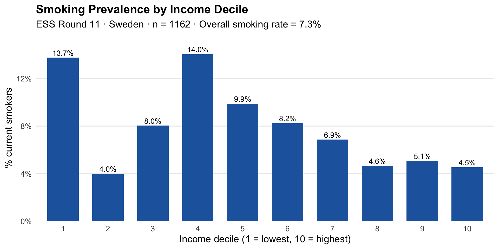
Source: Author’s calculations
What are we explaining?
Overall CI = -0.20
Smoking more concentrated among the poor
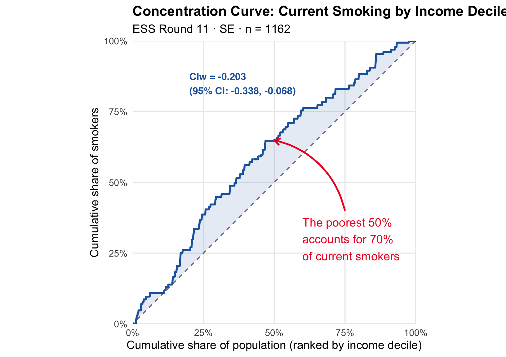
Step 1: Predictors of current smoking
| Variable | β | OR | 95% CI | p |
|---|---|---|---|---|
| Age (years) | -0.001 | 0.999 | (0.99, 1.01) | 0.906 |
| Female | 0.141 | 1.152 | (0.73, 1.83) | 0.547 |
| Low education (ISCED 1–4) | 0.359 | 1.432 | (0.90, 2.27) | 0.130 |
| Married | -0.989 | 0.372 | (0.21, 0.65) | <0.001 |
| Binge drinking (monthly+) | 0.38 | 1.463 | (0.92, 2.32) | 0.107 |
| Obese (BMI ≥ 30) | 0.495 | 1.64 | (0.90, 2.99) | 0.106 |
Should we include income in the regression?
Note that income decile (the ranking variable) is excluded from the regression.
This is deliberate, since including it can be misleading:
“the residual component will be zero, or close to zero, suggesting that we have explained all or most of the variation in the Concentration Index”
Excluding it means the residual will:
- Capture unexplained income-related variation
- Allow for a direct income → smoking pathway
- Not artificially inflate the “explained” share
The appropriate interpretation is that the covariates in the model account for part of the income gradient in smoking, and the rest remains either directly attributable to income or unexplained by the observed determinants.
Step 2: Estimating elasticity for education
\[RCI=\sum{ \underbrace{(\beta_{k}\bar{x}_{k}/\mu)}_{\text{elasticity}} RCI_{k}}+gRCI_{e}/\mu\]
- \(\beta_{\text{low education}}\) = 0.36 (OR = 1.4)
- Marginal effect: 0.024
- Mean low education: 0.452
- Mean smoking rate: 7.3%
Elasticity of smoking for low education is: (0.024 * 0.452 / .073) = 0.148
Interpretation: a 1% increase in low education increases smoking by 14.8% (not percentage points!).
What about the RCI for low education?
This is Step (2): Calculate the mean of \(y\) \((\mu)\) and of each of the \(x_{k}\) determinants
Step 3: \(RCI_{k}\)
Note the y-axis is cumulative share of low education
The poorest 50% account for roughly 60% of the share of low educated.
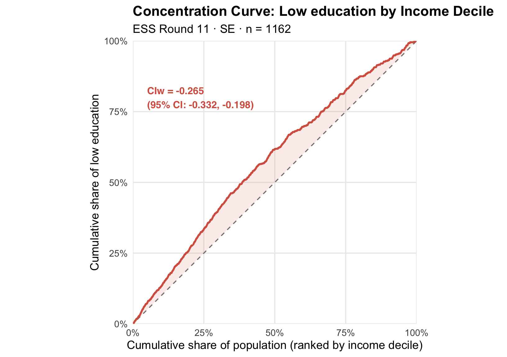
This is Step (3): Calculate the \(CI\) for each of the potential determinants \(x_{k}\)
Step 4: Calculate contributions
Estimation for a specific factor: Low education
\[RCI=\sum{ \underbrace{(\beta_{k}\bar{x}_{k}/\mu)}_{\text{elasticity}} RCI_{k}}+gRCI_{e}/\mu\]
The elasticity of smoking (prior slide) = 0.148
Now we have \(RCI_{k}\) for low education = -0.265
The contribution of low education:
\[\text{Elasticity}\times RCI_{ed} = 0.148 * -0.265 = -.039\]
Thus low education accounts for -.039/ -0.203 = 19% of the overall \(RCI\)
RCI = -0.203
(-) Binge drinking: ↑ smoking but more common at higher incomes
(+) Married: ↓ smoking but more common at higher incomes
| Contribution | ||||
|---|---|---|---|---|
| Variable | Elasticity | CI_k | Absolute | % |
| Logistic regression; marginal effects used as elasticity weights. | ||||
| Age | -0.030 | 0.001 | -0.000 | 0.0 |
| Binge drinker | 0.152 | 0.103 | 0.016 | -7.7 |
| Female | 0.060 | -0.031 | -0.002 | 0.9 |
| Obese | 0.068 | -0.013 | -0.001 | 0.4 |
| Low education | 0.144 | -0.265 | -0.038 | 18.8 |
| Married | -0.353 | 0.284 | -0.100 | 49.4 |
| Residual | — | — | -0.077 | 38.1 |
Uncertainty in the RCI Decomposition
Each contribution has sampling variability:
\[\underbrace{\frac{\hat{\beta}_k \bar{x}_k}{\hat{\mu}}}_{\text{elasticity}} \times \underbrace{\widehat{RCI}_k}_{\text{inequality in }x_k}\]
Can bootstrap the decomp \(B\) times to get empirical CIs.
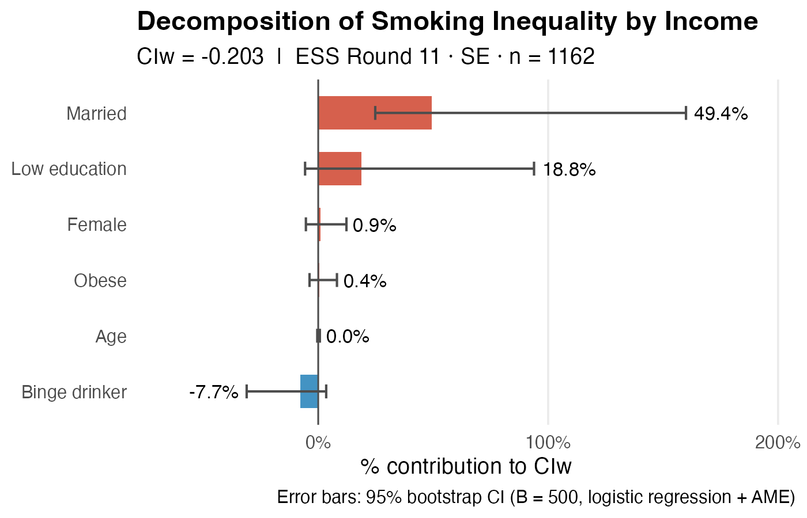
Caveats for decomposing the RCI
Decomposition results will be sensitive to the choice of determinants included (i.e., how well-specified the model is for predicting \(y\)).
The regression equations are predictive and not causal models.
Main utility is not in estimating the potential impact on \(y\) of changing the distribution of socioeconomic position, but in indicating the potential role that other factors may play in generating socioeconomic inequalities in health.
Covered Today
4. Interventional Decomposition
Why ‘interventional’?
Kitagawa, B-0, CI decomp all ‘descriptive’
What if we intervened?
Many recent developments
Reconciling the descriptive framework of KBO with causal inference.
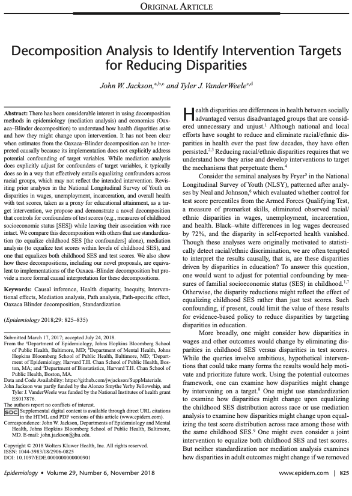
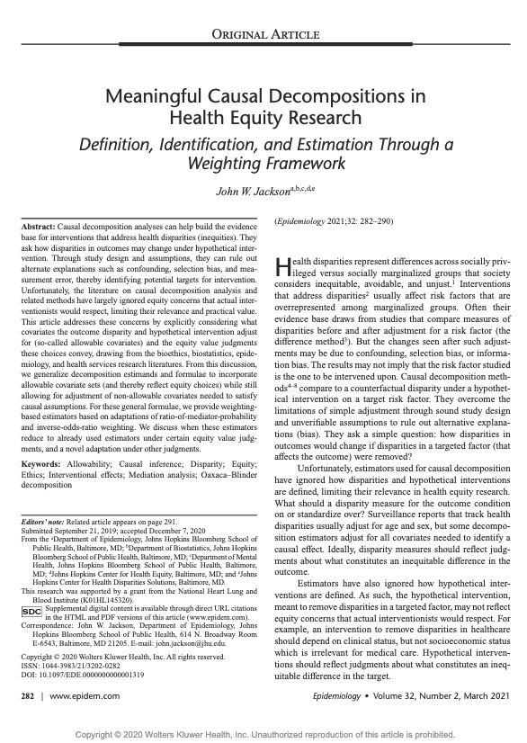
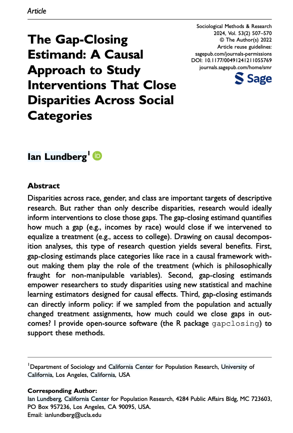
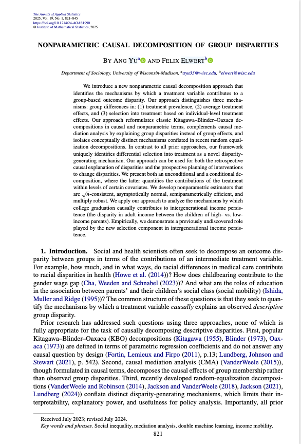
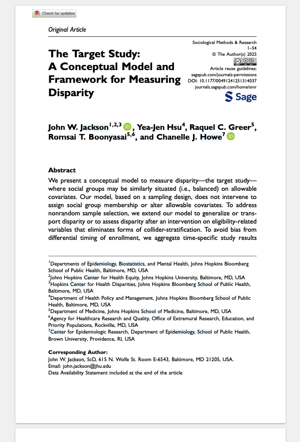
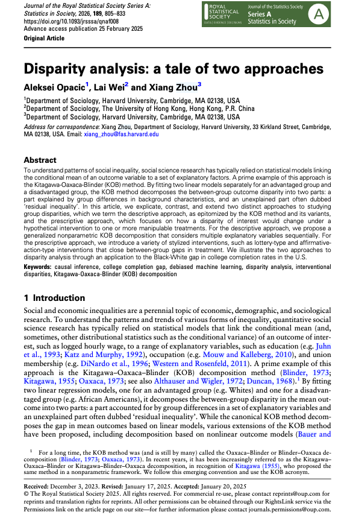
Challenges with ‘categories’
Different from causal mediation
Youth accident deaths: what would we intervene on?
Danish-origin 15–24-year-olds die in accidents more often than immigrant-origin peers (IRR 0.59 first-generation, 0.93 second-generation)
Alcohol is a plausible pathway: 16% of fatal accidents; Danish origin has 4.0 times the odds of an alcohol-related death
Drinking itself was not measured — abstention is assumed
Complication: immigrant-origin families are poorer, so adjusting for income widens the gap (0.59 → 0.39)
What if Danish-origin youth drank like their immigrant-origin peers?
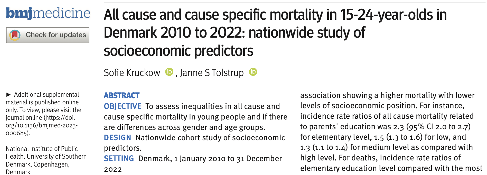
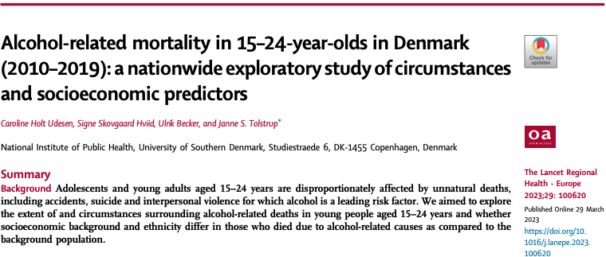
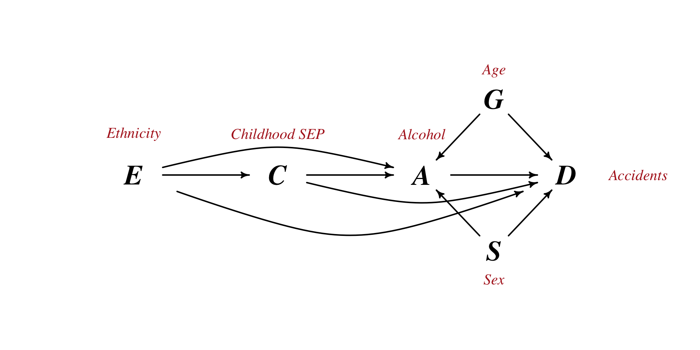
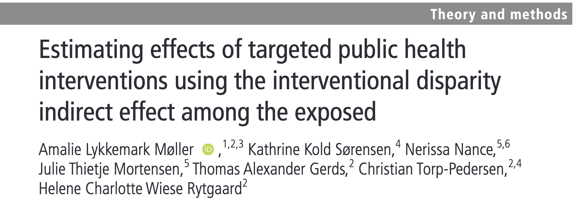
Møller et al. (2026)
Summary
Various decomposition techniques exist that may be useful for analyzing social determinants of health:
- Regression-based decomposition of Concentration Index
- Oaxaca decomposition of mean health between groups
All of these techniques make assumptions that need to be evaluated in the course of analysis.
When used properly, decomposition techniques can help to provide key evidence on why health inequalities exist and change over time.
References
Blinder, Alan S. 1973. “Wage Discrimination: Reduced Form and Structural Estimates.” Journal of Human Resources 8 (4): 436–55. https://doi.org/10.2307/144855.
Cotton, Jeremiah. 1988. “On the Decomposition of Wage Differentials.” The Review of Economics and Statistics 70 (2): 236. https://doi.org/10.2307/1928307.
Eikemo, Terje A., and Emil Øversveen. 2019. “Social Inequalities in Health: Challenges, Knowledge Gaps, Key Debates and the Need for New Data.” Scandinavian Journal of Public Health 47 (6): 593–97. https://doi.org/10.1177/1403494819866416.
Erreygers, Guido, and Roselinde Kessels. 2016. “Structural Equation Modeling for Decomposing Rank-Dependent Indicators of Socioeconomic Inequality of Health: An Empirical Study.” Health Economics Review 6 (1). https://doi.org/10.1186/s13561-016-0134-2.
Heller, Richard F., Patrick McElduff, and Richard Edwards. 2002. “Impact of Upward Social Mobility on Population Mortality: Analysis with Routine Data.” BMJ 325 (7356): 134. https://doi.org/10.1136/bmj.325.7356.134.
Hosseinpoor, Ahmad Reza, Eddy van Doorslaer, and Niko Speybroeck. 2006. “Decomposing Socioeconomic Inequality in Infant Mortality in Iran.” International Journal of Epidemiology 35 (5): 1211–19. https://doi.org/10.1093/ije/dyl164.
Jackson, John W. 2021. “Meaningful Causal Decompositions in Health Equity Research: Definition, Identification, and Estimation Through a Weighting Framework.” Epidemiology 32 (2): 282290. https://doi.org/10.1097/EDE.0000000000001319.
Jackson, John W., Yea-Jen Hsu, Raquel C. Greer, Romsai T. Boonyasai, and Chanelle J. Howe. 2025. “The Target Study: A Conceptual Model and Framework for Measuring Disparity.” Sociological Methods & Research, April, 00491241251314037. https://doi.org/10.1177/00491241251314037.
Jackson, John W., and Tyler J. VanderWeele. 2018. “Decomposition Analysis to Identify Intervention Targets for Reducing Disparities.” Epidemiology 29 (6): 825–35. https://doi.org/10.1097/EDE.0000000000000901.
Jiménez-Rubio, Dolores, and Cristina Hernández-Quevedo. 2010. “Inequalities in the Use of Health Services Between Immigrants and the Native Population in Spain: What Is Driving the Differences?” The European Journal of Health Economics 12 (1): 17–28. https://doi.org/10.1007/s10198-010-0220-z.
Kakwani, Nanak, Adam Wagstaff, and Eddy van Doorslaer. 1997. “Socioeconomic Inequalities in Health: Measurement, Computation, and Statistical Inference.” Journal of Econometrics 77 (1): 87–103. https://doi.org/10.1016/S0304-4076(96)01807-6.
Kessels, Roselinde, and Guido Erreygers. 2013. “Regression-Based Decompositions of Rank-Dependent Indicators of Socioeconomic Inequality of Health.” In Health and Inequality, 227–59. Emerald Group Publishing Limited. https://doi.org/10.1108/s1049-2585(2013)0000021010.
Kitagawa, Evelyn M. 1955. “Components of a Difference Between Two Rates.” Journal of the American Statistical Association 50 (272): 1168–94. https://doi.org/10.2307/2281213.
Kruckow, Sofie, and Janne S. Tolstrup. 2024. “All Cause and Cause Specific Mortality in 15-24-Year-Olds in Denmark 2010 to 2022: Nationwide Study of Socioeconomic Predictors.” BMJ Medicine 3 (1): e000685. https://doi.org/10.1136/bmjmed-2023-000685.
Lundberg, Ian. 2024. “The Gap-Closing Estimand: A Causal Approach to Study Interventions That Close Disparities Across Social Categories.” Sociological Methods & Research 53 (2): 507–70. https://doi.org/10.1177/00491241211055769.
Møller, Amalie Lykkemark, Kathrine Kold Sørensen, Nerissa Nance, Julie Thietje Mortensen, Thomas Alexander Gerds, Christian Torp-Pedersen, and Helene Charlotte Wiese Rytgaard. 2026. “Estimating Effects of Targeted Public Health Interventions Using the Interventional Disparity Indirect Effect Among the Exposed.” Journal of Epidemiology and Community Health 80 (5): 309–15. https://doi.org/10.1136/jech-2025-224627.
O’Donnell, Owen, Eddy van Doorslaer, Adam Wagstaff, and Magnus Lindelow. 2008. Analyzing Health Equity Using Household Survey Data. Washington, DC: World Bank.
Oaxaca, Ronald. 1973. “Male-Female Wage Differentials in Urban Labor Markets.” International Economic Review 14 (3): 693–709. https://doi.org/10.2307/2525981.
Opacic, Aleksei, Lai Wei, and Xiang Zhou. 2026. “Disparity Analysis: A Tale of Two Approaches.” Journal of the Royal Statistical Society Series A: Statistics in Society 189 (2): 805–33. https://doi.org/10.1093/jrsssa/qnaf008.
Sartorius, Victor, Marianne Philibert, Kari Klungsoyr, Jeannette Klimont, Katarzyna Szamotulska, Zeljka Drausnik, Petr Velebil, et al. 2024. “Neonatal Mortality Disparities by Gestational Age in European Countries.” JAMA Network Open 7 (8): e2424226. https://doi.org/10.1001/jamanetworkopen.2024.24226.
Udesen, Caroline Holt, Signe Skovgaard Hviid, Ulrik Becker, and Janne S. Tolstrup. 2023. “Alcohol-Related Mortality in 15-24-Year-Olds in Denmark (2010-2019): A Nationwide Exploratory Study of Circumstances and Socioeconomic Predictors.” The Lancet Regional Health - Europe 29 (June): 100620. https://doi.org/10.1016/j.lanepe.2023.100620.
Wagstaff, Adam, Eddy van Doorslaer, and Naoko Watanabe. 2003. “On Decomposing the Causes of Health Sector Inequalities with an Application to Malnutrition Inequalities in Vietnam.” Journal of Econometrics 112 (1): 207–23. https://doi.org/10.1016/S0304-4076(02)00161-6.
Yu, Ang, and Felix Elwert. 2025. “Nonparametric Causal Decomposition of Group Disparities.” The Annals of Applied Statistics 19 (1). https://doi.org/10.1214/24-AOAS1990.
Social Epidemiologic Aims
Descriptive
Existence of social differences in health
Etiologic
Causes of social differences in health
Interventions
Policies and programs to address causes